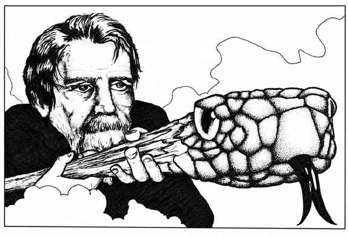
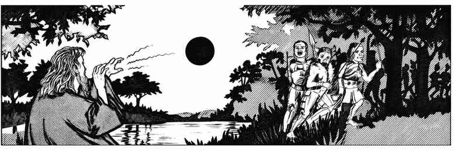

魔法物品的解释与描述 · Explanations and Descriptions of Magic Items
药水 · III.A） Potions (III.A)
药水通常装在陶瓷、水晶、玻璃或金属容器中，剂量足以供一人完整饮用，并获得下文所述的相应效果。容器也可以采用其他形式。一般而言，容器上不应有识别标记，玩家必须从每个容器中取样，才能判断液体的性质。不过，尝一小口通常就足以辨认药水；即使只是略微啜饮，也能识别出大致类别。由不同来源制成的同种药水，气味、味道和颜色也可能不同。
除非另有说明，药水效果持续 4 个完整回合，另加 1–4 回合（掷 1d4）。若只饮下半剂量，某些情况下效果持续时间也减半。药水在饮下后 2–5 段开始生效。
魔法师／炼金术士团队可以以相对低廉的成本调配药水，但必须先取得一份该类药水，才能研究其配方；此外，原料总是稀有且难以取得。这类药水研究，以及玩家角色研究新药水的相关要求，见“魔法研究”规则部分。
动物控制 · Animal Control
饮用者可以与某一类动物共情，并控制其情绪。动物类别可为猫、狗、马等。可控制的数量取决于动物体型：巨鼠为 5–20 只，人类大小的动物为 3–12 只，约半吨或更重的动物为 1–4 只。由 1d20决定可控制的动物类别：
| d20 | 动物类别 |
|---|---|
| 1–4 | 哺乳动物／有袋类 |
| 5–8 | 鸟类 |
| 9–12 | 爬行类／两栖类 |
| 13–15 | 鱼类 |
| 16–17 | 哺乳动物／有袋类／鸟类 |
| 18–19 | 爬行类／两栖类／鱼类 |
| 20 | 以上全部 |
智力达到 5（低智力）或更高的动物可进行对抗魔法的豁免检定。除非能够以某种方式交流，控制效果仅限于情绪或驱动力。注意，许多怪物无法被此药水控制，人类、半人类及类人生物也不受影响。（参见“哺乳动物控制戒指”。）
盗听 · Clairaudience
饮用者获得如同使用同名三环魔法师法术的能力（见该法术说明），但只能用来盗听未知区域，距离不超过 3"。效果仅持续 2 回合。
千里眼 · Clairvoyance
饮用者获得如同使用同名三环魔法师法术的视觉能力（见该法术说明），可看见距离不超过 3"的未知区域。与法术不同的是，它也能看见已知区域。效果持续 1 回合。
攀爬 · Climbing
饮用后，角色可以像盗贼一样攀爬垂直表面，基础滑落与坠落概率仅为 1%。应在攀爬到一半时检查一次；掷 d%，结果为 01即表示坠落。药水效果持续 1 回合，另加 5–20 轮。角色每携带相当于 1,000 金币重量的物品，滑落概率额外增加 1%。穿着护甲时，按下表追加滑落／坠落概率：
| 护甲类型 | 追加概率 |
|---|---|
| 钉皮甲 | 1% |
| 环甲 | 2% |
| 鳞甲 | 4% |
| 链甲 | 7% |
| 板条甲或片甲 | 8% |
| 板甲 | 10% |
| 任意魔法护甲 | 1% |
妄想 · Delusion
此药水会影响饮用者的心智，使其相信所饮下的是另一种药水。例如，角色可能以为自己喝下的是疗伤药水，伤势也似乎随之“恢复”；但只有在死亡或冒险结束后，才会发现药水只是令饮用者产生这种错觉。若数人尝过同一瓶药水，他们仍有 90% 的概率一致认定那是同一种药水（或相信 DM 所宣布／暗示的类别）。
缩小 · Diminution
饮用后，角色及其携带、穿着的所有物品都会缩小至正常尺寸的 5%。若饮下半剂量，则缩小至正常尺寸的 50%。效果持续 6 回合，另加 2–5 回合（掷 1d4+1）。
巨龙控制 · Dragon Control
饮用者可以对距离不超过 6"的任意巨龙施展类似魅惑怪物的效果。巨龙可进行对抗魔法的豁免检定，但掷骰结果承受 −2 惩罚。由 1d20决定可控制的巨龙种类：
| d20 | 可控制的巨龙 |
|---|---|
| 1–2 | 白龙 |
| 3–4 | 黑龙 |
| 5–7 | 绿龙 |
| 8–9 | 蓝龙 |
| 10 | 红龙 |
| 11–12 | 黄铜龙 |
| 13–14 | 赤铜龙 |
| 15 | 青铜龙 |
| 16 | 银龙 |
| 17 | 金龙 |
| 18–19 | 邪恶巨龙* |
| 20 | 善良巨龙** |
黄铜龙、青铜龙、赤铜龙、金龙、银龙。 控制效果持续 5–20 轮（掷 5d4**）。
- 黑龙、蓝龙、绿龙、红龙、白龙。
灵能 · ESP
此药水赋予饮用者与同名二环魔法师法术相同的能力（见该法术说明），但效果持续 5–40 轮（掷 5d8，即 5–40 分钟）。
额外疗伤 · Extra-Healing
完整饮用后恢复 6–27 点伤害（掷 3d8+3）；若分成三份饮用，每份恢复 1–8 点伤害。
火焰抗性 · Fire Resistance
饮用者获得对所有普通火焰（如篝火、燃烧的油，乃至巨大的木柴篝火）的魔法免疫，并能抵抗熔岩、火墙、火球、火龙吐息等产生的火焰或强热。此类火焰造成的每颗伤害骰均减少 2 点；若允许豁免检定，饮用者另获 +4 加值。若只饮用半剂量，则对普通火焰仍完全免疫，但对上述强烈火焰只获得一半效果（每颗伤害骰 −1，豁免检定 +2）。完整剂量效果持续 1 回合；半剂量持续 5 轮。
飞行 · Flying
饮用者获得如同使用同名三环魔法师法术的飞行能力（见该法术说明）。
气态形态 · Gaseous Form
饮用后，饮用者及其携带、穿着的物品都会化为气态，能够以每轮 3" 的基础速度随风飘动。阵风法术或普通强风会以空中移动速度将气体吹离原方向。气态形态透明且没有实体，会不断飘移变形；除魔法火焰或闪电外，无法受到伤害（遭受此类伤害时按正常方式计算）。旋风会对气态形态中的生物造成双倍伤害。处于气态时，饮用者可以进入任何不密封的空间；也就是说，只要有一道允许空气通过的细缝或小孔，便能穿过。必须饮尽整剂药水才能获得此效果，且效果持续药水原本的全部时长。
巨人控制 · Giant Control
必须饮尽整剂药水才能生效。效果如同“魅惑怪物”法术，可影响 1 或 2 名巨人。若只影响 1 名巨人，该巨人对抗魔法的豁免骰获得 −4 惩罚；若影响 2 名，二者的豁免骰均获得 +2 加值。具体受影响的巨人由 1d20决定：
| d20 | 巨人种类 |
|---|---|
| 1–5 | 山丘巨人 |
| 6–9 | 石巨人 |
| 10–13 | 冰霜巨人 |
| 14–17 | 火巨人 |
| 18–19 | 云巨人 |
| 20 | 风暴巨人 |
控制效果仅持续 5–30 轮（掷 5d6）。
巨人力量 · Giant Strength
饮用后，角色获得巨人的力量；以任何手持或投掷武器命中时，均获得伤害加值。角色还可以按下表所示投掷巨石。饮用后随机确定对应的巨人力量种类：
| d20 | 力量等同于 | 负重加值 | 伤害加值 | 投掷巨石射程 | 巨石基础伤害 | 弯折铁条／抬起闸门 |
|---|---|---|---|---|---|---|
| 1–6 | 山丘巨人 | +4,500 | +7 | 8" | 1–6 | 50% |
| 7–10 | 石巨人 | +5,000 | +8 | 16" | 1–12 | 60% |
| 11–14 | 冰霜巨人 | +6,000 | +9 | 10" | 1–8 | 70% |
| 15–17 | 火巨人 | +7,500 | +10 | 12" | 1–8 | 80% |
| 18–19 | 云巨人 | +9,000 | +11 | 14" | 1–10 | 90% |
| 20 | 风暴巨人 | +12,000 | +12 | 16" | 1–12 | 100% |
请将这些能力与角色的力量属性，以及“巨人力量腰带”进行比较。此药水仅战士可用，且不能赋予腰带同等的全部能力。
体型增长 · Growth
饮用者的身高与体重都会增加，衣物及随身穿戴、携带的装备也随之变大。力量增加到足以承受正常护甲与武器，但不产生战斗加值。移动速度提升至近似同体型巨人。每饮用 1/4 剂量，身高增加 6 尺；饮尽整剂后身高增加 24 尺。
疗伤 · Healing
必须一次饮尽整剂（用时 1 轮），才能恢复 4–10 点伤害（掷 2d4+2；参见“额外疗伤”）。
英雄主义 · Heroism
药水会暂时提高饮用者的生命能量等级；若其经验等级低于 10 级，按下表确定提升幅度：
| 饮用者等级 | 获得的能量等级 | 累积伤害所掷的十面骰 |
|---|---|---|
| 0 | 4 | 4 |
| 1–3 | 3 | 3+1 |
| 4–6 | 2 | 2+2 |
| 7–9 | 1 | 1+3 |
饮下药水后，角色如同处于药水赋予的经验等级进行战斗。所承受伤害首先从魔法临时增加的生命骰及加值中扣除。此药水仅战士可用。
人类控制 · Human Control
饮用者可像施放“魅惑人类”一样控制最多 32 个等级／生命骰的人类、人形生物或半人类。目标可进行对抗魔法的豁免检定。若生命骰总数包含余数，将其向下取整至完整骰数，例如 1+2=1，2+6=2。由 1d20随机决定可控制的种类：
| d20 | 生物种类 |
|---|---|
| 1–2 | 矮人 |
| 3–4 | 精灵／半精灵 |
| 5–6 | 侏儒 |
| 7–8 | 半身人 |
| 9–10 | 半兽人 |
| 11–16 | 人类 |
| 17–19 | 人形生物（豺狼人、兽人、哥布林等） |
| 20 | 精灵、半精灵与人类 |
效果持续 5–30 轮。
隐形 · Invisibility
饮用后获得如同同名法术的隐形效果（见该法术说明）。涉及战斗的行动会立即终止非战斗状态下的隐形。饮用者可一次啜饮少量药水——相当于容器内容物的 1/8——从而重新获得 3–6 回合的隐形效果。
无敌 · Invulnerability
饮用者免疫非魔法武器，以及没有魔法属性或生命骰少于 4 的生物所发动的攻击（见“只有魔法武器才能伤害的生物”）。因此，一名 8 级角色即使没有魔法武器，也无法伤害饮下无敌药水的角色。此药水还能使护甲等级改善 2 级，并使饮用者对所有攻击方式的豁免检定获得 +2 加值。必须饮完整剂才会生效；效果持续 5–20 轮。仅战士可用。
浮空 · Levitation
饮用者可如同使用同名二环魔法师法术一般浮空（见该法术说明），但只能使饮用者本人浮空。最大负重为相当于 6,000 枚金币的重量，因此饮用者或许能把另一人背在身上。
延寿 · Longevity
每饮下一剂，角色的游戏年龄减少 1–12 年；但每次饮用都会使此前所有延寿药水所消除的年龄有 1% 的累计概率全部恢复。否则，药水会恢复青春与活力，也可用于对抗魔法或怪物造成的衰老。必须饮尽整剂才能生效。
星界油 · Oil of Etherealness
这其实是一种轻质油，须从外部涂抹在衣物及裸露皮肤上。涂抹后，角色获得以太状态，可以穿过固体物体——侧向、向上或向下移动——也可以前往其他位面；但不能触碰非以太物体。涂抹 3 轮后生效，并持续 4–8 回合（另加 1–4 回合），除非在正常持续时间结束前用弱酸溶液将其洗去。此油也可涂在物体与其他生物身上。单剂足以涂抹一名普通人，以及其通常携带的装备，例如 2–3 件武器、衣物、护甲、盾牌及其他常见装备。以太生物不可见。（参见“相位门”法术，以及后文“在已知存在位面间旅行”。）
滑溜油 · Oil of Slipperiness
此油与上文的“星界油”类似，须从外部涂抹。涂抹后，任何对手都无法抓住、攥住或抱住饮用者；蛇或触手也无法将其缠紧。（绳索仍可限制其行动，但怪物的触手无法缠住涂油者。）无论是魔法或普通的蛛网等障碍物，都无法妨碍涂油者；绳索、手铐、铁链等束缚物也会从其身上滑脱。魔法绳索及类似物同样无法奏效。若把油倒在地面或台阶上，站在该处的生物每轮有 95% 概率滑倒。药油通常需 8 小时才会自然失效，也可用酒精溶液（如葡萄酒）擦除。
爱情灵药 · Philter of Love
饮用后，角色会爱上饮下药水后第一个看见的生物（参见“魅惑法术”）。如果对方与饮用者属于相近种族且性别相异，饮用者会真正迷恋并受其魅惑。魅惑效果持续 4–8 回合，迷恋效果则会持续，直到对饮用者施放“解除魔法”。
雄辩灵药 · Philter of Persuasiveness
饮用后，角色变得更加有魅力，所有反应骰检定获得 +25% 加值。此外，角色每轮可以像使用魔法师“暗示术”一样，对 3" 范围内任意数量的生物提出一个暗示（见该法术说明）。
植物控制 · Plant Control
饮用者能够影响植物生命的行为，包括普通植物、真菌、霉菌乃至蹒跚怪，且不超出其通常能力范围。饮用者可以令植物静止／沉默、移动、缠绕等，但都必须符合其能力限制。智力达到 5 或更高的植物怪物可进行对抗魔法的豁免检定。饮用者可以控制边长不超过 2" 的区域内的植物，持续 5–20 轮。若植物具有智力，便不能被直接控制去自我毁灭。（参见“魅惑植物”法术。）控制距离为 9"。
毒药 · Poison
毒药药水瓶中装的只是高度有毒的液体。此类毒药通常无味，颜色各异。吞服、从破损皮肤注入，甚至仅仅皮肤接触，都可能导致死亡。毒性分为微弱（豁免检定 +4 至 +1）、普通，或致命（豁免检定 −1 至 −4，甚至更低）。使用“解除毒性”法术，只能把毒性降低 40%；例如，投掷毒药瓶时，豁免检定调整值可由 −4提高至 +4。你也可以允许角色在战斗中投掷毒药瓶（见“战斗”）。
自我变形 · Polymorph (Self)
此药水在大多数方面都能复制同名四环魔法师法术的效果（见该法术说明）。
迅捷 · Speed
饮用后，角色的移动与战斗能力提高 100%。例如，移动速度为 9" 的角色会提升至 18"；通常每轮只能攻击一次的角色，现在每轮可以攻击两次。此药水不会缩短施法时间（参见“加速术”）。饮用迅捷药水会使角色老化 1 年，该衰老不可逆；其他效果持续 5–20 轮。
超级英雄主义 · Super-Heroism
若饮用者的经验等级低于 13 级，此药水会暂时提升其生命能量等级：
| 饮用者等级 | 获得的能量等级 | 累积伤害所掷的十面骰 |
|---|---|---|
| 0 | 6 | 5 |
| 1–3 | 5 | 4+1 |
| 4–6 | 4 | 3+2 |
| 7–9 | 3 | 2+3 |
| 10–12 | 2 | 1+4 |
除此之外，此药水与“英雄主义”药水相同，但效果持续 5–30 个近战轮。
甜水 · Sweet Water
这种液体实际上并非供饮用的药水（尽管饮下去味道不错），而是加入其他液体中，使其变成纯净、可饮用的水。它可以解除毒性并破坏魔法药水（无豁免检定），将最多 100,000 立方尺的污染水、咸水或碱性水净化为淡水；也可以将最多 1,000 立方尺的酸转化为纯水。效果永久有效，但净化后的水在初始 5–20 轮后仍可能再次遭污染或浸入杂质。
寻宝 · Treasure Finding
饮用者获得位置感，可以指出最近一大堆财宝的方向。财宝必须在 24"以内，且总重量至少相当于 10,000 枚铜币或 100 颗宝石，也可以是两者的组合。此效果只能定位有价值的金属（铜、银、琥珀、黄金、白金等）与宝石（当然也包括珠宝）；不值钱的金属，或没有贵金属／宝石的魔法物品，无法被发现。饮用者可以“感知”财宝所在方向，但无法得知距离。除特殊魔法屏障或铅衬墙外，其他介入物质都无法阻挡此能力。效果持续 5–20 轮。（机灵的玩家会尝试欺诈裁判。）
不死生物控制 · Undead Control
此药水使饮用者能够魅惑特定不死生物，包括怨魂、鬼魂、食尸鬼、阴影、骷髅、幽灵、尸妖、缚灵、吸血鬼与僵尸。魅惑能力类似魔法师“魅惑人类”法术，最多影响 16 个生命骰的不死生物；若额外生命值不足一整颗生命骰，则向下取整，例如 4+1按 4 个生命骰计算。只有具备智力的不死生物才可进行对抗魔法的豁免检定；由于药水的力量，豁免骰承受 −2 惩罚。效果持续 5–20 轮。掷 1d10确定此药水影响的不死生物种类：
| d10 | 不死生物 |
|---|---|
| 1 | 怨魂 |
| 2 | 鬼魂 |
| 3 | 食尸鬼 |
| 4 | 阴影 |
| 5 | 骷髅 |
| 6 | 幽灵 |
| 7 | 尸妖 |
| 8 | 缚灵 |
| 9 | 吸血鬼 |
| 10 | 僵尸 |
水下呼吸 · Water Breathing
有 75% 概率，一瓶中含有 2 剂；有 25% 概率含有 4 剂。饮用者可以在含有悬浮氧气的液体中正常呼吸。每饮用一剂，可维持 1 小时，另加 1–10 轮。因此，饮用水下呼吸药水的角色可以进入河流、湖泊乃至海洋深处，而不会在药水的魔法效果持续期间溺水。
卷轴 · III.B） Scrolls (III.B)
卷轴通常装在圆筒中，圆筒由象牙、玉石、皮革、金属或木材制成。你可以要求玩家必须读出刻在圆筒上的魔法文字，才能打开容器。这样既能让“阅读魔法”或“通晓语言”法术获得实际用途，也可以设置符文、爆裂符文、诅咒等陷阱。
每张卷轴都有独立的魔法密码，因此，角色必须先获得“阅读魔法”能力，才能辨认卷轴种类。卷轴一经阅读并确定其内容，之后施展卷轴魔法便不再需要“阅读魔法”。即使地图卷轴看上去具有魔法，也不会在使用适当法术前显现。阅读卷轴以确定其内容，不会触发卷轴魔法；但若卷轴带有专门触发的诅咒，则另当别论。后一类卷轴看起来与普通卷轴无异，除魔法灵光外没有邪恶或特殊灵光。
未阅读以确定内容的卷轴，有 5%–30% 概率褪色。你可以自行设定具体概率，也可以对每张卷轴掷 1d6随机决定。
检查卷轴时，可用下表确定其种类：
| 首次掷骰 | 第二次掷骰 | 卷轴类型 |
|---|---|---|
| 01–70 | 01–10 | 魔法师卷轴：幻术师 |
| 01–70 | 11–00 | 魔法师卷轴：普通魔法师 |
| 71–00 | 01–25 | 牧师卷轴：德鲁伊 |
| 71–00 | 26–00 | 牧师卷轴：普通牧师 |
只有表中指定职业的角色才能使用对应卷轴，盗贼除外。
卷轴法术的环级 · Spell Level of Scroll Spells
所有卷轴法术都假定由书写者以最简单、最快捷的方式记录。因此，法术环级及其射程、持续时间、影响区域等特征，通常比实际施展该法术所需的环级高 1 级，但施法者等级绝不会低于 6 级。例如，六环魔法师法术通常按 13 级施法者记录，七环法术则按 15 级。卷轴上的火球术或闪电束在多数情况下造成 6 颗伤害骰（6d6）；但 DM 可以决定某些卷轴法术以更高等级书写，以增加威力，不过这必然会影响下述法术失败概率。
魔法法术失败 · Magic Spell Failure
角色得到含有尚未达到使用等级之法术的卷轴时，仍可尝试使用；但每相差 1 级，便有 5% 的失败概率。以一名 1 级魔法师读到含九环法术的卷轴为例：该法术要到 18 级才能使用，等级差为 17，故失败概率为 85%。掷骰结果若不高于该失败概率，便表示法术出现某种失败；之后再按下表确定失败性质：
| 等级差 | 完全失败 | 逆转或有害效果 |
|---|---|---|
| 1–3 | 95% | 5% |
| 4–6 | 85% | 15% |
| 7–9 | 75% | 25% |
| 10–12 | 65% | 35% |
| 13–15 | 50% | 50% |
| 16 级及以上 | 30% | 70% |
使用卷轴法术 · Use of Scroll Spells
角色阅读卷轴以抄录法术公式（从而“学会”法术）或释放其中魔力时，卷轴上的文字会完全消失，魔法也随之从卷轴中消散。法术的魔力依附在文字中；使用后文字便会消失。因此，从一张含 7 个法术的卷轴施放一个法术后，它便只剩下 6 个法术。无论玩家尝试做什么，卷轴法术都只能使用一次，且仅此一次。只有你明确设定的特殊魔法物品例外——例如每周可阅读一次的卷轴；这类物品应当极为罕见。
使用卷轴法术的注记 · Note Regarding Use of Scroll Spells
能够阅读并使用卷轴法术的角色，可以不受其他限制地施法。只要角色已知卷轴上的法术，便不必先使用特殊的“阅读魔法”能力。即使魔法师因其他原因不能使用某个法术（例如尚未达到使用等级），仍可阅读卷轴；但这种情况下仍可能发生法术失败。能够使用卷轴法术，并不意味着可以跨职业施法：牧师不能使用德鲁伊或魔法师法术，魔法师也不能使用牧师法术；同样，这种能力不适用于非施法职业。防护卷轴除外，任何职业及种族的角色都可以阅读。
卷轴法术环级范围 · Spell Level Range
本节规定如何随机确定尚未预先指定的卷轴法术环级。确定法术环级很简单：查阅相应的《玩家手册》法术表，随机选择适用环级即可。
防护卷轴 · Protection Scrolls
防护恶魔 · Protection from Demons
阅读此卷轴需 1 个完整回合。若要防护所有种类的恶魔（包括恶魔王子），则须用时一回合；防护 VI 型及以下恶魔需 7 段；防护 III 型及以下恶魔仅需 3 段。读卷轴后会在阅读者周围 10 尺范围内生成向外延伸的防护圈。受保护的恶魔无法以任何方式——包括物理、魔法或其他手段——穿过防护圈；圈内的人若有办法，也可以向恶魔发动攻击。此防护圈并非真实的实体屏障：若使用者强迫恶魔进入无处可退的位置（例如角落），又继续向前逼近，恶魔不会受到伤害，但防护会被视为自愿解除并随之消失。此卷轴不能用作攻击性武器。效果持续 5–20 轮（掷 5d4）。
防护魔鬼 · Protection from Devils
此卷轴与“防护恶魔”几乎相同。若要防护所有种类的魔鬼，阅读需 1 回合；防护大魔鬼需 7 段；防护较弱魔鬼需 3 段。
防护元素生物 · Protection from Elementals
阅读时间为 6 段。掷 d100确定卷轴对应的元素生物种类：
| d100 | 防护对象 |
|---|---|
| 01–15 | 防护气元素生物（包括飞翼仆役、巨灵、隐形潜行者、风行者） |
| 16–30 | 防护土元素生物（包括泽恩） |
| 31–45 | 防护火元素生物（包括火巨灵、沙罗曼达） |
| 46–60 | 防护水元素生物（包括海妖与水异怪） |
| 61–00 | 防护所有元素生物 |
魔法会保护卷轴阅读者，以及其 10 尺范围内的所有生物，使其免受所指定种类或全部种类的元素生物侵害。若卷轴针对特定元素种类，防护圈最多可保护 24 个生命骰的元素生物；若针对全部元素种类，则最多保护 16 个生命骰。效果持续 5–40 轮（掷 5d8）。元素生物仍可以从防护圈外发动攻击；若某个元素生物的生命骰数超过该卷轴可防护的上限，或有多个元素生物令总生命骰数超过上限，超出部分便能够进入并攻击。
防护兽化生物 · Protection from Lycanthropes
阅读时间为 4 段。此卷轴有 7 种，由 d100决定：
| d100 | 防护对象 |
|---|---|
| 01–05 | 防护熊人 |
| 06–10 | 防护猪人 |
| 11–20 | 防护鼠人 |
| 21–25 | 防护虎人 |
| 26–40 | 防护狼人 |
| 41–98 | 防护所有兽化生物 |
| 99–00 | 防护变形者 |
阅读卷轴后会生成一个半径 10 尺、随阅读者移动的防护圈。每张卷轴可抵御 49 个生命骰的兽化生物；若生命骰带有余数，则向下计入，除非余数超过 +2。除此之外，效果与元素生物防护卷轴相似。针对变形者的卷轴，可以防护能够变成人形的怪物（变形怪、某些巨龙、德鲁伊、豺狼人等），以及受到变形术影响的生物和真正的兽化生物。防护持续 5–30 轮。
防护魔法 · Protection from Magic
阅读时间为 8 段。此卷轴会在阅读者周围 5 尺半径内生成一个强大而不可见的反魔法球，阻止任何形式的魔法穿入或穿出，但不限制普通物体。与其他防护效果一样，反魔法球会随阅读者移动。任何魔法物品一旦触及此球，都必须进行豁免检定；有 50% 概率会被吸尽所有魔力。使用 d20，掷出 11 或更高即为豁免成功。若多件魔法物品同时触及球体，则先检定最前方的物品（例如持有者手中前伸的魔法剑），再按威力由强到弱依次检定；直到某件物品豁免失败、球体消散，该物品也失去魔力。效果持续 5–30 轮（掷 5d6）。
防护石化 · Protection from Petrification
阅读时间为 5 段。此卷轴会生成一个半径 10 尺、随阅读者移动的防护圈。圈内所有生物完全免疫任何会使血肉变成石头的攻击，无论其为魔法或非魔法。效果持续 5–20 轮（掷 5d4）。
防护附身 · Protection from Possession
阅读时间为 1 回合。此卷轴会生成一个半径 10 尺、随阅读者移动的魔法防护圈。圈内所有生物都能抵御附身，包括“魔法容器术”等魔法攻击、针对附身或心灵控制的攻击，以及基于灵能或魔法的能量吸取；此类威胁包括恶魔、魔鬼、夜魔或其他具有类似附身能力的生物。此防护甚至对圈内的尸体有效。90% 的此类卷轴效果持续 10–60 轮；另有 10% 会持续 10–60 回合，但防护圈不会随阅读者移动。
防护不死生物 · Protection from Undead
阅读时间为 4 段。此卷轴会生成一个半径 5 尺、随阅读者移动的防护圈。圈内所有生物都能免受不死生物的物理攻击，包括怨魂、鬼魂、食尸鬼、阴影、骷髅、幽灵、尸妖、缚灵、吸血鬼与僵尸；但此防护不抵御魔法或其他攻击方式。若某生物离开防护区域，便会受到不死生物的物理攻击。防护圈最多可抵御 35 个生命骰／等级的不死生物；超出部分可以穿过防护圈。效果持续 10–80 轮（掷 10d8）。注意，DM 可以决定某些防护卷轴只针对一种或数种特定不死生物，而非所有不死生物。（参见“药水：不死生物控制”的骰值表。）
特别说明：所有防护卷轴的效果可以累积，但持续时间不会累积。
戒指 · III.C） Rings (III.C)
所有魔法戒指通常都会散发魔法灵光，但若没有某种神秘手段，大多数都无法被识别为魔法戒指。此外，它们外观相似，要确定某枚戒指的魔法能力非常困难。必须戴上戒指并尝试各种行为，才能发现它的作用。这需要 DM 有耐心，但游戏要求如此。戒指不会散发善良或邪恶灵光。
角色同一时间最多可戴 2 枚魔法戒指；若戴得更多，所有戒指都会失效。同一只手最多只能戴 1 枚魔法戒指；若戴上第 2 枚，两枚都会失效。戒指必须戴在手指上；脚趾、耳垂等处所戴的戒指不具魔法效力。
戒指的类法术能力通常视为由 12 级魔法师施展，除非该能力要求更高的施法等级；此时按能够施展等效法术所需的最低魔法师等级生效。
除其他规则明确禁止外，所有职业与人类／类人生物都可以佩戴和使用魔法戒指。你也可以允许具有手指、能戴戒指的“怪物”佩戴戒指；其中有些怪物确实能从戒指获益。例如，巨魔戴上再生戒指，除了其天生再生能力外，还会获得戒指的额外效果。
任何种族的角色都可以使用戒指，但侏儒、矮人与半身人所戴戒指有 20% 概率发生故障。故障时戒指只是无法运作。诅咒戒指（反向、妄想、虚弱）也适用这一规则；若戒指不起作用，角色会察觉并可将其取下。
戒指表（III.C）及下列说明中的 ‡ 符号，表示该戒指拥有最强大的魔法能力；DM 可决定它们拥有数量有限的 charges，用尽后即耗尽。
反向戒指 · Ring of Contrariness
这是一枚诅咒戒指，会使佩戴者无法赞同任何想法、陈述或行动。戴上后，只有对佩戴者施放“解除诅咒”才能取下。受诅咒影响，佩戴者会尝试施放自己会用的任何法术。此外，反向戒指还会随机拥有以下一项额外魔法能力：
| d100 | 额外能力 |
|---|---|
| 01–20 | 飞行 |
| 21–40 | 隐形 |
| 41–60 | 浮空 |
| 61–70 | 电爪术（每轮一次） |
| 71–80 | 法术反转 |
| 81–00 | 力量 18/00 |
反向诅咒无法从戒指本身移除。佩戴者会使用自己的能力以及戒指能力，以确保戒指留在手上，但不会伤害自己。例如，其他角色建议他攻击某个目标，或认为自己防守严密、不应攻击时，佩戴者便会反其道而行之——甚至可能攻击或打向说话者的头，因为他显然就是这么认为的。若反向戒指会施展法术，则必须对佩戴者累计施放足以达到或超过 100% 效力的“解除诅咒”，才能解除该项法术效果。
妄想戒指 · Ring of Delusion
妄想戒指会让佩戴者相信它是另一种戒指——任何佩戴者真心希望得到的戒指都可以。佩戴者会完全确信自己戴的确实是具有其他魔法能力的戒指，并会在无意识中运用任何能力（包括其他魔法物品的能力），以产生符合其想象属性的结果。作为裁判，你必须谨慎裁定这种自我欺骗能有多成功、观察者会受到何种影响，以及他们能看出什么。此戒指可以随时取下。
召唤巨灵戒指 · Ring of Djinni Summoning
这枚戒指是众多奇幻传说中的宝物之一，十分实用。它是一道特殊的“传送门”，可以从气元素位面召唤一名特定巨灵。擦拭戒指后，召唤便会开始；巨灵在下一轮现身。它会忠实服从并侍奉戒指佩戴者；若巨灵被杀，戒指便会失去魔力，变得毫无价值。巨灵的能力与特性见《怪物图鉴》。
元素控制戒指 · Ring of Elemental Command
元素控制戒指分为 4 种，威力极强。每一种表面看起来都只像一枚次级戒指（见下文），但还拥有以下共同能力：
1. 戒指所对应位面的元素生物不能接近佩戴者 5 尺以内，也不能攻击佩戴者。不过，佩戴者可以放弃这层保护，改为尝试魅惑该元素生物（豁免检定按 −2 调整）。若魅惑失败，完全防护便会消失，且不能再尝试魅惑；但下文所列的次级能力仍可使用。 2. 来自对应位面、但并非普通元素生物的生物，攻击佩戴者时命中骰承受 −1 惩罚；佩戴者每颗生命骰受到的伤害减少 1 点；对方攻击的豁免检定调整为 +2。佩戴者攻击该类元素生物时命中骰获得 +4（或对方豁免检定承受 −4），并额外造成 6 点伤害（总计，不是每颗伤害骰）。戒指佩戴者使用任何武器攻击元素生物都有效，即使武器不是魔法武器。 3. 佩戴者可以与对应位面的元素生物交谈；它们也能认出戒指，因此至少会尊重佩戴者。若双方阵营相反，这种尊重会因佩戴者强大而转为恐惧；若佩戴者弱小，对方则会怀有憎恨并试图杀死他。 4. 戒指佩戴者进行豁免检定时会受到以下惩罚：
| 戒指种类 | 豁免检定惩罚 |
|---|---|
| 气 | 对抗火焰时 −2 |
| 土 | 对抗石化时 −2 |
| 火 | 对抗水或寒冷时 −2 |
| 水 | 对抗闪电／电击时 −2 |
5. 元素控制戒指的主要或次要能力，每次只能使用一种。
气元素戒指 · Air
佩戴者可随意产生以下魔法效果：
- 阵风术（每轮一次）
- 飞行术
- 力场墙（每日一次）
- 控制风向（每周一次）
- 隐形术
在满足某种条件前（例如戒指受祝福、佩戴者杀死一个气元素生物，或 DM 认为足以激活全部潜能的其他条件），它看起来只是一枚隐形戒指。
土元素戒指 · Earth
佩戴者可随意产生以下魔法效果：
- 辨石术（每日一次）
- 穿墙术（每日两次）
- 石墙术（每日一次）
- 石化返生术（每周一次）
- 移土术（每周一次）
- 羽落术
在你设定的条件满足前，此戒指看起来只是一枚羽落戒指。
火元素戒指 · Fire
佩戴者可随意产生以下魔法效果：
- 燃烧之手（每回合一次）
- 烟火术（每日两次）
- 火墙术（每日一次）
- 火焰打击（每周两次）
- 火焰抗性
在你设定的条件满足前，此戒指看起来只是一枚火焰抗性戒指。
水元素戒指 · Water
佩戴者可随意产生以下魔法效果：
- 净化水
- 制造水（每日一次）
- 水下呼吸（半径 5 尺）
- 冰墙术（每日一次）
- 水中呼吸
- 降水术（每周两次）
- 控水术（每周两次）
- 水上行走
在你设定的条件满足前，此戒指看起来只是一枚水上行走戒指。
戒指能力按 12 级经验等级生效；若施展相应魔法所需的最低等级更高，则按较高等级计算射程、持续时间、影响区域等。戒指的额外能力只需 5 段即可发动。
羽落戒指 · Ring of Feather Falling
若佩戴者坠落 5 尺或更高，此戒指会自动发动羽落效果，使其免于坠落伤害。（参见“羽落术”。）
火焰抗性戒指 · Ring of Fire Resistance
佩戴者完全免疫普通火焰——例如火把、燃烧的油与篝火。非常巨大或炽热的火焰，例如熔岩、恶魔自焚、地狱犬吐息或火墙术，若佩戴者身处其中，每轮会造成 10 点伤害（每段 1 点）。但对特别炽热的火焰，例如红龙吐息、火蜥蜴吐息、火球术、火焰打击或火焰风暴，佩戴者的豁免骰获得 +4；此类火焰的每颗伤害骰减少 2 点，但伤害最低仍为 1 点。一般而言，普通火焰每次最多造成 24 点伤害；特别炽热的火焰则可造成 25 点或更多。
行动自如戒指 · Ring of Free Action
佩戴者能够自由移动并正常攻击，不受蛛网、定身术或迟缓术等效果影响，即便身处水下也一样。对前两种法术而言，它们完全不起作用；对后者而言，佩戴者以正常地面速度移动，并可使用斧、弯刀等武器造成完整伤害，也可使用连枷、战锤、钉头锤等钝击武器——前提是武器用于挥击，而不是投掷。不过，此戒指不会赋予水下呼吸能力。
影响人类戒指 · Ring of Human Influence
佩戴者与人类／类人生物进行反应检定时，魅力视为 18。此外，佩戴者可对交谈过的任意人类或类人生物提出一个暗示（允许豁免检定），也可像使用魔法师“魅惑人类”法术一样，魅惑最多 21 个等级／生命骰的人类或类人生物（目标可进行豁免检定）。后两项能力每日各可使用一次。“暗示术”或魅惑需 3 段施法时间。
隐形戒指 · Ring of Invisibility
佩戴者可以随意立即隐形，效果与魔法师“隐形术”相同（见该法术说明）；但有 10% 的戒指还具有无声效果，使佩戴者绝对静默。若佩戴者开口说话或以其他方式打破静默，便会失去静默效果。
哺乳动物控制戒指 · Ring of Mammal Control
佩戴者可以完全控制智力为 4 或更低的哺乳动物（动物或半智能哺乳动物），总计最多 30 个生命骰。控制能力甚至可让受控生物自杀，但需要佩戴者全神贯注。（注意：此戒指不影响鸟类与哺乳动物混合的生物、人类、半人类，以及拉玛苏、舍度、曼提柯尔等怪物。若不确定某种怪物是否属于哺乳动物，就视为不属于。）显然，老鼠、鼬、群居动物、海豚，甚至独角兽都属于哺乳动物，但其智力会使其中较聪明者无法被控制。控制需 3 段发动。
多重祈愿戒指 · Ring of Multiple Wishes
此戒指含有 2–8 个“祈愿术”（掷 2d4；见该法术说明）。如同处理任何祈愿一样，DM 必须谨慎处理玩家提出的请求。若玩家贪得无厌，务必“刁难”他们：逐字解释其措辞、扭曲语义，或直接裁定请求滥用魔力。无论结果如何，只要使用祈愿术，次数便会消耗，不论祈愿是否实现、以何种方式实现。祈愿术无法取消神祇般存在的命令，除非祈愿来自另一位同等存在。
防护戒指 · Ring of Protection
防护戒指会提高佩戴者的护甲等级，并使其对所有攻击方式的豁免检定骰获得相应加值。+1 戒指会令 AC 提高 1 级（例如从 10降至 9），并使豁免骰获得 +1。除了以下例外，其魔法效果可以与其他防护魔法物品累积：
1. 若佩戴者穿着魔法护甲，戒指不会再提高其护甲等级，但仍会增加豁免骰加值。 2. 同一角色或同一区域内同时生效的防护戒指，效果不叠加；只有最强的一枚生效。因此，两枚 +2 防护戒指的效果仍然只有 +2。
掷 d100确定戒指的价值与能力：
| d100 | 能力 |
|---|---|
| 01–70 | +1 |
| 71–82 | +2 |
| 83 | +2，半径 5 尺防护 |
| 84–90 | +3 |
| 91 | +3，半径 5 尺防护 |
| 92–97 | AC +4，豁免骰 +2 |
| 98–00 | AC +6，豁免骰 +1 |
半径 5 尺的加值适用于圈内所有生物的豁免检定；但提高护甲等级的效果只作用于戒指佩戴者。
再生戒指 · Ring of Regeneration
此戒指有 2 种。普通再生戒指每轮恢复 1 点生命值，也能逐渐长回失去的肢体或器官。它甚至能使佩戴者死而复生；但若死因是毒药，佩戴者必须再进行一次对抗毒药的豁免检定，否则毒药仍会留在体内。只有火焰、酸或类似手段彻底毁坏所有活体组织，才能阻止再生。当然，必须戴着戒指才会生效，取下后再生便停止。罕见的吸血再生戒指则会立即恢复佩戴者在近战中对敌人造成伤害值的一半生命值（不足 1 点的零数舍去），但除此之外不会使其再生，也不会使其复活。掷百分骰决定戒指种类：01–90 为普通再生戒指，91–00 为吸血再生戒指。佩戴者的生命值总数无论如何都不能超过最初生成的数值。
星辰射击戒指 · Ring of Shooting Stars
此戒指有 2 种运作模式，且都只能在相对黑暗的环境下生效。夜间身处露天环境时，可产生以下效果：
- 舞光术（每小时一次，效果同法术）
- 光亮术（每夜两次，射程 12"，效果同法术）
- 球状闪电（每夜一次，见下文）
- 星辰射击（特殊能力，见下文）
球状闪电能力可按佩戴者意愿释放 1–4 个闪电球。它们发光，外观与舞光术产生的光球完全相同；佩戴者可以像操纵舞光术光球那样控制它们。
闪电球射程为 12"，持续 4 轮。每个球直径约 3 尺，每轮可移动 4"。任何生物触碰或接近闪电球，都会使其电荷耗散；若豁免检定成功，伤害减半，因为接触时隔着一段空气。闪电球的数量和每球伤害如下：
| 闪电球数量 | 每球伤害 |
|---|---|
| 4 个 | 2–8 点 |
| 3 个 | 2–12 点 |
| 2 个 | 5–20 点 |
| 1 个 | 4–48 点 |
闪电球可以同时释放，也可以在一个回合内分开释放，或在整夜所需时间内陆续使用。
星辰射击是带有火焰尾迹的发光飞弹，类似“流星爆”。戒指每周可发射 3 颗星辰射击，可同时发射，也可一次一颗。每颗射击命中时造成 12 点伤害，并爆裂成直径 1"的火球，造成 24 点伤害。被射击直接命中的生物同时承受撞击伤害与爆裂伤害。处于爆裂半径内的生物可进行对抗魔法的豁免检定，成功则伤害减半，受到 12 点；否则受到 24 点。射程为 7"，飞弹到达射程末端时爆裂；若提前命中物体或生物，则立即爆裂。星辰射击沿直线飞行，位于飞行路径上的生物必须对抗魔法豁免，否则被击中。距离戒指佩戴者 2"以内时豁免骰承受 −3，距离 2–4"时承受 −1，更远则不受调整。
夜间室内或地下时，戒指具有以下能力：
- 妖精之火（每日两次，效果同法术）
- 火花喷涌（每日一次，见下文）
火花喷涌会形成一团灼热的紫色火花云，从戒指向外扩散 20 尺，宽 10 尺。区域内未穿金属护甲、也未持有金属武器的生物受到 2–8 点伤害；否则受到 4–16 点伤害。
除非另有说明，以上能力的射程、持续时间和影响区域均按对应法术的最低施法等级计算。施法时间为 5 段。
法术储存戒指 · Ring of Spell Storing
法术储存戒指含有 2–5 个法术（掷 1d4+1）；佩戴者可像相应等级的施法者一样使用其中的法术。戒指中法术的职业类别按卷轴相同方式确定；每个法术的环级按下表随机决定：
- 牧师：掷 1d6；若结果为 6，改掷 1d4。
- 德鲁伊：按牧师法术处理。
- 魔法师：掷 1d8；若结果为 8，改掷 1d6。
- 幻术师：按牧师法术处理。
同一环级具体储存何种法术也随机决定。戒指具有心灵感应能力，会向佩戴者传递其中法术的名称。一旦确定职业、环级与法术种类，戒指能力便固定不变。法术施放后，只能由具备相应职业与等级的角色将其恢复；例如，12 级魔法师才能把一个六环魔法师法术重新存入戒指。施放储存法术需 5 段。
法术反转戒指 · Ring of Spell Turning
此戒指会扭曲以佩戴者为目标的法术所经过的三维空间。施展于佩戴者身上的法术通常会部分或全部反弹至施法者。戒指生效时，目标（佩戴者）与施法者之间的距离，以及目标所在区域，都不会像法术激活戒指前看起来那样。以下 3 种情况例外：
1. 影响某片区域、但并非直接以戒指佩戴者为目标的法术，不会被反转。 2. 通过触碰传递的法术不会被反转。 3. 储存在装置（权杖、法杖、魔杖、戒指等魔法物品）中的魔法，若无需施法便可触发，则不会被反转。卷轴法术不视为装置。
若法术直接以佩戴者为目标，则掷百分骰并四舍五入到最接近的十位数，以确定有多少法术效果反弹给施法者。例：掷出 1–5向下取整，6–9向上进位，因此 05视为 0%，而 96视为 100%。百分骰结果表示被反弹回施法者的法术比例。
双方受到的伤害按比例分配。双方的豁免骰都根据未达到 100%的差值，每低 10%获得 +1调整：例如 80%对应 +2，70%对应 +3，依此类推，10%对应 +9。即使经过这些豁免调整，目标与施法者仍可能都变成牛蛙！
法术反转戒指特别说明：除非反转骰值为 09 或更低，或为 91 或更高，戒指都会让原本不允许豁免的法术获得一次豁免机会。豁免成功时，法术失效，或按该法术适用情况只造成一半正常伤害。每反转 10%法术，便有 5%（1/20）概率通过豁免：例如掷出 11–19时，掷 20即可成功；掷出 20–29时，掷 19–20可成功；依此类推。举例来说，幻术师向戴着此戒指的战士施展迷宫术。通常该法术不允许豁免，但戒指反转了 34%效果，因此战士有 15%概率豁免成功（按 34%反转计算）；否则便承受完整效果。幻术师也必须豁免，因其受到 100%−34%=66%的法术效果影响，按 10%为单位取整后，豁免成功概率为 30%，即掷出 15–20即可成功；否则也会被困入迷宫。此项特殊豁免不受种族、魔法物品或其他条件调整，包括已有法术。
若法术影响一定数量的等级，则其可影响等级总数必须至少等于佩戴者与施法者等级之和。满足此条件后，再按上述方式判定最终效果。
若佩戴者希望自己接受某个法术，必须取下法术反转戒指才能做到。
灵能攻击不视为施法。
若施法者和法术目标同时佩戴法术反转戒指，便会产生共振场。掷 d100确定结果：
| d100 | 结果 |
|---|---|
| 01–70 | 法术消散，无任何效果 |
| 71–80 | 法术以完整效果同时影响双方 |
| 81–97 | 两枚戒指都永久耗尽魔力 |
| 98–00 | 双方被卷入通往正物质位面的裂隙 |
游泳戒指 · Ring of Swimming
游泳戒指使佩戴者能够以完整 21"基础速度游泳，当然，前提是只穿适合游泳的衣物。若水深至少为每下潜 10 尺对应 ½"，佩戴者还能安全下潜至 50 尺；并可在水下停留最多 4 轮而不必呼吸。佩戴者可连续在水面游泳 4 小时，随后须休息 1 小时（可漂浮休息）。除台风般的天气外，此戒指还可使佩戴者在水面保持漂浮。
心灵遥控戒指 · Ring of Telekinesis
此戒指使佩戴者能够像使用同名五环魔法师法术那样，以心灵遥控物体（见该法术说明）。可移动物体的重量因戒指强度而异，掷 d100决定：
| d100 | 最大重量 |
|---|---|
| 01–25 | 250 枚金币重量 |
| 26–50 | 500 枚金币重量 |
| 51–89 | 1,000 枚金币重量 |
| 90–99 | 2,000 枚金币重量 |
| 00 | 4,000 枚金币重量 |
发动心灵遥控需 1 段。
三愿戒指 · Ring of Three Wishes
此戒指固定含有 3 个祈愿术，而非随机数量；除此之外与多重祈愿戒指相同，但其中 25%（骰值 01–25）含有 3 个有限祈愿术（见“有限祈愿术”）。
保暖戒指 · Ring of Warmth
即使在没有任何衣物的极寒环境中，保暖戒指也能为佩戴者维持体温。它还会按每轮 1 点的速度恢复冻伤造成的伤害。对抗寒冷的豁免检定获得 +2，且每颗伤害骰造成的伤害减少 1 点。
水上行走戒指 · Ring of Water Walking
此戒指使佩戴者能够在任何液体表面行走而不下沉，包括泥沼、流沙、油、流动的水，甚至积雪。行走于液体或水面时，佩戴者的双脚并不会真正接触表面；但泥沼或积雪可能会硬化或压出椭圆形凹陷，约 1½ 英寸长、每 100 磅体重下陷 1 英寸。移动速度与佩戴者正常步行速度相同。水上行走戒指最多可支撑 1,200 磅重量。
虚弱戒指 · Ring of Weakness
这是一枚诅咒戒指，会令佩戴者每轮损失 1 点力量与 1 点体质，直至两项属性都降至 3。在角色确实需要发挥体能之前（例如战斗或搬运重物），这种损失通常不会被察觉；戒指还会让佩戴者随意隐形，并使力量与体质的流失速度加倍。达到完全虚弱后，佩戴者将无法履行其职业职责。只有先对戒指施放“解除诅咒”，再施放“解除魔法”，才能移除虚弱戒指。
另有 5% 概率，这枚戒指其实是狂暴力量戒指。它会逐渐把力量与体质提高到 18；若佩戴者是战士，还须掷百分骰确定力量加值。每轮两项属性各增加 1 点。但只要两项属性都达到 18，佩戴者无论身处何种情况，都会立即与遇到的任何对手进入近战。戒指造成的属性损失可通过休息恢复：每休息 1 天，两项属性各恢复 1 点。取下戒指后，狂暴力量效果消失，体质值则按已获得的数值保留。
法术师戒指 · Ring of Wizardry
只有魔法师可以从此戒指获益。其他职业——包括具备施法能力的职业——都无法理解或使用它。法术师戒指会使魔法师在一个或多个法术环级上每日可准备的法术数量加倍。掷 d100确定戒指的能力：
| d100 | 加倍的法术环级 |
|---|---|
| 01–50 | 一环法术 |
| 51–75 | 二环法术 |
| 76–82 | 三环法术 |
| 83–88 | 一环与二环法术 |
| 89–92 | 四环法术 |
| 93–95 | 五环法术 |
| 96–99 | 一至三环法术 |
| 00 | 四环与五环法术 |
《X光视觉戒指 Ring of X-Ray Vision》 · X光视觉戒指 Ring of X-Ray Vision
此戒指赋予佩戴者透视普通视觉无法穿透物质的能力。视觉范围为 20 尺，视野会扩张，仿佛处于普通日光下。X 光视觉每轮可穿透 20 尺厚的布料、木材或类似动植物材料，10 尺厚的石头，或 10 英寸厚的铁、钢等金属；铅、黄金与白金无法穿透。
| 被观察物质 | 每轮可穿透厚度 | 最大穿透厚度 |
|---|---|---|
| 动物质 | 4 尺 | 20 尺 |
| 植物质 | 2½ 尺 | 20 尺 |
| 石头 | 1 尺 | 10 尺 |
| 铁、钢等 | 1 英寸 | 10 英寸 |
| 铅、黄金、白金 | 无 | 无 |
每轮可透视 100 平方尺的区域。例如，一个回合内，佩戴者可以扫描一整片宽 10 尺、高 10 尺、厚 10 尺的石墙。用 X 光扫描时，有 90% 概率发现暗格、抽屉、凹室与门。尽管此戒指能让佩戴者搜寻秘密门、陷阱与隐藏物品，其能力仍有限制：每 4 回合内使用超过 1 次，每次额外使用都会损失 1 点体质。例如，一小时内使用 3 回合会损失 2 点体质；使用 4 回合则损失 3 点。休息时每 1 天可恢复 2 点。体质降至 2时，佩戴者精疲力竭，必须立即休息；在体质恢复至 3或更高前，不能进行任何活动，甚至不能行走。
权杖等（包括法杖与魔杖） · III.D） Rods, Staves, and Wands
权杖长约 3 尺，粗细约等于拇指；法杖长约 5–6 尺，粗细如幼树，底端约 1½ 英寸、末端约 1 英寸，但通常整根粗细近似一致，可能刻槽或缠纹等；魔杖长约 1¼ 尺，形状细长。权杖通常由金属、异木、象牙或骨头制成，可能朴素无饰，也可能装饰、雕刻或带帽。法杖通常由木材制成，常有雕刻，并可能包以金属、装有金属箍头，外观多粗糙扭曲。魔杖由象牙、骨头或木材制成，通常装有金属、水晶、石头等材料的末端；它们较脆，容易折断。
权杖与魔杖通常会放在盒子或类似容器中；法杖则能独立直立保存。当然，这并不妨碍它们被藏起来。
除非另有说明，这些物品具有下列 charges；每使用一次，便消耗 1 charge（使用者未必知道物品还剩多少 charges）：
| 物品 | 初始 charges |
|---|---|
| 权杖 | 50，减去 0–9（掷 1d10−1） |
| 法杖 | 25，减去 0–5（掷 1d6−1） |
| 魔杖 | 100，减去 0–19（掷 1d20−1） |
多数此类物品可以由等级足够高的施法者重新充能，详见“魔法物品的制作”。权杖、法杖或魔杖一旦耗尽所有 charges，就会永久失效，最后化为粉末。
权杖、法杖与魔杖的使用 · Use of Rods, Staves, and Wands
任何能在远处释放魔法的此类装置——也就是说，无需触碰受影响的物体或生物——通常都需要说出命令词才能启动。例如，闪电魔杖的命令词可能是“闪光”（blitzen）；也可以使用一段启动短语，如“沃特与安培，伏特与欧姆”（甚至可以延伸为：“释放电流吧，回到家中！”）。变形魔杖或类似装置可能需要命令词与要变成的新形态，例如：“Xot 是咒语，变成鸟儿！”魔法沉默术很可能使这类装置无法启动。（另见“魔法物品的使用：命令词”。）
权杖 · Rods
除非特别说明，权杖会散发一种魔法效果，使接近它的生物对持有者怀有敌意。
吸收权杖 · Rod of Absorption
此权杖会像磁铁一样吸收任何种类的法术——无论是牧师、德鲁伊、魔法师还是幻术师法术——使其效果无效，但会将潜在能量储存在权杖中，供持有者选择是否转化为自己施展的法术。被吸收的法术必须是以权杖持有者为目标的法术。（参见“法术反转戒指”。）持有者可以立即得知法术环级，并决定是否让权杖吸收该法术。只要法术环级等于或低于持有者已记忆的法术，他／她便可在 1 段内消耗储存能量施展该法术，且不会失去原先记忆的法术。高于持有者记忆法术等级的剩余能量，也可用同样方式施展；持有者只须记忆该法术，每次施展耗时 1 段。
吸收权杖永远无法重新充能。它最多吸收 50 个法术环级的能量；达到此上限后只能释放尚存能量。持有者能得知权杖的 charges；若曾使用过，便会知道它已吸收多少法术环级。
例如，一名牧师使用吸收权杖抵消魔法师施放于其身上的“定身人类”，权杖便吸收了 3 个法术环级。此时权杖还可吸收 47 个法术环级。牧师可以在 1 段内消耗储存能量，施展任何已记忆的一、二或三环法术，且不会失去对该法术的记忆。假设牧师施展了一个二环法术，权杖便还剩 1 个法术环级的能量，并仍可继续吸收 47 个法术环级；但已有 2 个 charges永久消耗。
迷惑权杖 · Rod of Beguiling
此权杖会向周围散发一种令人友善的情绪与心灵波动。所有智力为 1 或更高的生物，在距权杖 2"范围内都会几乎受到魅惑，视持杖者为同伴、朋友或导师（无豁免检定）。受迷惑生物会喜爱并尊重持杖者；只要双方能够交流，它们就会信任地倾听并服从，只要指令看起来合情合理，不会明显要求它们无谓受伤、遭到毁灭，或违背其本性与阵营。每个 charge 的迷惑效果持续 1 回合。此权杖可以重新充能。
取消权杖 · Rod of Cancellation
这是一根令所有职业都畏惧的权杖；只要碰触，它就会吸尽任何物品的魔法属性，除非该物品通过对抗取消效果的豁免检定。近战中，必须先正常掷“命中”骰，成功击中物品才能接触。各类物品的豁免值如下：
| 豁免值 | 物品 |
|---|---|
| 20 | 药水 |
| 19 | 卷轴 |
| 17 | 戒指 |
| 14 | 权杖 |
| 13 | 法杖 |
| 15 | 魔杖 |
| 12 | 杂项魔法物品 |
| 3 | 神器或遗物 |
| 11（+5 物品为 8） | 护甲或盾牌 |
| 9（圣剑为 7） | 剑 |
| 10 | 杂项武器* |
- 多件小型物品（如魔法箭或弩矢）若装在同一容器中，会同时失去魔力。
若物品未掷出豁免骰，或豁免失败，该物品便会失去魔力。吸尽物品魔力后，权杖本身会变得脆弱、失去力量。失去的魔力无法恢复，即使施展“祈愿术”也不行。
君主威仪权杖 · Rod of Lordly Might
此权杖兼具类法术能力、数种魔法武器形态与日常用途。它由金属制成，比其他权杖更粗，一端有凸缘球头，长度方向上设有数枚突起。重 10 磅；只有力量至少 16 才能正常使用，低于 16 的每一点力量都会使命中骰承受 −1。
类法术能力如下：
1. 持杖者下令后，触碰即可麻痹生物。 2. 持杖者可令所有看到权杖的敌人恐惧，最远 6"。 3. 触碰对手可吸取 2–8 点生命值并转移给持杖者，但持杖者的生命值不能超过正常上限。（参见“再生戒指”。）
每次发动上述能力都会消耗 1 charge。受影响者可以进行对抗魔法的豁免检定，但第三项能力要求持杖者在近战中成功击中目标。
此权杖还可变为以下魔法武器：
1. 保持原状时是一把 +2 钉头锤。 2. 按下 按钮 1，球头会弹出一柄 +1 火焰之剑，手柄随之缩短，使总长约 3 尺。 3. 按下 按钮 2，球头会弹出一柄 +4 战斧，整体长度变为 4 尺。 4. 按下 按钮 3，球头会弹出一柄 +3 长矛，手柄可伸长至 6–15 尺，适合用作骑枪。
以上武器形态不消耗 charges。
君主威仪权杖还具有以下普通用途：
1. 按下 按钮 4，权杖会变成攀爬杆：杆尾弹出一枚可钉入花岗岩的尖钉，顶端则伸出 3 个尖钩；每段长度增加 5 尺，直到按下 按钮 5，或长度达到 50 尺。在杆的两侧，每隔 1 尺会依次弹出长度 3 英寸的横杆。尖钉与尖钩牢牢固定后，可承受最多 4,000 磅重量。再按 按钮 5即可收回权杖。 2. 若把权杖底端插入地面，并与目标入口保持 30 尺以内直线距离，权杖可强行打开与其对齐的门；力量相当于风暴巨人。 3. 按下 按钮 6，权杖会指示磁北方向，并告知持有者地表之下（或上方）的近似深度。
这些功能也不消耗 charges。君主威仪权杖不能重新充能。charges 耗尽后，所有类法术能力及第 2、3 种武器功能都会停止，但其他功能仍可使用。
复活权杖 · Rod of Resurrection
此权杖使牧师能够复活死者——包括精灵、矮人、侏儒或半身人——如同施法者等级足够高，且不需要休息便能施展相应法术，因为权杖会提供复活生命所需的能量。每日可使用一次。复活角色消耗的 charges 取决于其职业与种族：
| 职业 | charges | 种族 | charges |
|---|---|---|---|
| 牧师 | 1 | 矮人 | 3 |
| 德鲁伊 | 2 | 精灵 | 4 |
| 战士 | 2 | 侏儒 | 3 |
| 圣武士 | 1 | 半精灵 | 2 |
| 游侠 | 2 | 半身人 | 2 |
| 魔法师 | 3 | 半兽人 | 4 |
| 幻术师 | 3 | 人类 | 1 |
| 盗贼 | 3 | ||
| 刺客 | 4 | ||
| 武僧 | 3 | ||
| 吟游诗人 | 2 |
多职业角色按最不利的职业类别计算。此权杖无法重新充能。
支配权杖 · Rod of Rulership
持有此魔法权杖的人可以在启动装置时，支配 12"范围内的生物（命令其服从并忠诚）。一次可支配 200–500 个生命骰（或等级）的生物；智力达到 15或更高、且生命骰／等级达到 12或更高的生物，可以进行对抗魔法的豁免检定。被支配者会像面对绝对君主一样服从持杖者，但若命令绝对违背其本性，魔法便会破除。启动需 5 段；每个 charge 的效果持续 1 回合。此权杖不能重新充能。
重击权杖 · Rod of Smiting
此权杖是 +3 魔法武器，造成 4–11 点伤害（1d8+3）。攻击魔像时造成 8–22 点伤害（2d8+6）；若掷出 20或更高，便会摧毁魔像，但每次命中魔像都会消耗 1 charge。攻击来自外层位面的生物，例如恶魔、魔鬼或夜魔时，造成正常的 4–11 点伤害；掷出 20或更高则额外消耗 1 charge，造成三倍伤害（(1d8+3)×3）。此权杖不能重新充能。
法杖 · Staves
除非不适用或另有说明，法杖的法术效果均视为由 8 级魔法师施展，射程、持续时间与影响区域等参数按该等级计算。法杖通常只需 2 段即可释放魔法，但之后须重新积蓄能量 8 段。其中火球术、闪电束等效果造成的伤害通常为 8d6。
命令法杖 · Staff of Command
此装置有 3 种能力。魔法师只能有效使用其中 2 种，但牧师持用时 3 种都能生效：
1. 影响人类：此能力与同名戒指相同。每次使用暗示术或魅惑都会消耗 1 charge。
2. 哺乳动物控制／动物控制：魔法师使用时，只能施展与同名戒指相同的“哺乳动物控制”；牧师使用时，则按同名药水的效果控制所有列出的动物种类。每使用 1 回合或不足 1 回合，消耗 1 charge。 3. 植物控制：效果与同名药水相同；每控制 1 回合或更短时间、面积为 1"见方的植物，消耗 1 charge。魔法师不能用此能力控制植物。
此法杖可以重新充能。
治疗法杖 · Staff of Curing
此装置可以治疗疾病、失明、伤口（恢复 6–21 点生命值，掷 3d6+3）或精神错乱。每种能力对每个人每日最多使用一次；任何一种能力每日最多只能使用两次，也就是说，此法杖在 24 小时内最多可启动 8 次。种族不影响其使用（包括矮人、精灵、侏儒、半精灵、半身人与半兽人）。此法杖可以重新充能。
魔法师法杖 · Staff of the Magi
这根强大的法杖蕴含许多法术力量与其他能力，宛如一座可行走的军火库。以下能力不消耗 charges：
- 侦测魔法
- 扩大术
- 定门术
- 光亮术
- 防护邪恶／善良
以下能力每次使用消耗 1 charge：
- 隐形术
- 敲击术
- 烟火术
- 蛛网术
- 解除魔法
- 火球术
- 闪电束
- 冰风暴
- 火墙术
- 穿墙术
以下能力每次使用消耗 2 charges：
- 旋风术
- 位面旅行
- 召唤元素生物
- 心灵遥控
旋风效果与巨灵造成的旋风相同。位面旅行类似灵能能力“概率旅行”，但只可前往不同位面。每天可召唤 1 个任意种类的元素生物，拥有 8 个生命骰。心灵遥控按 8 级施法者计算，最大可移动 200 磅重量。
魔法师法杖会使持有者对抗魔法的豁免检定获得 +2。持有者也可用它攻击对手，视为 +2 魔法武器，造成 3–8 点伤害；消耗 1 charge可使伤害加倍。消耗 2 charges不会令伤害变为三倍。
魔法师法杖可发动“报复性打击”（参见“力量法杖”）。你也可以掷随机骰，决定其中某些能力的替代形式。
力量法杖 · Staff of Power
力量法杖是威力极强的魔法物品，兼具攻击与防御能力。它拥有以下能力：
| 能力 | 消耗 charges |
|---|---|
| 持续光亮 | 1 |
| 黑暗（半径 5 尺） | 1 |
| 浮空术 | 1 |
| 魔法飞弹或闪电束 | 1 |
| 虚弱射线 | 1 |
| 寒冷锥或火球术 | 1 |
| 盾牌术（半径 5 尺） | 2 |
| 无敌法球 | 2 |
| 麻痹术 | 2 |
麻痹术会从法杖末端射出一道光线，形成长 4"、底部宽 2"的锥形区域。
持杖者的护甲等级与豁免检定均获得 +2。他／她也可用法杖攻击对手，视为 +2 魔法武器，造成 3–8 点伤害。消耗 1 charge时，伤害加倍；但消耗 2 charges不会令伤害变为三倍。
力量法杖可以发动“报复性打击”（参见“魔法师法杖”）。你也可以掷随机骰，决定其替代能力。
蛇杖 · Staff of the Serpent
此法杖有 2 种：“蟒蛇”与“蝰蛇”。
蟒蛇：作为 +2 魔法武器造成 3–8 点伤害。牧师将法杖掷到地面后，它会在 1 回合内变成一条长 25 尺、护甲等级 3、生命值 49 点、移动速度 9"的缢蛇。蛇命中目标后会将其缠绕，每轮造成 4–10 点伤害；受害者会被缠住，直到蛇被摧毁。蛇可按命令返回主人身边；若它以蛇形被摧毁，法杖也会随之毁坏。
蝰蛇：作为 +1 魔法武器造成 2–4 点伤害。按下命令后，法杖头部会变成真正的蛇头，持续 1 回合；其护甲等级为 5，生命值为 20 点。命中不会增加伤害，但受害者必须通过对抗毒药的豁免检定，否则死亡。只有邪恶牧师会使用蝰蛇法杖。若蛇头被杀，法杖便会毁坏。
两种蛇杖都不需要 charges；其中 60% 为蟒蛇杖。

打击法杖 · Staff of Striking
这根橡木法杖相当于 +3 魔法武器。（若采用武器对护甲类型调整，打击法杖始终按最有利于它的武器类型处理。）命中时造成 4–9 点伤害（1d6+3）。每次命中消耗 1 charge；若消耗 2 charges，额外伤害加倍（1d6+6）；若消耗 3 charges，额外伤害增至三倍（1d6+9）。每次攻击最多消耗 3 charges。此法杖可以重新充能。
枯萎法杖 · Staff of Withering
枯萎法杖是 +1 魔法武器，命中时造成 2–5 点伤害。若命中时额外消耗 2 charges，目标会衰老 10 年，其能力与寿命也按增加的年龄相应调整。若额外消耗 3 charges，目标的 1 条肢体会枯萎并失去作用，除非通过对抗魔法的豁免检定；具体枯萎哪条肢体由随机骰决定。无年龄概念的生物（如不死生物、恶魔、魔鬼等）不会衰老或枯萎。法杖效果可以累积，因此消耗 3 charges会同时造成伤害、衰老与枯萎。矮人衰老影响甚微；衰老也可能有益于巨龙。
魔杖 · Wands
除非另有说明，魔杖造成的伤害、射程、持续时间、影响区域等，均按 6 级魔法师施放相应法术计算。
你也可以设定：1% 的魔杖带有陷阱，触发后会反噬持有者。
召唤术魔杖 · Wand of Conjuration
握住此魔杖后，魔法师可以立即辨认出任何已施放或写下的魔法师召唤／招致法术，即使自己看不见法术效果。它具有以下能力，每次使用消耗 1 charge：
- 无形仆役
- 怪物召唤*。
\* 每次最多可消耗 6 charges：每级怪物召唤术消耗 1 charge；或施放 1 次怪物召唤 II、1 次怪物召唤 III；也可混合使用，总消耗不超过 6 charges。魔法师必须达到足以施放相应召唤术的等级。怪物召唤需 5 segments。
此魔杖还可召出一片黑暗帷幕——完全吞噬所有光线的黑色屏障，最大面积为 600 平方尺（6" × 10"、40' × 15'、30' × 20'等），但必须从天花板延伸至地面，并从一面墙延伸至另一面墙。召出帷幕消耗 2 charges。只有物理手段或魔法才能穿透这片全黑帷幕。
魔杖还可构造棱彩法球（或棱彩墙），但每次只能产生一种颜色，从红色到紫色依次施展；每种颜色消耗 1 charge。魔杖的每项能力均需 5 segments，每轮只能使用一项。此魔杖可以重新充能。
敌意侦测魔杖 · Wand of Enemy Detection
此魔杖会发出脉冲，并指向任何意图伤害持有者的敌对生物。无论该生物隐形、以太态、星界态、处于异相、躲藏、伪装，还是就在明处，都能被侦测到。侦测范围为半径 6"。启动后持续 1 回合，消耗 1 charge。此魔杖可以重新充能。
恐惧魔杖 · Wand of Fear
启动恐惧魔杖时，一道淡琥珀色光线会从杖尖射出，形成长 6"、底部直径 2"的锥形光束，并在 1 segment 内闪现后消失。被光线触及的每个生物都必须通过对抗魔杖的豁免检定，否则会如同受到恐惧术影响（牧师一环法术，可逆转）一般，转身以最快速度逃离持杖者 6 轮。每次使用消耗 1 charge。魔杖每轮最多使用一次，可以重新充能。
火焰魔杖 · Wand of Fire
此魔杖有 4 项能力，分别模拟下列魔法师法术：
1. 燃烧之手：魔杖射出扇形火焰，末端宽 10'、长 12'。被火焰触及的每个生物受到 6 点伤害。火焰在 1 segment 内出现、喷射，并于不到 1 秒后熄灭。消耗 1 charge。 2. 烟火术：此能力与同名法术完全相同，需 2 segments 启动，消耗 1 charge。 3. 火球术：魔杖射出一颗豌豆大小的火焰球，飞向指定距离（最远 16"）后爆炸，效果与以同名法术施放的火球术完全相同。需要 2 segments，消耗 2 charges。火球造成 6 颗六面骰的伤害，但所有 1 点均按 2 点计，即造成 12–36 点伤害。目标可进行对抗魔杖的豁免检定。 4. 火墙术：魔杖可划出一幅紫红色火焰帷幕，效果与魔法师施放的火墙术完全相同：形成面积为 12 平方尺（如 1" × 12'、2" × 6'、3" × 4'等）的火焰片，持续 6 轮；触碰者受到 8–18 点伤害（2d6+6）；距离火焰 1'以内者受到 2–8 点伤害，距离 2'以内者受到 1–4 点伤害。火焰还可围绕持杖者形成环形屏障（圆环直径仅 2½"）。此能力需 3 segments，消耗 2 charges。
火焰魔杖每轮最多使用一次，可以重新充能。
寒霜魔杖 · Wand of Frost
寒霜魔杖可施展 3 项模拟魔法师法术的能力：
1. 冰风暴：一道银色光线射出，在距持杖者不超过 6"处于 1 segment 内形成冰雹（或雨夹雪）风暴。消耗 1 charge。 2. 冰墙术：银色光线会形成一道厚 6 英寸、面积为 6 平方尺（如 1" × 6'、2" × 3'等）的冰墙，需 2 segments，消耗 1 charge。 3. 寒冷锥：跃动的白色晶粒从杖端喷出，形成长 6"、末端直径 2"的锥形寒流。寒流在 2 segments 内抵达，但仅持续 1 秒。温度为 −100°F；造成 6 颗六面骰伤害，所有 1 点均按 2 点计（6d6，12–36 点）。每次使用消耗 2 charges。目标可以进行对抗魔杖的豁免检定。
此魔杖每轮只能使用一次，可以重新充能。
照明魔杖 · Wand of Illumination
此魔杖有 4 项独立能力，其中 3 项接近魔法师法术，另 1 项为其独有：
1. 舞光术：在 1 segment 内产生该效果，消耗 1 charge。 2. 光亮术：照明魔杖在 2 segments 内射出光线，消耗 1 charge。 3. 恒定光亮术：施展此能力只需 2 segments，消耗 2 charges。 4. 日耀爆闪：魔杖发出突如其来的绿白色强光，带有耀眼的金色光芒。最大射程为 12"，持续时间仅 1/10 秒，影响区域为直径 4"的球体。球体内的所有不死生物受到 6–36 点伤害，且没有豁免检定。位于爆闪范围内或正对爆闪的生物必须通过对抗魔杖的豁免检定，否则目盲 2–12 segments，期间无法行动。（当然，相关生物必须具有能够感知可见光谱的视觉器官。）此能力需 3 segments，消耗 3 charges。
此魔杖可以重新充能。
幻象魔杖 · Wand of Illusion
幻象魔杖可创造听觉与视觉幻象（参见“听觉幻象术”和“幻象之力”）。魔杖射出一道不可见光线，最大射程为 14"。幻象需 3 segments开始形成。持杖者必须集中精神维持幻象，但可以正常移动（不可近战），并在移动中继续专注。听觉或视觉部分每项均消耗 1 charge产生，并每持续 1 轮再消耗 1 charge。此魔杖可以重新充能。
闪电魔杖 · Wand of Lightning
此魔杖有 2 项能力，近似于魔法师法术：
1. 电击：近战命中时，目标受到 1–10 点伤害，无豁免检定。任何“命中”结果都会造成伤害，金属护甲与盾牌会降低伤害（对手视为护甲等级 10），但非金属护甲或木盾不会。针对金属护甲的魔法加值不影响护甲等级，不过防护戒指等物品仍有效。此能力消耗 1 charge。 2. 闪电束：持杖者可释放一道闪电，形态可以是分叉闪电或直线闪电（参见魔法师法术“闪电束”）。伤害为 12–36 点（6d6，所有 1 点按 2 点计），目标可进行豁免检定。此能力需 2 segments释放，消耗 2 charges。
此魔杖可以重新充能，每轮最多使用一项能力。
魔法侦测魔杖 · Wand of Magic Detection
此魔杖的运作方式与敌意侦测魔杖相似。若 3"范围内存在任何形式的魔法效应或魔法物品，魔杖会发出脉冲并指向最强的魔法源。注意，若某人曾施放法术，魔杖会指向此人。花费 1 回合专注于目标的光环，即可辨认魔法类别（防护、变化等）。每次使用消耗 1 charge。从连续使用的第 2 轮开始，魔杖每轮有 2% 的累积概率暂时失灵，并把非魔法物品误判为魔法物品，或反之。此魔杖可以重新充能。
金属与矿物侦测魔杖 · Wand of Metal and Mineral Detection
此魔杖的有效范围为半径 3"。它会发出脉冲并指向范围内最大的一团金属。持杖者也可专注于特定的金属或矿物（如金、铂、石英、绿柱石、钻石、刚玉等）；若范围内存在指定材质，魔杖就会指出其中一处或多处，并让持杖者大致知晓其数量。每次操作需 1 回合，每 1 charge可令魔杖运行整整 1 回合。此魔杖可以重新充能。
魔法飞弹魔杖 · Wand of Magic Missiles
此魔杖发射的魔法飞弹与魔法师一环法术“魔法飞弹”相似。每枚飞弹造成 2–5 点伤害。魔法师持用时，飞弹如同该法术一样必定命中目标；其他职业使用时，则需掷“命中”骰。每枚飞弹需要 3 segments发射，消耗 1 charge；每轮最多发射 2 枚。此魔杖可以重新充能。
否定魔杖 · Wand of Negation
此装置可否定权杖、法杖、魔杖及其他魔法物品所施展的法术或类法术能力。持杖者须指向装置或个体，随后一道淡灰色光束射出并触及目标。这会完全否定任何魔杖能力，并有 75% 的概率否定其他装置的法术或类法术能力，不论其为低级法术还是超强法术。每轮仅需 1 segment即可启动；每轮只能发挥一次作用，每次否定消耗 1 charge。此魔杖不能重新充能。
麻痹魔杖 · Wand of Paralyzation
此魔杖会射出一道淡蓝色细光，最大射程为 6"。光线触及生物后，目标必须通过对抗魔杖的豁免检定，否则会僵直不动 5–20 轮。若豁免成功，说明光线未命中，不产生效果。每次操作需 3 segments，消耗 1 charge。此魔杖每轮最多使用一次，可以重新充能。（光线一旦触及一个生物便会停止，因此每轮只能攻击 1 个目标。）
变形魔杖 · Wand of Polymorphing
变形魔杖会射出一道绿色光束，细光线的最大射程为 6"。若光束触及生物，目标必须通过对抗魔杖的豁免检定（成功即表示未命中），否则会如同受到同名法术影响一般变形。持杖者可选择把受害者变成蜗牛、青蛙、昆虫等体型小、无害的生物。
持有者也可选择将魔杖直接触碰某个生物。当持杖者如此做时（不愿接受者必须被命中，且仍有权进行豁免检定），目标会被翡翠色闪光环绕，继而变成持杖者指定的任何生物形态。这与“自我变形术”的魔法效果相同。两种能力都需 3 segments，每次消耗 1 charge。每轮只能使用一项能力。此魔杖可以重新充能。
密门与陷阱定位魔杖 · Wand of Secret Door and Trap Location
此魔杖对密门的有效探测半径为 1½"，对陷阱则为 3"。启动后，它会发出脉冲并指向范围内的密门或陷阱。注意，一次操作只能定位其中一种，不能同时定位二者。启动需 1 回合并消耗 1 charge。此魔杖可以重新充能。
奇迹魔杖 · Wand of Wonder
奇迹魔杖是一种古怪而不可预测的装置，每次使用都会随机产生任意数量的奇异效果。下表列出通常效果，但你可以在战役中按需调整部分或全部结果；不过建议遵循下表所示规律。魔杖的效果如下：
| d100 | 效果 |
|---|---|
| 01–10 | 被指向的生物迟缓 1 回合 |
| 11–18 | 持杖者陷入迷惑 1 轮，相信魔杖能力如再次掷骰所示 |
| 19–25 | 阵风；法术效果加倍 |
| 26–30 | 在 3\"范围内引发恶臭云 |
| 31–33 | 魔杖周围 6\"半径内降下倾盆大雨，持续 1 轮 |
| 34–36 | 召唤犀牛（01–25）、大象（26–50）或老鼠（51–00） |
| 37–46 | 以魔杖形态发射闪电束（7\" × ½\"） |
| 47–49 | 喷出 600 只大型蝴蝶，围绕魔杖飞舞 2 轮，并使范围内所有生物（包括持杖者）失明 |
| 50–53 | 使魔杖 6\"范围内的目标变大 |
| 54–58 | 在距魔杖 3\"处形成直径 3\"的半球形黑暗 |
| 59–62 | 魔杖前方 16\"见方区域内的草木迅速生长；原有草木长至正常大小的 10 倍 |
| 63–65 | 最多 1,000 磅、体积不超过 30 立方尺的非生物物体消失（物体处于以太态） |
| 66–69 | 持杖者身高缩至 1/12 |
| 70–79 | 如同魔杖般发射火球术 |
| 80–84 | 隐形术笼罩持杖者 |
| 85–87 | 魔杖 6\"范围内的目标长出叶子 |
| 88–90 | 在魔杖前方 3\"长的气流中射出 10–40 颗宝石，每颗造成 1 点伤害；掷 5d4确定命中数 |
| 91–97 | 闪烁色彩在魔杖前方 4\" × 3\"区域内跃动；其中生物失明 1–6 轮 |
| 98–00 | 若目标位于 6\"内，使其由血肉变为石头（若目标是石头，则反向变回血肉） |
魔杖每项能力均消耗 1 charge，且不能重新充能。适用时，目标应进行豁免检定。
杂项魔法物品 · Miscellaneous Magic

（III.E.1–5 与特殊物品）
顾名思义，此类别囊括了各种各样的魔法物品。有些威力强大，有些弱小；有些极为有用，也有些会给发现者带来致命后果。这类物品种类繁多，足以确保一场战役中几乎不会出现完全相同的物品——即便重复，也不应超过两三件。
谨慎向玩家透露他们找到的物品信息。描述物品时只说最概括的外观，例如木制、金属、布料或皮革等；让玩家通过问题模拟视觉和触觉检查。斗篷看起来就是一件布制物品，只有仔细检查才能发现其形状和可能用途。同样，不要直接说出物品的属性和能力。必须持有、穿戴或以其他方式使用物品；若没有别的办法，经验与实践才是辨明魔法性质的最佳途径（例如吟游诗人、智者或通晓相关法术者）。
物品按字母顺序列出。神器与遗物在 E.1 表中按 1% 概率出现，相关条目见“E.特殊物品”。这些物品将在所有其他杂项魔法物品之后详细说明。若你不希望神器或遗物出现，可用一袋豆子或表中下一项物品替代。
除非物品条目括号内注明职业字母，否则任何职业都可使用；未另行禁止的职业亦可使用。职业字母包括 C（牧师）、F（战士）等，各条目也会列出适用的子职业。
辉煌头盔 Helm of Brilliance（续）
| 宝石 | 类法术能力 |
|---|---|
| 钻石 | 棱彩喷射（视为幻术师七环法术） |
| 红宝石 | 火墙术（视为德鲁伊五环法术） |
| 火欧泊 | 火球术（视为魔法师三环法术） |
| 欧泊 | 光亮术（视为牧师一环法术） |
每颗宝石只能施展一次其类法术能力，施法时间仅需 1 segment；头盔每轮最多使用一次。计算射程、持续时间等参数时，视为施展了环级加倍的法术。在宝石尚未全部耗尽魔力前，辉煌头盔还具有以下能力：
1. 激活后，若 30'内有不死生物，头盔便会发出蓝光，使这些生物感到痛苦；骷髅与僵尸之外的不死生物还会受到 1–6 点伤害。 2. 穿戴者可以命令自己持有的任意剑变为火焰剑（见相应条目）；这不会取代该剑原有的其他能力。变化需要 1 轮。 3. 穿戴者可以如同 5 级德鲁伊般制造火焰。 4. 穿戴者获得相当于双倍效力抗火戒指的保护，但不能再以其他魔法增强此防护。
所有宝石耗尽魔力后，头盔便失去全部能力，宝石也会化为无用粉末。取下任何一颗宝石都会将其毁坏，且不能重新赋予魔力。
若穿戴者未能通过针对魔法火焰攻击的豁免检定，还必须再为头盔进行一次豁免检定，且不能获得任何魔法加值。若这次也失败，头盔上剩余的宝石便会过载并一齐爆炸，造成各颗宝石通常会产生的多重效果。
无力长袍 Robe of Powerlessness（续）
这件衣物散发魔法灵光。角色一旦穿上，智力便降至 3，忘却所有法术与魔法知识，力量也降至 3。长袍可以轻易脱下，但要恢复身心，必须先对角色施展“移除诅咒术”，再施展“治愈术”。
疯狂圣甲虫 Scarab of Insanity（续）
未通过豁免检定者会彻底陷入疯狂 9–12 轮，无法施法或理性思考；其状态视为受到“困惑术”影响，且无法以任何方式摆脱困惑。此圣甲虫有 9–16 charges。
圣物与遗物 Artifacts and Relics
每件圣物或遗物都是独一无二的强力物品，也可能带来奇异的副作用。无论这些物品以何种方式进入战役，每种都只能存在一件。每当你放置或玩家角色发现某件圣物或遗物，都应在下表相应条目上划线，表示该物品此后不再……
圣物与遗物 Artifacts and Relics（续）
若随机骰出的圣物或遗物已经不在可发现的清单中，地下城主可以改给玩家一条有关其下落的线索，也可以忽略该结果，不让角色找到魔法物品。
由于每件圣物与遗物都独一无二，本书只部分说明其能力。地下城主至少必须决定每件物品的主要能力，以免玩家即使拥有或读过本书，也能预先获知其力量；这也确保每件圣物与遗物在不同战役中各有特色。
放入战役的圣物与遗物，应由地点、结界与怪物严密守护；寻获任何一件都应是规模宏大的任务，只有强大角色齐心协力、历经长时间尝试，才有机会成功。每件物品自然可能伴有传闻、故事与其他知识。玩家不应偶然得知这些信息；可以放出零星线索，但任何详尽的口述或书面资料都必须通过投入大量时间与金钱才能寻得（如果确实存在的话）。
请注意，你不必采用这里列出的全部圣物或遗物。你可以按战役神话体系为它们重新命名，也可以完全自行设计。但任何自创物品及其能力都必须与整体游戏保持平衡；威力过强的超级武器必然会毁掉整场战役，因此必须为其设置恰当限制，有时还应安排能够克制它的宿敌。
各件圣物与遗物的描述之后有 5 张表，列出物品的能力与副作用。这里只描述每件物品的少数特征；其他特性以其应从相应表格中获得的能力与副作用数量表示。例如，每件物品还有若干项能力或影响，必须由地下城主掷骰选择，并记录在自己的书中。玩家几乎不可能事先知道圣物或遗物的能力与副作用；他们必须通过角色试验、传说知识等途径自行发现。
如果玩家角色拒绝亲自承担风险，而是让受雇者或随从代替自己试验圣物或遗物，那么被交付物品或奉命查明其能力的人，必然会采取下列行动之一：
1. 若此人邪恶，得知圣物或遗物能力后，会杀死玩家角色，或至少设法逃离。 2. 若此人中立、既不善良也不邪恶，便会利用圣物或遗物的力量支配并控制原雇主；一旦受到威胁，还会将其毁掉。 3. 若此人善良，会认为雇主把圣物或遗物交给自己、或强迫自己承担风险，是极其邪恶的行为；因此会想尽办法逃离玩家角色，并带走物品，交给自己的宗教领袖或其他统治者。（此后当然不会再与该玩家角色来往。）
若玩家角色如此把圣物或遗物推给受雇者或随从，而持有物品者因此遭受永久伤害或死亡，角色的所有受雇者与随从忠诚度都会降低 10%–30%。
圣物与遗物力量强大，几乎不受魔法或物理伤害。它们有些早于已知诸神而存在，有些则由神祇创造。通常，每件物品都只有一种方法能够摧毁。能力与副作用表之后有一张表，列出部分建议的摧毁方式。任何角色若试图拆解部件、移除一部分或以类似方式损毁圣物／遗物，通常必须承受 −5 惩罚进行对抗魔法的豁免检定；失败便会死亡。
许多圣物与遗物会使持有者变得孤僻、隐秘、傲慢和／或贪婪。最好通过物品能力、非玩家角色等方式影响玩家本人，来呈现这些变化。
最后，无论持有圣物或遗物的人遭遇什么，或这些物品对持有者造成什么影响，若该后果由主要能力（有时甚至由次要能力）引起，通常都是永久的；即使是“祈愿术”之类最强法术，甚至神祇，也无法逆转。例外：创造该物品的神祇，或能够完全控制它的神祇，可以由地下城主决定是否能够逆转部分能力的影响。
矮人领主之斧 Axe of the Dwarvish Lords
传说中，有史以来最伟大的矮人、第一位矮人之王，在守护神的帮助下于火山熔炉中铸造了这把武器。它代代传给矮人君主，直到数世纪前的“受召灾变”期间失落。此后，仍不时有人声称在不同地点看见了矮人领主之斧，但据说它带有诅咒。
斧刃相当于一把锐锋剑，另一端的斧锤则相当于一把 +3 战锤。说出命令语后，斧柄可伸缩，变成适合投掷的战斧或手斧；投出后，斧头会返回 30'内的投掷者。持有者获得矮人的红外视觉、侦测陷阱等能力；若持有者本身是矮人，这些能力加倍。持有者的寿命比常人长 50%，但会随着时间变得越来越像矮人，直到最终外貌与矮人完全相同。
该斧另有以下能力／影响：
- 2 × I
- 1 × II
- 1 × III
- 1 × IV
- 1 × V
- 1 × VI
巴巴雅嘎小屋 Baba Yaga's Hut
很久以前，最强大的女性法师耗费大量力量，创造了一处非凡的魔法居所。她前往另一个位面后，小屋便消失无踪，此后只据说出现过一两次。巴巴雅嘎建造的小屋外观普通，是一座直径 15'、高 10'的圆形茅草建筑，下方长着两条强壮的禽类腿，每条长 12'，看起来像高跷。
小屋拥有高等智力、人的感官，以及 120'红外视觉和超视觉。内部却是一座小型宫殿：有花园、喷泉（涌出清水与葡萄酒），以及 3 层共 30 个房间，装潢极尽奢华。尽管内部宽敞，两条鸟腿仍能令小屋以每轮 48'的速度穿越沼泽、以 36'的速度穿越崎岖或普通地形，并以 12"的速度翻越丘陵、穿行森林等。小屋会服从最先说出特定暗语者的命令，并能响应最远 1 联盟外的召唤。
任何未受邀请、也不知道暗语而贸然靠近者，都会遭到小屋双腿攻击；每条腿的攻击相当于山丘巨人，每轮可攻击 2 次。每条腿的护甲等级为 AC 2，有 48 点生命值，每近战轮再生 1 点。小屋墙壁相当于 5'厚的花岗岩。
小屋另有以下能力／影响：
- 4 × I
- 2 × II
- 1 × III
- 1 × IV
- 1 × V
- 1 × VI
无限位面法典 Codex of the Infinite Planes
遥远的过去，哀恸群岛的至高法师祭司发现了这部法典，并用其奥秘力量支配邻近诸国；传说同样的力量最终也给这位法师祭司及其暴政领地带来了毁灭。法典想必以某种方式在洪水中幸存下来，因为大法师祖恩在离奇失踪前抄录了以下片段：
> “……两名强壮的奴隶将它［法典］从巨兽背上抬下。随后，我命令青铜之门倒下；门扇被扯离铰链，砸在石地上。待我令那页文字显现时，巨灵们惊恐嚎叫，纷纷逃窜；巨兽则进入了青铜之城。此刻，我，祖恩，已是熔火苍穹之主。我用坚定的手合上雅格拉克斯之书［法典］，心中却惧怕着——”
由此可见，这件物品体积巨大，力量非凡。任何人读完其 99 页受诅咒的篇章，几乎必定遭遇可怕命运（每读一页，累计增加 1% 概率）。法典其他页面记载着立即穿越至任一其他位面，以及任一世界或宇宙的平行版本的秘钥。……
无限位面法典 Codex of the Infinite Planes（续）
任何触碰法典的 11 级以下角色都会立即死亡；11 级或更高的角色若通过对抗魔法的豁免检定，则可以支配法典的能力与效果：
| 能力类别 | 数量 |
|---|---|
| I | 4 |
| II | 4 |
| III | 2 |
| IV | 2 |
| V | 2 |
| VI | 2 |
注意：法典各项能力与效果何时生效，应取决于角色阅读法典的进度。
威能王冠 Crown of Might
传说中，诸神彼此争斗时，曾为各阵营的特别侍从打造大型权力象征。究竟是哪位神祇最先提出构想，已不可考。善、恶、中立三种伦理阵营的冠军各得到一顶王冠、一颗宝珠与一柄权杖。这些物品在漫长的争斗岁月中四散失落。集齐同一套的三件物品能赐予强大力量；即使只持有威能王冠，也会使同伦理阵营的角色受益。不同阵营的角色触碰王冠，会受到 5–30 点伤害，并必须通过对抗魔法的豁免检定，否则立即死亡。
王冠阵营由下表决定：
| d20 | 阵营 |
|---|---|
| 01–06 | 邪恶 |
| 07–14 | 善良 |
| 15–20 | 中立 |
佩戴王冠会使持有者的经验等级提高 1 级，并获得额外能力／效果。具体能力按王冠阵营从相应能力类别表中选取：
| 能力类别 | 邪恶 | 善良 | 中立 |
|---|---|---|---|
| I × 2 | 待指定 × 2 | 待指定 × 2 | 待指定 × 2 |
| II × 1 | 待指定 | 待指定 | 待指定 |
| III × 1 | 待指定 | 待指定 | 待指定 |
佩戴王冠的角色若触碰伦理阵营不同的威能宝珠（见下文）或威能权杖，会受到上述伤害，并须进行豁免检定；若成功，则仍会受到表 IV 中 1 项恶意能力影响。但若宝珠或权杖与王冠阵营相同，持有者便会获得下列额外能力与效果：
| 套装中的其他物品 | 能力类别 | 邪恶 | 善良 | 中立 |
|---|---|---|---|---|
| 第二件 | I × 1 | 待指定 | 待指定 | 待指定 |
| 第二件 | II × 1 | 待指定 | 待指定 | 待指定 |
| 第三件 | I × 1 | 待指定 | 待指定 | 待指定 |
| 第三件 | II × 1 | 待指定 | 待指定 | 待指定 |
| 第三件 | IV × 1 | 待指定 | 待指定 | 待指定 |
| 第三件 | V × 1 | 待指定 | 待指定 | 待指定 |
| 第三件 | VI × 1 | 待指定 | 待指定 | 待指定 |
注意：这些物品的外观彼此极其相似，仔细检查也无法分辨；魔法检测同样不会揭示它们所属的伦理阵营。每顶王冠都是一圈纤细的金制头冠，镶有 3 颗大型宝石，若公开出售，价值可达 50,000 gp或更多。
黑焰水晶 Crystal of the Ebon Flame
这件圣物的起源与确切所在完全不明。它是一块造型优美、坚硬如钻石、约手掌大小的矿物。触碰时，水晶会放射光线，宝石中心仿佛有黑色火焰跃动。30'范围内所有生物都必须通过对抗魔法的豁免检定，否则会如同受到“火焰魅惑术”影响而被魅惑。
持有者凝视水晶中央的黑焰，便可调用其能力与效果：
| 能力类别 | 数量 |
|---|---|
| I | 4 |
| II | 2 |
| III | 1* |
| IV | 1** |
| V | 1 |
| VI | 1 |
阿尔阿克巴之圣杯与护符 Cup and Talisman of Al'Akbar
受召灾变之后，这对神圣遗物由佩尼姆人诸神赐给一位最尊贵、守序善良阵营的大祭司。它们后来被非人类掠夺者夺走；最近一次传闻称，它们位于强盗王国东南部某处。
圣杯由锤打成形的黄金制成，以银丝细工装饰，并在琥珀金底座上镶有 12 颗大宝石——作为珠宝在市面上的价值至少 75,000 gp。它不会散发魔法灵光，但拥有以下能力／效果：
| 能力类别 | 数量 |
|---|---|
| I | 4 |
| III | 1 |
护符由锤打成形的铂金制成，呈八角星形，以金丝镶嵌装饰，每个尖端镶着一颗小宝石。星形吊坠悬挂在金与琥珀金链上，链上饰有银珠（共 8 组、每组 3 颗）；珠宝价值至少 10,000 gp。它同样不会散发魔法灵光，但拥有以下能力／效果：
| 能力类别 | 数量 |
|---|---|
| II | 2 |
| IV | 1* |
若牧师、德鲁伊、圣武士或游侠同时持有圣杯与护符，可以将圣杯盛满圣水，再把护符浸入其中；每周可制成一剂药水，结果由下表决定：
| d20 | 药剂 |
|---|---|
| 1–5 | 治疗药膏 |
| 6–10 | 强效治疗药膏 |
| 11–15 | 解毒膏 |
| 16–17 | 治愈疾病药膏 |
| 18–19 | 移除诅咒药膏 |
| 20 | 复活死者药膏 |
持有者还能从两件遗物的组合中获得以下能力／效果：
| 能力类别 | 数量 |
|---|---|
| V | 1 |
| VI | 1 |
\* 仅对中立或邪恶角色生效。 \** 仅对邪恶角色生效。
维克那之眼 Eye of Vecna
除非低声耳语，人们很少提到维克那的名字；陌生人在场时更绝不会说出口，因为传说这位曾经至高无上的巫妖，其幽灵仍在物质位面游荡。可以确定的是，维克那最终败亡时，有一只眼睛和一只手留存下来。维克那之眼据说会像野兽的眼睛一样发光；它看起来像一块玛瑙，直到被放进活体角色空着的眼窝中。按入后，它会立即且不可逆地与头部融合；若不杀死角色，便无法将其取出或损毁。角色阵营会立刻变为守序邪恶，并永远无法改变。维克那之眼赋予宿主红外视觉与超视觉，并具有以下额外能力／效果：
| 能力类别 | 数量 |
|---|---|
| I | 2 |
| II | 2 |
| IV | 1 |
| V | 1 |
次要或主要能力可以无害使用；但使用其首要能力会令宿主遭受恶意影响。
维克那之手 The Hand of Vecna
据说大巫妖维克那将惊人而可怖的力量注入自己的左手（以及前述的眼睛），使它们在身体其他部分化为尘埃后依然留存（参见“维克那之眼”）。传说维克那之手看起来像一只木乃伊化的肢体，焦黑而干瘪，可能来自烧焦的尸体。若将腕部按在前臂残端，它便会立刻融合，并成为能正常活动的肢体；其握力相当于 18/00 力量（没有“命中”或伤害加值）。如后文所述，这只手最终会使宿主转变为守序邪恶阵营。
宿主可以无害地使用其任意次要能力；但一旦使用维克那之手的某项主要能力，便会唤醒一股极其邪恶的灵体。（地下城主此时应开始以暗示逐步影响角色……）
维克那之手 The Hand of Vecna（续）
当维克那之手的首要能力被使用时，宿主会立即变为守序邪恶——极端邪恶。只要尚未使用其能力，便有 100% 的概率将手从宿主身上截下；每使用一次主要能力，此概率便降低 1%；每使用一次首要能力，则降低 10%。累计扣除达到 100% 后，便再也无法移除维克那之手，角色也会知晓这一点。
使用任何能力时，都必须以不同方式伸展、弯曲手指，或摆出某种手势。其能力与效果如下：
| 能力类别 | 数量 |
|---|---|
| I | 10 |
| II | 5 |
| III | 2 |
| IV | 2 |
| V | 2 |
| VI | 1 |
请牢记：只有最强大的诸神亲自干预，才能改变维克那之手对宿主造成的影响。即便是至高神祇，也很可能不愿插手任何宿主的命运；因此建议将这些效果视为不可逆转。
注意：为每项能力设计一种手指／手部姿势组合并记录下来，例如握拳、拇指向下、小指指向前等。将姿势对照表放在手边，让宿主角色必须摆出对应姿势才能使用维克那之手的能力。
休沃德神秘风琴 Heward's Mystical Organ
《伯多克寓言集》中提到过一件大型乐器——一架力量非凡的风琴，只稍稍暗示了演奏者可能施展的强大可怖附魔。休沃德风琴有 77 根大小不一的音管，配有一排黑白琴键、13 个象牙音栓以及 3 个大型脚踏板。据说，推动风箱、使气流进入音管的是一只被召唤并锁链束缚的巨大风元素。每个音栓会使音管发出不同音色；琴键自然用于改变音高。无人知道脚踏板有何用途。
虽然岁月侵蚀使部分音管无法发声，滥用与疏于维护也据说令某些琴键和音栓失灵，但只要正确演奏，风琴仍能施展强大魔法。
然而，试图召唤风琴力量的人必须格外谨慎：拉错音栓可能召来不该出现的东西，或施展错误类型的法术；按错琴键，或没有按下正确琴键，都可能释放某种被束缚之物，或使魔法反噬。同样，若演奏者或操控者阵营不合，错误演奏还可能改变其阵营。
地下城主决定风琴的能力与效果后，再决定哪些音栓、琴键顺序与组合分别对应哪些能力。若熟悉乐谱，也可以写出曲调，让玩家在钢琴或其他乐器上实际演奏；否则，可挑选合适歌曲作为线索，让玩家角色哼唱不同旋律。建议赋予风琴的能力与效果如下：
| 能力类别 | 数量 |
|---|---|
| I | 7 |
| II | 7 |
| III | 3 |
| IV | 7 |
| V | 7 |
| VI | 3 |
错误演奏风琴可能使效果失效、逆转或改变。
变化号角 Horn of Change
这件古老圣物的外形与常见魔法号角完全相同，例如爆鸣号角、泡泡号角等。吹响 1 次时，会产生表 I 中的一项能力或表 III 中的一项效果；吹响 2 次时，会产生表 II 中的一项能力或表 VI 中的一项效果；吹响 3 次时，会产生表 V 中的一项能力或表 IV 中的一项效果。地下城主必须决定触发能力或效果的概率；建议采用 75%／25%，再掷骰从相应表中随机确定结果。不适用的结果应忽略。
阿恩德无敌外衣 Invulnerable Coat of Arnd
传说中，托恩的高级祭司阿恩德曾是这件遗物的原始持有者。外衣是一件明亮闪耀、由精细且近乎无重量的锁子甲环编成的上衣，适合身高 3'–8'的类人穿戴者，可覆盖上臂、躯干与胯部。被覆盖部位完全免受物理攻击；其他部位则获得 AC 5防护。
此外，外衣使豁免检定获得 +5，相当于穿戴 +5 魔法铠甲；使穿戴者获得相当于抗火戒指的火焰防护，并免疫酸、寒冷与电击攻击。阿恩德无敌外衣另有以下能力／效果：
| 能力类别 | 数量 |
|---|---|
| I | 3 |
| II | 2 |
| III | 2 |
| IV | 1 |
| V | 1 |
| VI | 1 |
无情图恩尼之铁瓶 Iron Flask of Tuerny the Merciless
据说，这件圣物是一只沉重的小型骨灰瓮，尽管很重，仍能轻易放在背囊中或手提携带。瓶塞呈芜菁形，上面雕刻并浮凸着印记、神文与力量符文，用于囚禁其中的灵体。持有者只需知道 3 个词，就能正确使用铁瓶：开启之词、命令之词，以及关闭并封印之词。
据说图恩尼之瓶中囚禁着以下生物之一：
- 高等魔鬼；
- 哀嚎之灵；
- 主要恶魔；
- 夜间女巫；
- 高阶恶魔。
普遍认为，只有命其作恶时，才能释放瓶中仆役；而且它必须先杀死某人，之后才能奉命返回牢笼。除仆役外，铁瓶还具有以下能力／效果：
| 能力类别 | 数量 |
|---|---|
| I | 3 |
| III | 1 |
| V | 1 |
| VI | 1 |
无价之美金刚石 Jacinth of Inestimable Beauty
传说中，诸神从最高大山脉的中心取出最美的刚玉宝石，并亲手雕琢成这块无价之美金刚石。这颗巨大、无价、火焰橙色的宝石美得难以言喻，切割精妙，拥有数十个刻面，射出璀璨光束。任何在 20'范围内看见它的人，都必须通过对抗魔法的豁免检定，否则便会被魅惑。
传说这块金刚石曾由传奇苏丹杰赫夫·佩赫林持有，后来传入凯特之地，再向南流落至基欧兰（参见《灰鹰世界》），之后便失去踪迹。持有者牢牢握住这颗明亮的橙色宝石后，会获得以下能力／效果：
| 能力类别 | 数量 |
|---|---|
| I | 2 |
| II | 2 |
| III | 1 |
| IV | 1 |
| V | 1 |
| VI | 1 |
约希迪之面具 Johydee's Mask
据说女祭司约希迪曾欺骗邪恶势力制造了这件奇异圣物，之后又明智地用它推翻了邪恶势力对自己国家的控制。面具会完全遮住穿戴者的脸，使其变成任意人类或类人形态；同时阻止所有形式的心灵接触、侦测与攻击。
传说约希迪之面具还会使穿戴者完全免疫所有凝视攻击（石化蜥蜴、牛头怪兽、美杜莎等），并具有以下能力／效果：
| 能力类别 | 数量 |
|---|---|
| I | 2 |
| II | 1 |
| VI | 1 |
库罗思之羽 Kuroth's Quill
几乎没有人会否认，神偷大师库罗思是其职业中最成功的人。数位贤者认为，他的成就源于一支年代不明、如今以他命名的书写工具。传闻只要持有者发出命令，库罗思之羽便能准确描绘并书写其所见之物，或将其听到的内容记录下来。据说它每月还能像寻宝药水一样使用一次，寻找财宝。除此之外，它还具有以下能力／效果：
| 能力类别 | 数量 |
|---|---|
| I | 2 |
| III | 1 |
| IV | 1 |
| VI | 1 |
库斯伯特之钉头锤 Mace of Cuthbert
据说这把武器正是棍杖圣者库斯伯特亲自使用过的武器；他曾以此揭示异教者的谬误。之后数十年间，圣者的神圣遗物被封入钉头锤，使这把守序善良的武器获得“命中”与伤害均为 +5 的加值，以及震慑效果。只有力量达到 18的守序善良牧师能挥舞它并获得其他能力／效果：
| 能力类别 | 数量 |
|---|---|
| I | 3 |
| II | 2 |
| VI | 1 |
疯狂卢姆的机器 Machine of Lum the Mad
这件奇异装置或许由早已被遗忘的诸神建造，并在它们消逝后历经万古而留存；它极其古老，工艺也与现今所知的一切截然不同。卢姆男爵曾用这台机器建立帝国，但此后这台庞大装置下落如何，无人知晓。传说机器有 60 个操纵杆、40 个刻度盘与20 个开关，但只有约一半仍能运作。这些控制装置单独或组合起来，都能产生各种能力与效果。
机器精巧复杂，体积庞大且极重（5,500 磅）。它无法以普通方式移动，任何严重震动都会触发并永久损坏其中 1–4 项功能。机器内有一个舱室，可容纳 4 名类人生物大小的生物（尺寸 4' × 5' × 7'）。若将生物或物体放进舱内，再操作机器控制装置，可能会发生某种效果。
地下城主必须绘制矩阵，标明哪些操纵杆、刻度盘与开关会触发哪些功能；也可以自行设计能力与效果。建议包含：
| 能力类别 | 数量 |
|---|---|
| I | 15 |
| II | 15 |
| III | 10 |
| IV | 10 |
| V | 15 |
| VI | 5 |
莱乌克-O的强力仆役 Mighty Servant of Leuk-O
最熟悉古代圣物的人相信，此装置与卢姆之机出自同一工艺。著名将军莱乌克-O的强力仆役是一具高耸的自动机械，由水晶、未知金属与奇异纤维材料制成。它高 9'以上，深 6'，宽约 4½'。内部有一个可容纳 2 名类人生物大小生物的舱室，外部还可坐 4–5 人。
若持有者知晓正确的命令短语，便可将强力仆役用作交通工具、魔法攻击装置或战斗机器。它的护甲等级为 AC −1，可承受 60 点伤害。注意，所有武器对它造成的伤害只有正常值的 50%（向下取整）。强力仆役每轮再生（自我修复）2 点伤害，魔法抗性为 100%。酸、寒冷、火焰、高热、真空和／或水都不会对它造成影响。即使未能通过魔法抗性检定，电击／闪电攻击也只造成正常伤害的 20%（向下取整）。
强力仆役的最高速度为 3"。每运作 12 小时后，必须停机 1 小时充能。任何智力达到 12或更高的观察者，只要处于受害者 12"范围内，都必须通过对抗魔法的豁免检定（掷骰获得 +2），否则会惊慌逃跑。它每轮只能攻击 1 次，基础命中概率为 15%，不受目标护甲等级影响。智力与敏捷均达到 15或更高的对手，敏捷每高于 14一点，就能使其基础命中概率降低 2%。强力仆役命中后造成 10–100 点伤害。
此外，莱乌克-O的强力仆役具有以下能力／效果：
| 能力类别 | 数量 |
|---|---|
| I | 6 |
| II | 6 |
| III | 1 |
| IV | 2 |
| VI | 2 |
这些效果会在使用主要能力时触发。强力仆役会服从那些掌握其自动化与控制秘密的人类。
龙族宝珠 Orb of Dragonkind
据说，某些善良神祇曾密谋设法轻易控制危害人类的邪龙；但邪恶阵营的魔族仆从篡改了相关魔法，使其影响所有龙族，并令制成的宝珠也具有敌意。总共制造了 8 颗白色玉石雕刻的宝珠，每颗对应龙族生命周期中的一个阶段。最小的直径仅 3 英寸，最大的约 10 英寸。每颗宝珠都刻有各类龙相互缠绕的浮雕；材质坚硬无比，且不知为何禁锢着所有龙族的本质。八种宝珠如下：
幼龙之卵宝珠 Orb of the Hatchling
持有者可以魅惑任何极幼龙。宝珠的智力为 9、自我意识值为 9；若两者之和达到或超过持有者智力与感知之和，宝珠便会控制持有者，并必定杀死他或她。此宝珠拥有以下能力：
| 能力类别 | 数量 |
|---|---|
| I | 3 |
龙裔之卵宝珠 Orb of the Wyrmkin
持有者可以魅惑任何幼龙。宝珠的智力与自我意识值均为 10；若两者之和达到或超过持有者智力与感知之和，宝珠便会控制角色，并尽快导致其死亡。此宝珠拥有以下能力：
| 能力类别 | 数量 |
|---|---|
| I | 2 |
| II | 1 |
亚成年龙宝珠 Orb of the Dragonette
持有者可以魅惑任何亚成年龙。宝珠的智力与自我意识值均为 11；若两者之和达到或超过持有者智力与感知之和，宝珠便会控制他或她，并尽可能迅速地将其杀死。此宝珠拥有以下能力／效果：
| 能力类别 | 数量 |
|---|---|
| I | 3 |
| II | 1 |
| III | 1 |
青年龙宝珠 Orb of the Dragon
持有者可以魅惑任何年轻成年龙。宝珠的智力与自我意识值均为 12；若两者之和达到或超过持有者智力与感知之和，宝珠便会控制角色，并尽可能迅速地导致其死亡。此宝珠拥有以下能力／效果：
| 能力类别 | 数量 |
|---|---|
| I | 4 |
| II | 1 |
| III | 1 |
大蛇龙宝珠 Orb of the Great Serpent
持有者可以魅惑任何成年龙。除此以外，此宝珠与同类物品相同；其智力与自我意识值均为 13，并拥有以下能力／效果：
| 能力类别 | 数量 |
|---|---|
| I | 3 |
| II | 2 |
| III | 1 |
| VI | 1 |
火龙宝珠 Orb of the Firedrake
持有者可以魅惑任何老年龙。除智力与自我意识值均为 14外，此宝珠与同类物品相似，并具有以下能力／效果：
| 能力类别 | 数量 |
|---|---|
| I | 3 |
| II | 3 |
| III | 2 |
| VI | 1 |
远古龙宝珠 Orb of the Elder Wyrm
持有者可以魅惑任何极老龙。此宝珠与其他同类物品相同，智力与自我意识值均为 16，并具有以下能力／效果：
| 能力类别 | 数量 |
|---|---|
| I | 4 |
| II | 3 |
| III | 2 |
| IV | 1 |
| V | 1 |
| VI | 1 |
永恒巨龙宝珠 Orb of the Eternal Grand Dragon
持有者可以魅惑任何古龙。此外，当持有者直接与提亚马特或巴哈姆特交战时，所有豁免检定、“命中”骰与伤害骰均获得 +8。此宝珠与较低阶段的同类宝珠相似，智力与自我意识值均为 18，并具有以下能力／效果：
| 能力类别 | 数量 |
|---|---|
| I | 4 |
| II | 3 |
| III | 2 |
| IV | 1 |
| V | 2 |
| VI | 1 |
龙族宝珠说明 Notes Regarding Orbs of Dragonkind
所有龙族宝珠都具有强烈的邪恶特质。中立或善良阵营的角色若想抵抗宝珠对中立／善良龙施加的魅惑，必须进行对抗魔法的豁免检定。魅惑射程为 5"，需要完整 1 轮；目标必须完全清醒，并知晓角色的存在。由于宝珠最初是为控制邪龙而造，邪恶龙会自动被魅惑；中立龙的豁免骰受到 −4 惩罚，善良龙受到 −2 惩罚。
被龙族宝珠魅惑的角色在抵抗宝珠时，感知视为只有正常值的 50%。若持有者受到“弱智术”影响，或已陷入疯狂，其智力分别视为 3或正常值的 50%。宝珠只能控制清醒且活跃的心智。通常会将受控角色献祭给龙（如果附近有龙）；否则，宝珠会用最稳妥、最快捷的方法杀死角色。
威能宝珠 Orb of Might
关于三颗威能宝珠的传说来源，参见前文“威能王冠”。每颗宝珠的伦理阵营如下：
| d20 | 阵营 |
|---|---|
| 01–06 | 邪恶 |
| 07–14 | 善良 |
| 15–20 | 中立 |
不同伦理阵营的角色触碰宝珠时，必须通过对抗魔法的豁免检定以免死亡；即使成功，也会受到 4–24 点伤害。若触碰宝珠的角色还持有王冠和／或权杖，成功通过豁免检定仍会触发表 IV 中的一项恶意效果。
每颗宝珠均由铂金制成，镶嵌宝石，顶部饰有贵金属与宝石制成的装饰；若公开出售，价值可达 100,000 gp或更高。每颗威能宝珠都相当于一颗光辉宝石，并拥有以下额外能力／效果：
| 能力类别 | 邪恶 | 善良 | 中立 |
|---|---|---|---|
| I × 2 | 待指定 × 2 | 待指定 × 2 | 待指定 × 2 |
| III × 1 | 待指定 | 待指定 | — |
与其他权力象征组合时可获得的额外能力，参见“威能王冠”。
艾丽莎女王的奇妙夜莺 Queen Ehlissa's Marvelous Nightingale
这件圣物的来历不明，不过据说法师蒙丹肯曾断言：约 17 个世纪前，扎吉与火山活动女神乔拉米共同创造了夜莺。艾丽莎女王凭借装置的附魔让所有人臣服；她统治期间的数百年里，夜莺始终没有逃出囚笼。
这只镶嵌宝石的鸣鸟启动后仿佛活了过来。它被关在精致的金丝网笼中，类似真鸟的鸟笼；启动后，夜莺会展开闪闪发光的翅膀，跳到笼中最高的栖木上开始表演。传闻圣物的双眼能射出绚丽光束，不同颜色会产生不同效果；它的歌声也能施展奇妙魔法。若光束与歌声组合使用，据说甚至能编织出极强大的法术。
已知此装置能放出一个防护球体，半径 30'，阻止侦测、魔法或灵能侵入。待在球体内的生物据说不会感到饥饿或口渴。奇妙夜莺还具有以下能力／效果：
| 能力类别 | 数量 |
|---|---|
| I | 4 |
| II | 2 |
| III | 1 |
| IV | 1 |
| V | 1 |
| VI | 1 |
叶辛德的竖笛 Recorder of Ye'Cind
这件魔法乐器无需演奏者便能自行演奏；只要下达命令，它就会吹奏最复杂的乐曲。若持有者的任何物品（包括竖笛本身）在其 30'范围内被盗，它必定会发出警报。若角色想知道竖笛 30'范围内发生过什么事，竖笛也能通过特定旋律与歌词中带有线索的歌曲提供信息。
传闻此装置还能通过音符传递其他信息并施展某些法术。它另有以下能力／效果：
| 能力类别 | 数量 |
|---|---|
| I | 5 |
| II | 2 |
| III | 1 |
| IV | 1 |
| V | 1 |
| VI | 1 |
加克斯之戒 Ring of Gaxx
这件首饰来自完全陌生的文明。戒圈看起来像铂金，戒面镶有一颗上好的尖晶石，但即便最精明的矮人或珠宝专家仔细检查，也会发现工艺独一无二，宝石更是从未见过。只有将加克斯之戒戴在手指上，才能发现其能力。
穿戴者可以转动戒面上有 9 个刻面的宝石；每个刻面朝向戒指上方（指尖一侧）时，都会产生不同能力／效果。但每当戒指被脱下、重新戴上，或穿戴者入睡时，宝石都会自行转动。因此，每天使用戒指时，地下城主都必须秘密随机确定一个刻面朝向，并由穿戴者自行发现。等穿戴者知道了所有能力与效果后，只要认出其中一个刻面朝向，便能推知其他刻面的排列并转到想要的位置。
戒指或宝石绝对无法被任何方式标记，因此随机决定并重新发现刻面位置不可避免——即便“祈愿术”也无法确定哪个刻面对应何种效果。加克斯之戒有以下能力／效果：
| 能力类别 | 数量 |
|---|---|
| I | 3 |
| II | 2 |
| III | 1 |
| IV | 1 |
| V | 1 |
| VI | 1 |
七段之杖 Rod of Seven Parts
传说中，阿夸的风之公爵创造了这件圣物。他们据说为了佩什之战而打造此杖；混沌与秩序曾在那里展开殊死斗争。战斗中，权杖被击碎，七段散落各处；但其附魔强大到无法真正摧毁。若能找回所有部分并依正确顺序重新拼合，持有者就能掌握一件力量无比的武器。
七段权杖各不相同：第一段长度与直径最大，第七段最小。任何单独一段都没有能力或效果。每段看起来都是短棒或手杖，只有第七段像一根短金属魔杖。若角色先找到第一段，只要将它视为完整魔法物品的一部分并集中思考，它便能让持有者感知第二段所在的方向。若第二、第三段等先于第一段、第二段等被发现，则该部分会引导持有者……
七段之杖 Rod of Seven Parts（续）
若某段权杖按错误顺序与其他部分拼接（例如第一段接第三段、第二段接第六段等），编号较大的部分会传送至 100–1,000 英里外的随机方向。完全拼合后，七段之杖总长将近 5'。
当 3 段连接在一起时，只要持有者仍活着、且尚未拼完所有部分，就无法放开权杖。各段能力在拼接后会累积，但只有圣物完整拼合时，才会获得其完整能力。
持有者无法自行拆开权杖；但每次使用首要能力时，都有 1/20（5%） 的概率令权杖整体散成各个部件，并向不同随机方向传送 100–1,200 英里。
拼接各段时的能力与效果：
| 拼接部件 | 能力类别 |
|---|---|
| 第 1–2 段 | III × 1 |
| 第 2–3 段 | I × 1 |
| 第 3–4 段 | I × 1 |
| 第 4–5 段 | IV × 1 |
| 第 5–6 段 | II × 1 |
| 第 6–7 段 | VI × 1 |
权杖完整拼合后的能力与效果：
| 能力类别 | 数量 |
|---|---|
| I | 1 |
| II | 1 |
| III | 2 |
| V | 2 |
| VI | 1 |
若权杖没有按顺序拼合，能力与效果不会累积；只有最后接上的部件能力会生效，之前的部分全部失效。若依序连接第一段、第二段、第三段等，则各段能力与效果逐步累积；当整根权杖拼合完成后，还会获得其额外的完整能力与效果。
威能权杖 Sceptre of Might
关于三柄威能权杖的传说来源，参见前文“威能王冠”。每柄权杖的伦理阵营如下：
| d20 | 阵营 |
|---|---|
| 1–6 | 邪恶 |
| 7–14 | 善良 |
| 15–20 | 中立 |
角色触碰阵营不同的权杖时，效果与触碰阵营不同的王冠相同。每柄权杖均以青铜制成，镶嵌银饰与许多精美宝石；权杖长 2'，顶端镶有一颗巨大宝石，公开出售时价值至少 150,000 gp。每柄权杖都具有如“蛊惑权杖”般的功能，并拥有以下能力／效果：
| 能力类别 | 邪恶 | 善良 | 中立 |
|---|---|---|---|
| I × 1 | 待指定 | 待指定 | 待指定 |
| II × 1 | 待指定 | 待指定 | 待指定 |
| VI × 1 | 待指定 | 待指定 | 待指定 |
与同一伦理阵营的王冠或宝珠组合时，可获得的额外能力见“威能王冠”。
卡斯之剑 Sword of Kas
关于巫妖维克那，另有以下记载：
> “维克那势力渐盛时，任命一位邪恶而残酷的副官，担任其贴身护卫与左右手。此人便是卡斯领主。维克那为他寻得一把威力惊人的武器：一柄长而扁平的剑，通体暗灰金属，材质坚不可摧，剑尖锐利、剑刃锋利，并拥有魔法力量。卡斯长期忠心服侍巫妖；但随着自身力量增长，他的傲慢也日益膨胀。其长剑不断在耳边怂恿他，说卡斯已经比维克那更强；只要有这柄剑相助并为他指引，卡斯便能取代维克那统治。传说维克那及其长剑最终毁于卡斯之手；但维克那也同时促成了这名叛徒副官的灭亡，世界因此更为光明。”
虽然关于长剑具体能力与效果的记载语焉不详，但毫无疑问，正是它让卡斯成为那个时代最著名的剑士。它是一把 +6 防御者；对来自物质主位面以外位面的所有生物造成 双倍伤害，但在非物质主位面上则只造成普通伤害。短剑具有极端邪恶与混乱阵营，智力为 15、自我意识值为 19；任何人据为己有，它都会试图控制对方。卡斯之剑具有以下能力／效果：
| 能力类别 | 数量 |
|---|---|
| I | 5 |
| II | 2 |
| III | 1 |
| IV | 2 |
| V | 2 |
| VI | 1 |
达尔弗-诺尔之牙 Teeth of Dahlver-Nor
历史没有记载是否有牧师比著名的达尔弗-诺尔更为强大。诸神曾赐予他特殊能力，这些力量后来通过他那件伟大的遗物——牙齿——传给其他人。每颗牙齿都有某种能力；若同一角色集齐 四分之一（8 颗）、一半（16 颗）或全部牙齿，还能获得其他重大益处。
要获得单颗牙齿的力量，角色必须将其放入口中，令它在一颗缺失牙齿的位置长合。牙齿一旦植入，除非持有者死亡，否则永远无法取出。各颗牙齿的能力／效果如下：
| 牙齿编号 | 能力类别 | 牙齿编号 | 能力类别 |
|---|---|---|---|
| 1 | I × 1 | 17 | I × 1 |
| 2 | II × 1 | 18 | I × 1 |
| 3 | III × 1 | 19 | I × 1 |
| 4 | I × 1 | 20 | I × 1 |
| 5 | I × 1 | 21 | IV × 1 |
| 6 | I × 1 | 22 | I × 1 |
| 7 | VI × 1 | 23 | I × 1 |
| 8 | I × 1 | 24 | II × 1 |
| 9 | III × 1 | 25 | I × 1 |
| 10 | I × 1 | 26 | III × 1 |
| 11 | I × 1 | 27 | I × 1 |
| 12 | I × 1 | 28 | II × 1 |
| 13 | I × 1 | 29 | III × 1 |
| 14 | VI × 1 | 30 | I × 1 |
| 15 | I × 1 | 31 | I × 1 |
| 16 | II × 1 | 32 | I × 1 |
集齐以下编号区间的牙齿，还会获得额外能力：
| 集齐的牙齿 | 额外能力／效果 |
|---|---|
| 1–8 | II × 1、VI × 1 |
| 9–16 | II × 1、IV × 1 |
| 17–24 | II × 1、III × 1 |
| 25–32 | II × 1、III × 1 |
| 1–16 | V × 1 |
| 17–32 | V × 1 |
| 1–32 | V × 1 |
以上能力与效果会累积。
众神宝座 Throne of the Gods
传说中，某处有一张巨大的石椅，取材自雄伟山脉的核心，镶嵌象牙与贵金属拼成的马赛克，并缀满宝石。某些神祇行走世间时，曾坐在这张宝座上。传说宝座位于一座巨大洞穴内，是山体核心的一部分，因此无法移动，也无法撼动。
任何胆敢坐上宝座的人都会受到其影响，也可能从它的魔法中获益。传说中的确切规则是：角色必定会获得一件魔法物品，但同时也会受到恶意影响。同一角色不能再次从宝座获得魔法物品；但若知道并遵循正确的词语与手势，仍可再次令宝座对其产生影响。众神宝座具有以下能力／效果：
| 能力类别 | 数量 |
|---|---|
| I | 3 |
| II | 3 |
| III | 2 |
| IV | 2 |
| V | 2 |
| VI | 2 |
地下城主应决定：角色坐上宝座后，抓住左扶手、右扶手、两边扶手或都不抓，并说出命令语或请求宝座赐予力量时，究竟会触发哪项能力或效果。
奥库斯之杖 Wand of Orcus
这件可怖武器属于恶魔王子奥库斯；据说他有时会让权杖进入物质主位面，在那里向所有生灵散播混乱与邪恶（关于奥库斯及其权杖，参见《怪物图鉴》“恶魔：奥库斯”）。挥舞权杖的人无法发挥其完整的致死力量：被权杖击中的受害者可以进行对抗魔法的豁免检定，以避免死亡或湮灭。（当然，神祇、次级神祇、恶魔领主、高等魔鬼、圣者与半神都不受影响。）奥库斯之杖还赋予使用者以下能力／效果：
| 能力类别 | 数量 |
|---|---|
| I | 4 |
| II | 2 |
| III | 2 |
| IV | 1 |
| VI | 1 |
特殊说明 · Special Note

所有魔法书、法术书、手册、典籍等都看起来像普通书籍。仅凭外观检查或探测魔法灵光，无法分辨它们彼此之间的区别。吟游诗人角色有通常概率获知此类文字的性质，也能辨认书中是否记有魔法师法术。除此之外，只有“祈愿术”能有效识别魔法文字；例如施展“扭曲现实”“通晓语言”“沟通高等位面”“有限祈愿”“真实视觉”“真实观测”等，其他法术或能力均无效。
“祈愿术”会揭示书籍的大致内容，并说明该著作主要影响（未必有益于）哪些特质或职业。要确定其确切内容，必须再施展一次“祈愿术”。角色使用后，大多数这类魔法著作会永远消失；若对读者有害，通常会附着在角色身上，使其无法摆脱。若著作能使另一阵营的角色受益，持有者会被迫隐藏并守护这本书。作为地下城主，应发挥判断力与想象力决定这些物品的具体作用，并以本章规则作为参考框架。
炼金壶 · Alchemy Jug
此魔法装置可按命令倒出不同液体。每种液体的数量取决于液体本身；每天只能倒出一种液体，最多倒出 7 次。每次倒出的种类和数量如下：
| 液体 | 数量 |
|---|---|
| 盐水 | 16 加仑 |
| 淡水 | 8 加仑 |
| 啤酒 | 4 加仑 |
| 醋 | 2 加仑 |
| 葡萄酒 | 1 加仑 |
| 氨水 | 1 夸脱 |
| 油 | 1 品脱 |
| 王水 | 2 吉尔（8 盎司） |
| 酒精 | 1 吉尔（4 盎司） |
| 氯 | 8 德拉姆（1 盎司） |
| 氰化物 | 4 德拉姆（½ 盎司） |
此壶每轮可倒出 2 加仑，因此倒完一份盐水需要 8 轮。
无法隐匿位置护符 · Amulet of Inescapable Location
此物通常作为项链佩戴，或制成别针式胸针。它看上去像是能够抵御定位、占卜（例如水晶球窥视）以及 ESP／心灵感应侦测的护符。实际上，它会使这些定位与侦测方式的成功概率和／或范围加倍。不过，普通的侦测尝试（包括侦测魔法）不会揭示其真实性质。
生命守护护符 · Amulet of Life Protection
这枚坠饰或胸针能够守护佩戴者的灵魂。佩戴者不会被“魔法罐”或其他类似心灵攻击（包括恶魔或魔鬼的手段）附身。若佩戴者被杀，其灵魂会进入护符并受到保护 7 天。此后灵魂将前往与其阵营相应的位面。但若护符在这 7 天内被摧毁，灵魂会彻底且不可逆地湮灭。注意：灵能攻击模式“灵能爆破”或“灵能碾压”不会伤害佩戴者。
位面护符 · Amulet of the Planes
此装置能让持有者瞬间往返外层位面的上层位面。持有者尚未掌握此装置时，传送目的地是随机的。掷 d6：结果为 1–3时不加 12；结果为 4–6时，在 d12结果上加 12，然后依照下表确定目的地（范围为 1–24）：
| d12／d24 | 位面 |
|---|---|
| 1–2 | 七重天堂 |
| 3 | 双重乐园 |
| 4 | 极乐境 |
| 5 | 幸福狩猎场 |
| 6–7 | 奥林匹斯诸界 |
| 8 | 格拉斯海姆诸界 |
| 9 | 混沌海 |
| 10 | 潘德莫尼姆诸界 |
| 11–12 | 深渊的 666 层 |
| 13 | 塔尔忒罗斯诸界 |
| 14 | 哈迪斯的“三重阴霾” |
| 15 | 盖赫纳熔炉 |
| 16–17 | 九层地狱 |
| 18 | 阿刻戎冥界 |
| 19 | 尼尔瓦纳诸界 |
| 20 | 阿卡狄亚诸界 |
| 21–24 | 主物质位面 |
你也可以改用以下结果：22 以太位面；23 星界位面；24 主物质位面，但抵达的是另一个版本的主物质世界（例如另一颗地球）。
防侦测与定位护符 · Amulet of Proof Against Detection and Location
此装置可使佩戴者免受一切占卜、心灵或魔法定位／侦测。不能通过通灵术、千里眼、ESP、心灵感应、水晶球或其他占卜装置侦测佩戴者。佩戴者身上没有可辨识的灵光；除非求助某位强大的存在，否则也无法对其作出预测。
克瓦利什装置 · Apparatus of Kwalish
初次发现此物时，它看起来一定像一个大型铁桶。一端有一个隐蔽扣件，可以打开舱门。装置内部有 10 个杠杆：
| 杠杆 | 功能 |
|---|---|
| 1 | 伸出／收回腿与尾部 |
| 2 | 打开／关闭前方舷窗 |
| 3 | 打开／关闭侧面舷窗 |
| 4 | 伸出／收回钳子与触须 |
| 5 | 闭合钳子 |
| 6 | 向前、向左或向右移动 |
| 7 | 向后、向左或向右移动 |
| 8 | 打开内部恒定光亮的“眼睛”／关闭“眼睛” |
| 9 | 上升（浮空）／下沉 |
| 10 | 打开／关闭舱门 |
装置向前移动速度为 3"，向后为 6"。两只钳子可伸出 4'，命中生物时会闭合并造成 2–12 点伤害，命中概率为 25%；不计护甲减值，但仍应用敏捷调整。装置可在最深 900'的水下活动，能够容纳 2 名普通体型的人，并有足够空气供其以最大容量运作 2–5 小时。装置护甲等级为 0；受到 100 点伤害会造成泄漏，受到 200 点伤害会使一侧破裂。完全启动后，它看起来像一只巨型龙虾。
定向箭 · Arrow of Direction
定向箭通常看起来像普通箭（也可能是魔法箭）。其魔法能力使它的作用类似“寻找物体”法术，但会为箭赋予指向所求方向的能力。每天可将此箭抛向空中 1 次；箭落下时会指向所需方向，并可在接下来的 7 轮内重复此过程。注意，箭只会指向所请求的方向或地点。每次询问只能指定一项：上行或下行的楼梯、向上或向下倾斜的通道、地下城出口或入口、洞穴或洞窟。询问必须说明距离（最近、最远、最高、最低）或方向（北、南、东、西等）。
豆袋 · Bag of Beans
此袋由厚重布料制成，约 2'宽、4'长（与其他袋子或大麻袋相当）。打开检查后，会发现袋中有若干大型卵石状物体。若将它们倒出袋外，每颗都会爆炸并造成 5–20 点伤害；半径 10'内的所有生物都必须通过对抗魔法的豁免检定，否则承受全部伤害。要安全取出豆子，必须用手伸入袋中；心灵遥控术无效，也不能用任何不会引爆豆子的工具取出。每颗卵石状豆子都必须埋入土中并浇水。每颗豆子都会依次长出某种生物或物体。建议一袋有 3–12 颗豆子，其中仅 1–2 颗会带来益处，其余会变成怪物或无用之物。例如：
1. #1：长出 3 只尖叫蕈，并开始哀嚎。 2. #2：该区域遭到冰风暴袭击。 3. #3：长出一丛有毒覆盆子灌木，并射出活动的根须；每颗浆果都是一颗价值 100 或 500 金币的宝石（也可能只是毫无价值的玻璃）。 4. #4：地面出现一个洞；洞下可能有一条紫虫，也可能有一枚召唤巨灵戒指。 5. #5：烟雾与毒气覆盖半径 50'的区域，持续 5 轮；生物看不见东西，离开云团后仍会目盲 1–6 轮。 6. #6：一只双足飞龙瞬间长成并发动攻击；它的尾刺是“穿刺标枪”。 7. #7：毒气缓慢渗出，形成半径 20'的云团，持续 1 回合；期间云团中心的泥土会变成魔法尘埃，出现后又消失，同时令人打喷嚏、窒息……。
此物品需要地下城主发挥思考、想象力与判断力。
吞噬袋 · Bag of Devouring
此袋看起来像普通袋子——可能是空的，也可能装着一些物品。实际上，它被一个异次元生物用作进食孔道，是其摄食器官之一。任何动物或植物质物体，只要被塞入袋中，就会被“吞噬”。吞噬袋有 90% 的概率忽略最初放入袋中的物品；但只要它感知到其中有活的人类血肉，就有 60% 的概率闭合袋口，并试图将整个受害者拖入袋内。基础成功率为 75%；力量的伤害加值每 +1，此概率便降低 5%。因此，力量 18（伤害加值 +2）的角色仅有 65% 的概率被拖入袋中，而力量 5（伤害减值 −1）的角色则有 80% 的概率被拖入。此袋散发魔法灵光，可容纳最多 30 立方尺的物质。它会像普通收纳袋一样发挥作用……
但它每轮都有 5% 的累积概率吞下袋中物品，并将其吐入某个非空间。被拖入袋中的生物会在 7 segments内被吞噬，永远消失。
收纳袋 · Bag of Holding
与其他魔法袋一样，此袋看起来像普通布袋，大小约为 2' × 4'。它的入口通向非维度空间，内部空间大于外部尺寸。无论放入什么东西，收纳袋的自重始终固定。重量、可容纳物品的重量上限与内部容积取决于品质：
| d100 | 自重 | 重量上限 | 容积上限 |
|---|---|---|---|
| 01–30 | 15 磅 | 250 磅 | 30 立方尺 |
| 31–70 | 15 磅 | 500 磅 | 70 立方尺 |
| 71–90 | 35 磅 | 1,000 磅 | 150 立方尺 |
| 91–00 | 60 磅 | 1,500 磅 | 250 立方尺 |
若超载，或放入尖锐物品刺穿袋子，收纳袋会破裂并被毁，内部物品将永远遗失在虚无空间的漩涡中。
转化袋 · Bag of Transmuting
此魔法袋看起来像四种品质之一的收纳袋，正常使用 2–5 次（若数日内连续使用，次数可能更多）。但在某个时刻，袋中的魔法力场会衰减，袋里的贵金属与宝石将变成毫无价值的普通金属和石头。倒空袋子时，这些转化后的金属与矿物会一并涌出。袋中其他物品（神器与遗物除外）也会变成普通的暗淡铅、玻璃或木头（视物品材质而定）；转化开始后没有豁免检定。
戏法袋 · Bag of Tricks
通常而言，戏法袋看起来就是一个普通大小的袋子，目视检查也无法发现其中装有物品。然而，若有人伸手进去，会摸到一个小而毛茸茸的东西。将其取出并抛至 1–20'远处，它就会膨胀成下表所列动物之一。召出的动物会服从该个体，并为其而战，直到当前战斗结束。袋子的类型决定可能出现的动物；掷 d10确定袋子类型：
类型 1–5：
| d8 | 动物 | 护甲等级 | 生命骰 | 生命值 | 每次攻击伤害 |
|---|---|---|---|---|---|
| 1 | 鼬 | 6 | ½ | 2 | 1 |
| 2 | 臭鼬 | 9 | ½ | 2 | 臭气 |
| 3 | 獾 | 4 | 1+2 | 7 | 1–2／1–2／1–3 |
| 4 | 狼 | 7 | 2+2 | 12 | 2–5 |
| 5 | 巨猞猁 | 6 | 2+2 | 12 | 1–2／1–2／1–4；或 1–3／1–3 |
| 6 | 狼獾 | 5 | 3 | 15 | 1–4／1–4／2–5，另有臭气 |
| 7 | 野猪 | 7 | 3+3 | 18 | 3–12 |
| 8 | 巨鹿 | 7 | 5 | 25 | 4–16；或 1–4／1–4 |
类型 6–8：
| d8 | 动物 | 护甲等级 | 生命骰 | 生命值 | 每次攻击伤害 |
|---|---|---|---|---|---|
| 1 | 鼠 | 7 | ½ | 2 | 1 |
| 2 | 猫头鹰 | 7 | ½ | 3 | 1–3／1–3 |
| 3 | 狗 | 7 | 1+1 | 6 | 1–4 |
| 4 | 山羊 | 7 | 1+1 | 8 | 1–6 |
| 5 | 公羊 | 6 | 2 | 10 | 2–5 |
| 6 | 公牛 | 7 | 4 | 20 | 1–6／1–6 |
| 7 | 熊 | 6 | 5+5 | 30 | 1–6／1–6／1–8；或 2–12 |
| 8 | 狮子 | 5/6 | 5+2 | 28 | 1–4／1–4／1–10；或 2–7／2–7 |
类型 9–0：
| d8 | 动物 | 护甲等级 | 生命骰 | 生命值 | 每次攻击伤害 |
|---|---|---|---|---|---|
| 1 | 豺 | 7 | ½ | 2 | 1–2 |
| 2 | 鹰 | 7 | 1 | 5 | 1–2／1–2／1 |
| 3 | 狒狒 | 7 | 1+1 | 6 | 1–4 |
| 4 | 鸵鸟 | 7 | 3 | 15 | 1–4；或 2–8 |
| 5 | 豹 | 6 | 3+2 | 17 | 1–3／1–3／1–6；或 1–4／1–4 |
| 6 | 美洲豹 | 6 | 4+2 | 21 | 1–3／1–3／1–8；或 2–5／2–5 |
| 7 | 水牛 | 7 | 5 | 25 | 1–8／1–8 |
| 8 | 老虎 | 6 | 5+5 | 30 | 2–5／2–5／1–10；或 2–8／2–8 |
一次只能从袋中召出 1 只生物。它会一直存在，直到被杀死或经过 1 回合，届时它会被命令返回袋中。之后可以召唤另一只动物，但可能与先前召出的完全相同。袋子类型只掷骰确定一次；每次召唤时再掷骰决定动物种类。每周最多可从袋中召出 10 只生物。
丰盈药水烧瓶 · Beaker of Plentiful Potions
此容器看起来像壶或烧瓶，是具有炼金性质的魔法烧瓶。它会随机产生 2–5种药水，每种药水含 2–5 剂。不同药水会分层置于容器内；每次倒取需 1 回合，并倒出 1 剂某种药水。掷 d4+1确定烧瓶内有多少种药水，然后逐一检验每种药水并记录其类型与出现顺序；其中可能包括幻觉药水或毒药，也可能有重复。若瓶中只有 2 种药水，则每天各倒出 1 剂，每周共 3 次；若有 3 种，则每天各倒出 1 剂，每周共 2 次；若有 4 或 5 种，则每周只能倒出 1 次，每种药水各倒出 1 剂。一旦打开，此烧瓶制造药水的能力会逐渐衰退，每月永久失去一种药水类型。
折叠船 · Boat, Folding
折叠船总是以一只小木“箱子”的形态被发现——约 1'长、½'宽、½'深。若能够侦测，它会散发魔法灵光。说出一道命令语后，木箱会展开为一艘长 10'、宽 4'、深 2'的小船。说出另一道不同的命令语，便会展开为一艘长 24'、宽 8'、深 6'的深海船。前者配有 1 对船桨、船锚、桅杆与斜桁帆；后者有甲板、单桨座位、5 组船桨、转向桨、船锚、甲板舱、桅杆与方帆。小船舒适地容纳 3 或 4 人；大船可轻松搭载 15 人。说出第三道命令语，船／舰便会再次折叠成木箱。命令语可能刻在箱子上或隐形地刻在内部，也可能写在别处（例如箱内某件物品上），或者已遗失，需要通过传说、请教智者、在地下城中搜寻等方式找出。
崇高功绩之书 · Book of Exalted Deeds
这本圣书是献给善良阵营牧师的神圣著作。阅读全书需 1 周；读完后，善良牧师的感知提高 1 点，并获得足够的经验值，使其恰好提升至下一个经验等级。既非善良也非邪恶的牧师阅读后不会失去经验值；邪恶牧师会失去 20,000–80,000 点经验值（总经验值可能因此变为负数），必须恢复到原等级，但不会跌至 1 级以下。中立牧师会失去 1 个完整经验等级，降至仍能维持当前等级的最低经验值；此外还必须通过魔法手段恢复，或在 2 次冒险中交出其获得经验值的 50%，同时失去相应经验值，否则将不再获得经验值。阅读或经手此书的战士不受影响。阅读此书的魔法师会失去 1 点智力，除非通过对抗魔法的豁免检定；即使成功，也会失去 2,000–20,000 点经验值。经手或阅读此书的盗贼会受到 5–30 点伤害，且必须通过对抗魔法的豁免检定，否则敏捷降低 1 点，并有 10%–60% 的概率放弃盗贼职业，转而成为善良牧师（若感知为 15或更高）。行刺者经手或阅读此书会受到 5–40 点伤害，且必须通过对抗魔法的豁免检定，否则自尽。僧侣不会受到伤害，但也无法理解此书。吟游诗人视同中立牧师处理，失去经验只影响吟游诗人职业。除上述说明外，此文字与其他魔法书籍、法术书、手册或典籍外观无异，必须经过研读。研读后此书消失，永不再现；同一玩家角色也不能从第二次研读中再次获益。

无尽法术之书 · Book of Infinite Spells
此魔法著作赋予持有者使用法术的能力；然而，首次阅读时，任何尚不能施法的角色都会受到 5–20 点伤害并昏迷 5–20 轮。此后，角色可以阅读此书而不再受到伤害。无尽法术之书含有 23–30页（22+d8）。每页内容须掷随机骰确定。使用下表：
| d100 | 内容 |
|---|---|
| 01–30 | 空白页 |
| 31–50 | 牧师法术 |
| 51–60 | 德鲁伊法术 |
| 61–95 | 魔法师法术 |
| 96–00 | 幻术师法术 |
若书页上写有法术，掷 d10确定法术环级；魔法师法术则掷 d12。若结果为 8–10（魔法师法术为 10–12），改掷 d8（魔法师掷 d6）确定。确定法术环级后，还须以随机方式决定具体法术。秘密记录该页内容，切勿向持书者透露这些信息。
翻过一页后便无法翻回；浏览此书是单程旅程。翻到最后一页时，此书便会消失。无尽法术之书的持有者每天可施放打开页面上的法术 1 次；若该法术本来就属于其职业与等级可施放的法术，则凭借此书的魔力每天最多可施放 4 次。施法时不必让书在场，因此冒险期间可将书存放在安全地点，仍能使用其力量。每次借助此书施法，页面都会不顾一切防备而自行翻动。持有者会知道此事，并可能因获得新法术而受益。页面翻动的概率如下：
| 使用者与法术 | 页面翻动概率 |
|---|---|
| 施法者使用其职业与等级可用的法术 | 10% |
| 施法者使用其职业和／或等级无法使用的法术 | 20% |
| 非施法者使用牧师法术 | 25% |
| 非施法者使用魔法师法术 | 30% |
施放书中法术时，视同使用卷轴，包括施法时间、法术失败等规则。
邪恶黑暗之书 · Book of Vile Darkness
此书是不可言喻的邪恶结晶，是相同阵营牧师的精神食粮。完整读完需 1 周；邪恶牧师完成阅读后感知提高 1 点，并获得足够经验值，恰好升至下一级的一半。既非善良也非邪恶的牧师阅读后要么失去 30,000–120,000 点经验值，要么转变为邪恶阵营且不会因作品获益，两种结果概率各为 50%。善良牧师研读此书时，必须通过对抗毒药的豁免检定，否则死亡；若幸存，还必须通过对抗魔法的豁免检定，否则永久疯狂。即使豁免成功，牧师仍会失去 250,000 点经验值；其感知每有 1 点，损失减少 10,000 点。其他善良阵营角色经手此书会受到 5–30 点伤害；若向内窥视，还有 80% 的概率当夜遭遇夜巫。非邪恶的中立阵营角色会受到 5–20 点伤害；阅读书页后必须通过对抗毒药的豁免检定，否则转变为邪恶阵营，并立即寻找邪恶牧师确认其新阵营。（另见“崇高功绩之书”。）
舞蹈靴 · Boots of Dancing
这双魔法靴可伸缩至适合从半身人到巨人的任何体型。若使用侦测魔法，会发现它们散发暗淡灵光；外观上与其他魔法靴无法区分。在实际近战中，或穿戴者试图逃离战斗时，舞蹈靴才会显露作用：它会妨碍穿戴者移动，使其开始踮脚、摇摆、跺脚或拖步，动作与受到奥托不可抗拒之舞法术影响完全相同（护甲等级减 4，无法豁免，也无法攻击）。一旦显露真实性质，只有“移除诅咒术”才能脱下此靴。
精灵靴 · Boots of Elvenkind
这双柔软的靴子让穿戴者几乎在任何环境中都能无声行走。因此，穿戴者踏过干叶堆或吱呀作响的木地板时也只会发出极轻微的声响——在最恶劣的条件下，保持安静的概率约为 95%；条件最佳时则为 100%。
浮空靴 · Boots of Levitation
与其他魔法靴一样，这双柔软的靴子会伸缩，以适配从巨人到半身人的脚。浮空靴可让穿戴者随意垂直上升或下降，速度为每轮 20'（每分钟）。使用次数不受限制。靴子可浮起的重量以 14 磅为增量随机决定：掷 d20并将结果加到基础重量 280 磅上。因此，某一双浮空靴能浮起 294–560 磅。食人魔可以穿上这双靴子，但若其体重过重，便无法浮空。（另见二环魔法师法术“浮空术”。）
迅捷靴 · Boots of Speed
穿戴者可如同快马般奔跑，基础移动速度为 24"。超过 200 磅的体重部分（包括每 10 磅或等值 100 金币重量的装备），每增加一份便使移动速度降低 1"。例如，一名体重 180 磅、携带 60 磅装备的人类，基础移动速度为 20"；若再携带一袋 500 枚金币，则速度再降低 5"。每持续快速移动 1 小时，穿戴者必须休息 1 小时。连续快速移动最多 8 小时，之后必须休息。若战斗中有足够空间使用此类移动，迅捷靴可使护甲等级改善 2 点。
跨跃与弹跳靴 · Boots of Striding and Springing
无论穿戴者体型或体重如何，此魔法靴的基础移动速度均为 12"。每天可不知疲倦地持续移动最多 12 小时；之后靴子会失效 12 小时，相当于“充能”恢复期。除跨跃能力外，靴子还具备弹跳能力：穿戴者可向前跳 30'、向后跳 9'、垂直跳 15'。若在战斗中使用此类移动，穿戴者在近战轮中先攻时可以有效打击后立即弹开。但这种行动有一定危险：基础概率为 20%，穿戴者会失足并在下一轮昏迷。穿戴者的敏捷每高于 12 点，失足概率便降低 3%：敏捷 13时为 17%，14时为 14%，15时为 11%，16时为 8%，17时为 5%，18时为 2%。无论如何，靴子的迅捷可使护甲等级改善 1 点。
水元素操控碗 · Bowl Commanding Water Elementals
这个大型容器通常由蓝色或绿色的半宝石制成，例如孔雀石或青金石；有时也会使用玉石。碗口直径约 1'、深约半尺，较为脆弱。碗中装满水（淡水或盐水）并说出特定词语后，会出现一个 12 生命骰的元素生物。召唤词需 1 回合说完。注意，使用盐水时，元素生物会更强大（每生命骰额外 +2 点，但每骰最多 8 点生命值）。控制与类似规则见《高级龙与地下城 怪物图鉴》中“元素生物”条目。（另见下文“水之死亡碗”。）
水之死亡碗 · Bowl of Watery Death
此装置与水元素操控碗在外观、颜色、设计、魔法灵光等方面完全相同。然而，当碗中装满水时，魔法师必须通过对抗魔法的豁免检定，否则会缩小至蚂蚁大小，并被投入碗中央。若碗中装的是盐水，豁免检定受到 −2 惩罚。受害者会在 3–8 轮内溺水，除非通过魔法施救；无法以物理手段将其从水之死亡碗中救出。只有魔法手段可行：能救人的法术只有“动物生长术”“扩充术”或“祈愿术”；倒入碗中的生长药水也有同样效果；甜水药水则可让受害者再次进行豁免检定，即短暂压制碗的诅咒魔力。若受害者溺死，死亡永久生效，无法复活，甚至“祈愿术”也无效。
防御护腕 · Bracers of Defense
此类物品看起来像腕饰或臂甲。其魔法会赋予相当于穿戴护甲并使用盾牌的有效护甲等级。当然，若实际穿戴了护甲，护腕便不起作用；但它们可以与其他魔法防护物品同时生效。防御护腕所赋予的护甲等级由下表随机决定：
| d100 | 护甲等级 |
|---|---|
| 01–05 | 8 |
| 06–15 | 7 |
| 16–35 | 6 |
| 36–50 | 5 |
| 51–70 | 4 |
| 71–85 | 3 |
| 86–00 | 2 |
无防御护腕 · Bracers of Defenselessness
此类护腕看起来像防御护腕，并会一直按上述某种类型发挥作用，直到穿戴者遭到危险敌人激怒。此时，护腕会使护甲等级降为 10，并取消所有其他魔法防护与敏捷加值。此后只有“移除诅咒术”才能将其取下。
火元素操控火盆 · Brazier Commanding Fire Elementals
此装置看起来像普通焚香器皿，除非施展侦测魔法。它能让魔法师从火元素位面召唤一个 12 生命骰的元素生物。必须在火盆中点燃火焰，通常需 1 回合。若加入盐，火元素每生命骰额外获得 +1 点生命值，即每骰 2–9 点。火焰燃起并说出命令语后，火元素便会出现。（其他详情见《怪物图鉴》。）
昏睡烟雾火盆 · Brazier of Sleep Smoke
此装置与火元素操控火盆完全相似。但若在其中点燃火焰，火焰会涌出大量魔法烟雾，形成以火盆为中心、半径 1"的云团。云团内的所有生物都必须通过对抗魔法的豁免检定，否则陷入沉睡。与此同时，一个 12 生命骰的火元素会出现并攻击最近的生物。沉睡生物只能通过“解除魔法”或“移除诅咒术”唤醒。
护盾胸针 · Brooch of Shielding
护盾胸针看起来像一件银或金饰品，通常（90%）没有镶嵌宝石，用于固定斗篷或披风。但它实际上能吸收魔法飞弹——无论来自法术、魔杖还是其他魔法装置。此胸针在熔化并失去作用前，最多可吸收总计 101 点魔法飞弹伤害。通常只有施展侦测魔法并经过试验，才能确定它的用途。
攻击扫帚 · Broom of Animated Attack
除可被侦测出的魔法灵光外，它与普通扫帚无法区分；所有测试也会显示它与飞行扫帚完全相同。但攻击扫帚是件非常讨厌的物品。若有人说出命令语（如“飞”“悬浮”等），扫帚便会绕着说话者转一圈，再将其甩下，使其头朝下坠落至距地 6–9'处。随后扫帚会攻击摔倒者：用秸秆／枝条末端扇打脸部，使其目盲；再用“秃头”一端敲打。把手会同时造成伤害。扫帚每轮可攻击 2 次，如同一只 4 生命骰怪物。秸秆末端命中会使目标目盲 1 回合；另一端命中造成 1–3 点伤害。此扫帚护甲等级为 7，摧毁它需要 18 点伤害。
飞行扫帚 · Broom of Flying
此魔法扫帚能以最高 30"移动速度在空中飞行。以此速度飞行时最多可承载 182 磅；每超出 14 磅，移动速度降低 1"。扫帚可以约 30 度角爬升或俯冲。必须说出命令语才能启动，命令语由持有者自行决定。它可独自飞往指定目的地；若持有者说出命令语，扫帚会飞至其 30"范围内。
巴克纳德永满钱袋 · Bucknard's Everfull Purse
此魔法小袋看起来不过是一个皮革零钱袋，却对持有者极为有用，因为每天清晨它都会复制某些硬币，有时也会复制宝石。初次发现时，袋中装满硬币。若将其彻底倒空并放置超过几分钟，魔法便会消失；但如果袋中放有每种币值硬币各 1 枚，第二天早晨袋中就会出现每种适用币值各 26 枚。此钱袋可产生的内容如下：
| d100 | 铜币 | 银币 | 琥珀金 | 金币 | 白金币 | 宝石* |
|---|---|---|---|---|---|---|
| 01–50 | — | 26 | 26 | 26 | — | — |
| 51–90 | 26 | — | 26 | — | 26 | — |
| 91–00 | 26 | — | 26 | — | — | 26 |
\* 宝石初始价值为 10 金币，最高可增至 100 金币。
首次掷骰确定钱袋类型后，其能力不会改变。
（此物品旨在提供稳定的资金来源，让人不必引起过多注意，也不必动用财宝库。）
祈祷蜡烛 · Candle of Invocation
祈祷蜡烛是专门祝圣的蜡烛与祷文，献给九种阵营之一的神祇。普通蜡烛外表并不起眼，但会散发相应阵营的魔法灵光；若侦测到此魔法，善良或邪恶的灵光也会相应显现。阵营与蜡烛一致的个体点燃蜡烛时，会为其带来有利灵光。若由阵营相同的牧师点燃，其牧师等级暂时提高 2 级，从而能够施展额外法术，甚至施展平常无法使用的高环法术；但仅在蜡烛燃烧期间有效。任何人燃烧此蜡烛都可施展“异界之门”，回应者的阵营与蜡烛相同，但蜡烛会立即烧尽。每根蜡烛可燃烧 4 小时。蜡烛可像普通蜡烛一样熄灭，也可放进提灯或以其他方式遮护，避免被风等因素吹灭，而不影响其魔法性质。
飞毯 · Carpet of Flying
飞毯的尺寸、承载能力与速度由下表决定。每条飞毯都有自己的启动命令语；启动后，只需口头指示即可控制。只要位于可听见声音的范围内，命令语便能启动飞毯。这些飞毯的工艺具有东方风格，设计独特，而且十分美观耐用。注意：若无特殊编织技术（通常只有东方人才掌握），撕裂或破口无法修补。
| d100 | 尺寸 | 容量 | 速度 |
|---|---|---|---|
| 01–20 | 3' × 5' | 1 人 | 42" |
| 21–55 | 4' × 6' | 2 人 | 36" |
| 56–80 | 5' × 7' | 3 人 | 30" |
| 81–00 | 6' × 9' | 4 人 | 24" |
空元素操控香炉 · Censer Controlling Air Elementals
这只带孔的金色容器与供奉场所中的香炉并无二致。若其中装有香料并说出命令语，下一轮便会召唤一个 12 生命骰的空气元素。若在此容器中燃烧宽 ½'、高 1'的冥想香，空气元素的每颗生命骰额外获得 +3 点，并会自愿服从召唤者的命令。注意，若熄灭香炉，元素仍会留在原地并转而攻击召唤者。（参见《怪物图鉴》中“元素生物”。）
敌对空气元素召唤香炉 · Censer of Summoning Hostile Air Elementals
此香炉与其他香炉（无论魔法与否）无法区分。它受到诅咒：只要在其中燃烧任何香料，1–4 个狂怒的空气元素便会出现；每轮出现 1 个，并攻击所有视线所及的生物。香炉会持续燃烧，直到召唤者或元素被杀死。
开门风铃 · Chime of Opening
开门风铃是一根中空的密银管，长约 1'。敲响后会发出魔法振动，使锁打开；盖子、门、阀门与传送门也同样会在风铃声中开启。此装置可作用于普通门闩、镣铐、锁链、螺栓等，还能摧毁“封门术”甚至 15 级以下魔法师施展的“法师锁”效果。必须将风铃指向需要解开或打开的物品或门；敲响后会发出清脆的铃声（可能引来怪物），在 1 轮内完成其中一项功能，例如打开锁、解开镣铐、打开密门、掀开箱盖等。若箱子同时被链条、挂锁、普通锁和法师锁封住，则需要 4 或 5 次铃声才能开启。沉默术会使装置失效。开门风铃有 20–80（20+d6×10）charges；耗尽后会裂开并失去作用。
饥饿风铃 · Chime of Hunger
此装置与开门风铃完全相同。敲响后，6"范围内所有生物立即感到饥肠辘辘。角色会扑向口粮，不顾一切地吞食，甚至扔掉手中物品。附近没有食物的生物会冲向风铃声响起的地点，攻击那里的生物并试图将其杀死、吃掉。所有生物都必须至少进食 1 轮；之后每轮均可进行一次对抗魔法的豁免检定，成功后饥饿感才会满足。建议在诅咒真正发作前，让饥饿风铃先以普通风铃的状态运作数轮。
位移斗篷 · Cloak of Displacement
此物品看起来像普通斗篷，但穿戴后，其魔法会扭曲周围光线，使穿戴者看起来偏离真实位置 1–2'。任何以穿戴者为目标的投射物或近战攻击，第一次都会自动落空。此后斗篷仍可提供 +2 防护（即护甲等级改善 2 级）……
护甲等级改善 2 级，对准穿戴者的攻击形式也使其豁免检定获得 +2（例如法术、凝视、武器攻击、唾液与吐息等）。注意：只有在第二个及之后的攻击者无法观察到第一次因位置错开而落空时，此效果才会对来自多个敌人的首次攻击生效。位移斗篷中有 75% 适合人类或精灵体型（身高 5–6'）；另有 25% 适合身高约 4'的矮人、侏儒或半身人。
精灵斗篷 · Cloak of Elvenkind
精灵斗篷通常是朴素的中性灰色，与同色普通斗篷难以区分。但穿戴并将兜帽拉起遮住头部后，它能令穿戴者近乎隐形，因为斗篷具有变色龙般的能力。在户外自然环境中，穿戴者几乎完全隐形；在其他环境中也近乎隐形。注意，穿戴者若剧烈或急速移动，无论环境如何都很容易被发现。隐形概率如下：
| 环境 | 条件 | 隐形概率 |
|---|---|---|
| 户外自然环境 | 茂密植被 | 100% |
| 户外自然环境 | 稀疏植被 | 99% |
| 户外自然环境 | 开阔地 | 95% |
| 户外其他环境 | 岩石地形 | 98% |
| 户外其他环境 | 建筑物 | 90% |
| 户外其他环境 | 明亮房间 | 50% |
| 地下 | 火把／提灯照明 | 95% |
| 地下 | 红外视觉 | 90% |
| 地下 | 光亮术／恒定光亮术 | 50% |
其中 90% 的斗篷适合人类至精灵体型；另 10% 适合身材较小的人（身高约 4'）。
蝠鲼斗篷 · Cloak of the Manta Ray
此斗篷看起来由皮革制成。穿上后仍像普通斗篷，直到穿戴者进入盐水；此时斗篷会贴合身体，穿戴者有 90% 的概率变得与蝠鲼难以区分。穿戴者可以在水下呼吸，并以蝠鲼的速度 18"移动（见《怪物图鉴》）。穿戴者的护甲等级至少为 6（蝠鲼的护甲等级）；其他魔法防护或魔法护甲仍可改善该数值。穿戴者不能像蝠鲼一样撕咬对手，但斗篷有一条尾刺，能够攻击身后或下方的对手，造成 1–6 点伤害，且不会使其昏迷。若需要，穿戴者可以在不牺牲移动能力的情况下，从斗篷的“翅膀”伸出尾刺攻击。
毒性斗篷 · Cloak of Poisonousness
此斗篷通常由类似羊毛的布料制成，但也可能是皮革。可以安全拿取，并会散发魔法灵光；“中和毒性”法术对其无效。穿戴后，受害者会立即石化死亡。只有“移除诅咒术”才能脱下斗篷，但会摧毁斗篷的魔法性质。若随后施展“中和毒性”，受害者可能通过“死者复活术”或“复生术”恢复，但因中毒而有 10% 的复活成功率减值。待物品性质揭晓后，可能会发现一张标有“奈瑟斯衬衫公司”的小标签（由你决定）。
防护斗篷 · Cloak of Protection
此神奇装置的各种款式看上去都是普通衣物，材质可能为布料或皮革。每件防护斗篷都会改善穿戴者的护甲等级；斗篷每有 +1，护甲等级便改善 1 级，豁免检定也获得 +1。因此，+1 防护斗篷可将未着甲者的护甲等级从 10改善至 9，并使豁免检定获得 +1。掷随机骰确定斗篷的力量：
| d100 | 斗篷加值 |
|---|---|
| 01–35 | +1 |
| 36–65 | +2 |
| 66–85 | +3 |
| 86–95 | +4 |
| 96–00 | +5 |
此装置可与其他物品组合使用，也可与皮甲同时穿戴。但它不能与任何魔法护甲、皮甲以外的普通护甲或任何盾牌同时发挥作用。
水晶球 · Crystal Ball
水晶球是最常见的占卜装置，通常是直径约 ½'的水晶球。魔法师可用它观察几乎任何距离之外的事物，或窥视其他存在位面。使用者必须知道要观察的对象。相关知识可来自私人熟识、拥有对方的私人物品、拥有肖像、或积累相关信息。决定能否成功定位的关键是知识，而非距离：
| 对对象的了解程度 | 定位概率* |
|---|---|
| 私人熟识 | 100% |
| 略微认识 | 85% |
| 有其肖像 | 50% |
| 持有其物品 | 50% |
| 持有其衣物 | 25% |
| 对其情况了解充分 | 25% |
| 对其情况略有了解 | 20% |
| 对象位于另一位面 | 25% |
\* 除非受到魔法或灵能遮蔽。
定位概率还决定魔法师能够观察目标多久、观察频率如何：
| 定位概率* | 每次观察时长 | 频率 |
|---|---|---|
| 100% 或更高 | 1 小时 | 每天 3 次 |
| 90%–99% | ½ 小时 | 每天 3 次 |
| 75%–89% | ½ 小时 | 每天 2 次 |
| 50%–74% | ½ 小时 | 每天 1 次 |
| 25%–49% | ¼ 小时 | 每天 1 次 |
| 24% 或更低 | ⅙ 小时 | 每天 1 次 |
\* 除非受到魔法或灵能遮蔽。
若超过上述时长或频率继续观察，魔法师每轮都必须进行对抗魔法的豁免检定。失败会使其智力永久降低 1 点，并陷入疯狂，直到得到治疗。
对水晶球使用某些法术，可能提高其能力：通晓语言、阅读魔法、红外视觉术、通晓语言术。另有两种法术可以透过水晶球施展，但魔法师每有 1 个经验等级，正确施展的概率才增加 5%：侦测魔法与侦测善恶。
某些水晶球还有额外能力，掷随机骰决定：
| d100 | 能力 |
|---|---|
| 01–50 | 普通水晶球 |
| 51–75 | 水晶球，附带千里耳 |
| 76–90 | 水晶球，附带 ESP |
| 91–00 | 水晶球，附带心灵感应* |
\* 仅限通信。
装置法术能力按 10 级计算。
只有智力达到 12或更高的生物，才有机会察觉自己正在被占卜。基础概率取决于职业：战士 2%、圣武士 6%、游侠 4%、盗贼 6%、行刺者 5%、僧侣 1%、吟游诗人 3%。
智力每高于 12 点，生物察觉占卜的累积概率便按算术递增方式增加：从 1%开始，智力 13–18时依次为 1%、3%、6%、10%、15%、21%。此外，每有 1 个经验等级，察觉占卜的概率再增加 1%。怪物按最适合的上述职业计算。
每轮检查一次。若掷骰结果不高于相应概率，目标便察觉自己正被观察。若目标是施法者（牧师、德鲁伊、魔法师或幻术师），则使用“隐形侦测”表，而不是以上概率，并且每轮都要检查。施展“解除魔法”会使水晶球停止运作 1 天。针对水晶球窥视的各类防护法术则会使装置变得朦胧、无法正常工作。
（注：你也可以允许牧师与德鲁伊使用占卜装置，例如水盆和镜子；其功能视同普通水晶球。）
催眠水晶球 · Crystal Hypnosis Ball
此诅咒物品与普通水晶球难以区分，会散发魔法灵光，但没有善恶灵光。魔法师试图使用时会陷入催眠，并在脑中受到心灵感应式的暗示。使用者会相信自己看到了想看的对象，但实际上已部分受强大魔法师、巫妖，甚至其他位面的强大存在或生物控制。每继续使用一次，使用者受该生物影响就更深，逐渐沦为仆役、工具或占有物。作为地下城主，你应根据催眠水晶球被发现的环境与寻获者的特点，决定这种影响是逐渐加深还是骤然发生。
力场方块 · Cube of Force
此装置约为一枚大型骰子的大小，可能每边 ¾ 英寸。它能以持有者为中心，竖起一面每边 1"的力场墙；该立方体屏障可抵挡下表所列的攻击形式。方块共有 36 charges，每天恢复 6 charges。持有者按下方块的一面，即可启动或关闭力场：
| 方块面 | 每轮／移动的 charges 消耗 | 效果 |
|---|---|---|
| 一 | 1／1" | 阻挡气体、风等 |
| 二 | 2／8" | 阻挡非生命物质 |
| 三 | 3／6" | 阻挡生命物质 |
| 四 | 4／4" | 阻挡魔法 |
| 五 | 6／3" | 阻挡一切 |
| 六 | 0／正常 | 关闭力场 |
力场开启期间，下列攻击形式会额外消耗方块的 charges，以维持屏障完整。注意，这些法术不能从方块内向外施放，也不能从外向内施放：
| 攻击形式 | charges 消耗 | 攻击形式 | charges 消耗 |
|---|---|---|---|
| 投石机式飞弹 | 1 | 火焰打击 | 3 |
| 极热的普通火焰 | 2 | 闪电束 | 4 |
| 爆鸣号角 | 6 | 流星群 | 8 |
| 延迟爆裂火球术 | 3 | 穿墙术 | 3 |
| 解离术 | 6 | 相位门 | 5 |
| 火球术 | 3 | 棱彩喷射 | 7 |
| 火焰风暴 | 3 | 火墙术 | 2 |
力场方块可由任何坚硬矿石、象牙或骨头制成。
抗寒方块 · Cube of Frost Resistance
此装置与力场方块相似。启动后，它会包围每边 1"的区域；区域内温度恒定为 65°F。力场会吸收一切寒冷攻击，包括寒冷锥、冰风暴，甚至白龙吐息。然而，若一轮内受到超过 50 点寒冷伤害（10 轮），方块会崩溃，且 1 小时内无法再次使用。若一轮内受到超过 100 点伤害，方块便会被摧毁。注意：低于 0°F的寒冷每低 10 度，有效伤害便增加 2 点；例如 −1°F 至 −10°F时伤害为 2 点，−11°F 至 −20°F时为 4 点，依此类推。因此，环境温度为 −40°F时，此装置只能承受 42 点伤害。
立方门 · Cubic Gate
另一种小型立方装置，由红玉髓制成。立方体的 6 个面各自与一个位面关联，其中 1 面永远连接主物质位面，另外 5 面可通过任何方式选择。若只按下一面一次，便会打开通往相应位面的联结通道；每轮有 10% 的概率有某个生物穿过通道，前来寻觅食物、乐趣或麻烦。若将同一面按下两次，按下者以及其周围 5'范围内所有生物都会被吸入通道并送往另一位面。此装置无法同时开启一个以上的位面通道。
多恩即现要塞 · Doern's Instant Fortress
这是一个小巧的金属立方体。启动后，它会扩展成一座 20'见方、30'高的金属塔楼，四周设有箭孔，顶部带雉堞。金属结构还会向地下延伸 10'。侧面有一扇小门，只有要塞主人能打开，且“法师锁”也无法阻挡。多恩即现要塞的精金墙完全不受普通武器影响，投石机类武器除外。塔楼最多可承受 200 点伤害后才会倒塌；伤害会累积。要塞无法修复，但一次“祈愿术”可恢复 10 点伤害。启动需 1 回合，让要塞弹出；附近的人必须小心，避免被突然扩张的结构夹住，否则会受到 10–100 点伤害。要塞出现时，大门总是朝向装置主人，并可按其命令瞬间开关。
无尽之水醒酒瓶 · Decanter of Endless Water
此长颈瓶看起来十分普通，但若侦测到魔法，便会显现相应灵光。瓶口有塞子；拔掉塞子并说出适当词语后，醒酒瓶就会按命令喷出淡水或盐水。控制水量与水类各有不同的命令语。出水方式如下：
| 命令效果 | 出水方式 |
|---|---|
| 溪流 | 每轮喷出 1 加仑 |
| 喷泉 | 喷出长 5'的水柱，每轮 5 加仑 |
| 间歇泉 | 喷出长 20'的水柱，每轮 30 加仑 |
最后一种用法会产生很大的反冲力，持瓶者必须站稳，否则会被撞倒。间歇泉的力量足以杀死小动物和昆虫（老鼠、鼹鼠、小型蝙蝠等）。必须说出命令语才能停止出水。
万象牌组 · Deck of Many Things
一副万象牌组（可带来福祉或灾祸）通常装在盒子或皮袋中。牌组由若干薄片组成，通常是象牙或羊皮纸。每片都刻有／写有符文、文字与魔法符号。从牌组抽出一片时，其魔力便会降临到抽牌者身上，可能是好事，也可能是坏事。角色可以事先宣布只抽 1 片；也可以宣布抽 2、3 甚至 4 片，但必须在抽出第一片前决定数量。若抽到弄臣，持有者可以选择再抽 2 片。每从牌组抽出一片，都会补入一张新牌，除非抽到的是弄臣或愚人，此时该牌会从牌组中移除。牌组共有 13或 22片，概率分别为 75%／25%。额外牌会在名称前标注星号（\*）。你可使用普通扑克牌模拟这些牌片：
| 牌片 | 效果 |
|---|---|
| 太阳（方块 K） | 获得一件有益的杂项魔法物品，并获得 50,000 点经验值 |
| 月亮（方块 Q） | 获得 1–4 次祈愿术 |
| 星星（方块 J） | 主要属性立即提高 2 点 |
| \*彗星（方块 2） | 击败你遇到的下一个怪物即可提升 1 级 |
| 王座（红心 K） | 魅力变为 18，并获得一座小型城堡 |
| 钥匙（红心 Q） | 获得一张财宝地图及 1 件魔法武器 |
| 骑士（红心 J） | 获得一名 4 级战士的效忠 |
| \*宝石（红心 2） | 任选 20 件珠宝或 50 颗宝石 |
| 虚无（梅花 K） | 身体机能照常运作，但灵魂被困于别处 |
| 火焰（梅花 Q） | 你与魔鬼之间结下仇敌 |
| 骷髅（梅花 J） | 击败死亡，或被永远毁灭 |
| \*利爪（梅花 2） | 你拥有的所有魔法物品都会被撕走 |
| 毁灭（黑桃 K） | 立即失去所有财富与不动产 |
| 厄里倪厄（黑桃 Q） | 对抗石化的所有豁免检定受到 −3 惩罚 |
| 叛徒（黑桃 J） | 你的一名随从背叛你 |
| \*平衡（黑桃 2） | 改变阵营，或接受裁决 |
| 弄臣（小丑 J） | 获得 10,000 点经验值，或再抽 2 片 |
| \*愚人（小丑，带商标） | 失去 10,000 点经验值，然后再抽一片 |
| \*预言家（方块 A） | 知道下一个困境的答案 |
| \*白痴（梅花 A） | 智力降低 1–4 点；之后可再抽一片 |
| \*命运（红心 A） | 你可以选择一次避开任何一种处境 |
| \*地牢（黑桃 A） | 被囚禁 |
抽出最后一片牌后，或立即抽到粗体牌面（“虚无”“地牢”）后，整副牌都会消失。牌片效果详述如下：
太阳：掷《杂项魔法物品表》（III.E.1–5），直到得到一件有用物品（神器或遗物除外）。玩家也会因此获得经验值。
月亮：最好表现为月长石，其中闪烁着相应次数的祈愿。祈愿效果与魔法师九环法术相同，须在等同于获得次数的轮数内使用。
星星：若这 2 点加值会使角色某项属性达到 19，则依次按体质、魅力、感知、敏捷、智力、力量的顺序，将加值用于其他属性中的一项或两项。
彗星：玩家角色必须独自击败下一个怪物（可以是单个，也可以是一群）；若未能做到，奖励便会失去。若成功，角色升至下一个经验等级中点。
王座：即使魅力已经达到 18，角色仍会获得 +25% 的遭遇反应与随从忠诚度加值。在他人眼中，角色会成为真正的领袖。获得的城堡会靠近角色已拥有的任何据点。
钥匙：掷骰生成一张财宝地图，检定加值 +20%。地图所指的武器必须是角色可用的；必要时可使用剑（III.G）、杂项武器（III.H）或权杖等（III.D）相关表格。
骑士：英雄会成为角色的随从，忠心侍奉直至死亡。其每项属性检定均获得 +1，最高可达 18。
宝石：代表财富。珠宝均为镶有宝石的黄金制品，每颗宝石的基础价值均为 1,000 金币。角色会获得等值的经验值数，但最多只足以提升 1 个经验等级。
虚无：这片毫无光亮的黑色牌片预示灾难骤降。角色身体机能照常运作，也能像自动机械一样说话，但灵魂被困在某处监牢——可能是某个星球或位面上的物体之中，也可能被恶魔占有。“祈愿术”无法带回角色，但可能揭示其被囚禁的位面。
火焰：炽烈的愤怒、嫉妒与妒恨会成为敌人的动机之一。敌人通常是大型魔鬼，也可能是魔鬼领主。这种仇恨永不平息，除非一方死亡。
骷髅：一名小型死亡化身出现（护甲等级 −4，生命值 33 点），挥舞镰刀造成 2–16 点伤害，从不失手，并且每轮总是先攻。角色必须独自对抗它；若他人介入，他们也会招来各自的小型死亡化身。角色若被杀，便会永远毁灭。死亡化身视为不死生物；寒冷、火焰与电能均无法伤害它。
利爪：抽到此牌时，角色拥有的每一件魔法物品都会被夺走，且无法追回。
毁灭：顾名思义，角色目前拥有的全部金钱（包括宝石、珠宝以及先前获得的珍贵财宝与艺术品）和所有不动产及建筑都会永远失去。
厄里倪厄：这片牌片上如蛇发女妖般的面容会施加诅咒；只有命运牌或神祇般的存在才能解除。除此之外，角色对抗石化的豁免检定永久受到 −3 惩罚。
叛徒：抽到此牌后，角色的一名随从会彻底疏远，并永远怀有敌意。若角色没有随从，可由某位强大人物（社区或宗教领袖）取代。敌意会暗中维持，直到时机成熟再爆发。
平衡：角色仿佛“放在天平上衡量，结果有所不足”，必须彻底改变行为，转向与原先截然相反的阵营（如守序转混乱、善良转邪恶、中立转极端）。若未能作出判断而且偏离其职业所要求的阵营过多，角色会被永久毁灭。
弄臣：若角色获得经验奖励，这片牌会让牌组更加有利。此牌一经抽出便会被丢弃；除愚人外，其他牌都不会如此。
愚人：失去经验值并再抽一片牌是强制的！
预言家：抽牌者可借助超自然智慧，解决一个具体问题，或按要求完整回答一个问题。是否能成功运用所得信息，则是另一回事。
白痴：如牌片所示，滑稽痴愚的面容会使智力立即降低 1–4 点。这些点数无法恢复（但可通过其他方式补回）。额外抽牌是可选的。
命运：此牌让角色能够避开一次即将发生的事件——仿佛现实的织物被拆开并重新编织。注意，它只能使某事不发生，不能让事情以另一种方式发生。这种逆转仅对抽牌者本人有效，队伍仍必须面对原本的冲突。
地牢：意味着被囚禁——可由法术或某个生物造成，由你决定。受害者会被剥夺所有装备和法术。
震聋战鼓 · Drums of Deafening
这是一对水壶形战鼓，若侦测魔法便会显现灵光，除此之外毫不起眼。单独敲响其中一只不会发生任何事；两只同时敲响时，7"范围内的所有生物都会永久失聪，直到施展治疗法术或类似魔法恢复。距离战鼓 1"以内的生物还会被噪声震晕 2–8 轮。每只鼓都是直径约 1½"的半球体。
恐慌战鼓 · Drums of Panic
这对壶形战鼓外观普通。两只同时敲响时，12"范围内所有生物（鼓周围半径 2"的安全区除外）都必须通过对抗魔法的豁免检定，否则会转身逃离声音，持续整整 1 回合。此后每轮都可再次豁免；每次失败都会令生物再逃一轮。恐慌逃窜时须以最快速度移动；每快速奔逃 1 回合，之后必须休息 3 轮。智力为 2的生物进行豁免检定时受到 −2 惩罚，智力为 1或更低者受到 −4 惩罚。每只鼓都是直径约 1½"的半球体。
显形之尘 · Dust of Appearance
这种细粉看起来像普通尘土；仔细检查才会发现，它是非常细腻而轻盈的金属粉末。将一把粉末抛向空中，会覆盖附近物体；即使物体隐形、处于异相、星界态或以太态，也会显现出来。此尘还会揭示镜像与投射影像的真实性质，并抵消位移斗篷、精灵斗篷或混淆斗篷的效果。显形持续 2–20 轮。粉末通常装在小丝袋或空心骨管内。一袋足以覆盖使用者周围半径 10'的区域；骨管可吹出锥形粉雾，起始宽 1'、末端宽 15'、长 20'。同一地点通常会有 5–50 袋。
消失之尘 · Dust of Disappearance
此尘的外观、储存方式与数量都与显形之尘完全相同。被粉末触及的物体会反射并弯折各种光线（包括红外线与紫外线），因此对视力以及几乎所有常规探测手段都变得不可见；但“侦测隐形”法术仍可发现它。粉末赋予的隐形持续 2–20 轮；若仔细撒在物体上，则持续 11–20 轮。穿戴者隐形时攻击，总能令对手措手不及；只要隐形持续，护甲等级便改善至 4。与隐形术不同，使用消失之尘隐形后攻击，不会使隐形效果消失。
喷嚏与窒息之尘 · Dust of Sneezing and Choking
这种细粉看起来像上述两种魔法粉尘中的任一种。撒出后，20'范围内的生物会开始剧烈打喷嚏、咳嗽。未通过对抗毒药豁免检定者会立即死亡；通过者则因窒息而失去行动能力 5–20 轮。
巨灵瓶 · Efreeti Bottle
此物通常由黄铜或青铜制成，瓶口以带有特殊封印的铅塞密封；瓶上常有细细烟流冒出。瓶中巨灵有 10% 的概率已经疯狂，一被释放便立刻攻击；另有 10% 的概率只给予 3 次祈愿术。其余 80% 情况下，瓶中生物会正常服侍主人（见《怪物图鉴》）。打开瓶子后，巨灵会在 1 segment 内出现。
永烟瓶 · Eversmoking Bottle
此金属瓮与巨灵瓶完全相同，但只能喷出烟雾。若拔出瓶塞，大量烟雾便会涌出，在 1 回合内彻底遮蔽 50,000 立方尺区域的视线。若瓶口一直敞开，每轮还会再填满 10,000 立方尺空间，直到烟雾覆盖 120,000 立方尺；该区域会持续被烟雾笼罩……
永烟瓶会不断喷出烟雾，直到瓶塞被塞回。只有知道命令语，才能重新封住瓶口。
魅惑之眼 · Eyes of Charming
此物由一对凸面水晶镜片构成，可戴在使用者双眼上。戴上后，穿戴者能够以目光魅惑他人。未通过对抗魔法豁免检定者会如同受到相应法术影响。每轮最多可注视 1 人。若穿戴者同时戴上两枚镜片，目标豁免检定受到 −2 惩罚；若只戴一枚，则穿戴者自身进行豁免检定时受到 +2 惩罚。
鹰眼 · Eyes of the Eagle
这种特殊水晶镜片也可戴在穿戴者眼上。它使穿戴者在至少 1'的距离上拥有常人 100 倍的视力；也就是说，穿戴者可在 20'处看清常人通常须在 2,000'处才能看到的东西。只戴一枚镜片会使角色头晕，并实际昏迷 1 轮。之后必须始终遮住其中一只眼睛，以免眩晕再次发作。
微观视物之眼 · Eyes of Minute Seeing
外观看起来与其他魔法镜片相似。微观视物之眼使穿戴者在距离 1'或更近处拥有常人 100 倍的视力。因此，细小的缝隙、微型标记，甚至文字留下的印痕都能看见；由此可发现并利用密室与隐藏机关。只戴一枚水晶镜片的效果与鹰眼相同。
石化之眼 · Eyes of Petrification
此物与其他魔法镜片完全无法区分，但一旦戴上便会立即石化穿戴者。注意：其中 25% 的装置会像蛇发女妖的凝视一样生效，包括使注视者因反射目光而石化。
注意：混戴不同类型的魔法镜片，几乎必然导致立即疯狂 2–8 轮（2d4）。
奇力雕像 · Figurines of Wondrous Power
奇力雕像有多种类型，但具备以下共同特征：每件看起来都是一尊小型雕像，高约 1 英寸。将雕像掷到地上并说出命令语后，它便会变成一只活物，服从并侍奉主人。若雕像仍处于雕像形态时被摧毁，便会永久损坏，所有魔力都会消失，且无法再发挥作用。若其动物形态被杀，雕像会恢复原状；只要雕像本身未损坏，之后还可再次使用。发现奇力雕像时，掷下表确定其类型：
| d100 | 雕像 |
|---|---|
| 01–15 | 乌木飞蝇 |
| 16–30 | 金狮（成对） |
| 31–40 | 象牙山羊（三只） |
| 41–55 | 大理石象 |
| 56–65 | 黑曜石骏马 |
| 66–85 | 缟玛瑙犬 |
| 86–00 | 蛇纹石枭 |
乌木飞蝇 · Ebony Fly
说出命令语后，这尊小雕像会长成一匹小马大小的飞行坐骑。乌木飞蝇护甲等级为 4，有 4+4 生命骰；空中机动等级为 C。无人骑乘时飞行速度为 48"；载重不超过 210 磅时速度为 36"，载重 211–350 磅时速度为 24"。每周最多使用 3 次，每天最多飞行 12 小时。12 小时届满，或有人说出命令语时，乌木飞蝇会缩回雕像大小。
金狮 · Golden Lions
这对金狮可变为 2 只普通成年雄狮（护甲等级 5/6，5+2 生命骰，具有普通攻击方式）。若狮子在战斗中被杀，1 周内无法再次召出；否则每天可使用一次。说出命令语即可令它们变大或缩回雕像形态。
象牙山羊 · Ivory Goats
这组三只雕像各有略微不同的外观，分别具备不同功能：
1. 旅行山羊 Goat of Travailing：此雕像可变成一匹迅捷而耐力持久的坐骑，护甲等级 6，生命值 24 点，以双角发动 2 次攻击，每角造成 1–8 点伤害（视同 4 生命骰怪物）。它以 48"移动，可承载 280 磅或更少的重量；每超出 14 磅，速度降低 1"。每周最多旅行 1 天，可连续使用，也可分段使用，但总计不得超过 24 小时。时间用尽或有人说出命令语后，山羊会恢复小雕像形态；至少 1 天后才能再次使用。 2. 苦役山羊 Goat of Travail：奉命后，雕像会变成一只体型超过公牛的庞然大物，蹄子锋利（4–10／4–10），咬合凶猛（2–8），并长有一对巨角（2–12／2–12）。若冲锋攻击，只能使用双角，但每次命中额外造成 +6 点伤害，即每角造成 8–18 点。它护甲等级为 0，生命值 96 点，视同 16 生命骰怪物。每月只能召出一次，移动速度为 24"。 3. 恐怖山羊 Goat of Terror：说出正确命令语后，雕像会变成一只致命打击型怪物，移动速度 36"、护甲等级 2、生命值 48 点，本身不攻击。但骑乘者可把山羊的角当作武器：一角视同 +3 长矛，另一角视同 +6 长剑。对敌人发动攻击时，恐怖山羊会在半径 3"范围内散发恐惧；范围内的对手必须通过对抗魔法的豁免检定，否则力量减半，且“命中”检定至少受到 −3 惩罚。所有对手死亡或有人说出命令语后，山羊会恢复雕像形态。每 2 周可使用一次。三只山羊各使用 3 次后，都会永久失去魔力。
大理石象 · Marble Elephant
这是最大的一类雕像，每尊约有一只人手大小。说出命令语后，大理石象会长成真正的大象，或恢复雕像形态。变成动物后，它会完全服从主人，可作为驮兽、坐骑或单独攻击敌人的战象。掷骰确定大理石象的类型：
| d100 | 大象类型 |
|---|---|
| 01–50 | 亚洲象 |
| 51–90 | 非洲象（Loxodonta） |
| 91–93 | 史前象（猛犸象） |
| 94–00 | 史前象（乳齿象） |
各种生物的具体数据见《怪物图鉴》。每次最多使用 24 小时，每月最多 4 次。
黑曜石骏马 · Obsidian Steed
黑曜石骏马看起来像一小块形状模糊的黑色石头。仔细检查才会发现它隐约像某种四足生物；若侦测魔法，会发现其散发某种魔力。说出命令语后，这块近乎无形的黑曜石会变成真正的梦魇。它允许骑乘者骑在背上，但若骑乘者属于善良阵营，每次使用都有 10% 的概率被带往哈迪斯第一层并在那里落下，随后梦魇才返回雕像形态。详细资料见《怪物图鉴》。每周最多使用一次，每次最多 24 小时。若黑曜石骏马进入星界或以太状态，骑乘者与装备也会随之进入，因此可借此轻易穿越其他位面。
缟玛瑙犬 · Onyx Dog
奉命后，此雕像会变为一只狗，护甲等级 7，移动速度 24"，生命值 2–4 点，造成 1–2／1–2 点伤害。它的智力为 8–10，能说通用语，并有出众的嗅觉与视觉能力。若已知目标生物的气味不超过 1 小时，嗅觉能力可 100% 追踪其踪迹；此后每多 1 小时，成功率降低 10%。假踪迹、断裂、水流或掩盖气味的物质都会干扰追踪。视觉能力包括在 90'范围内使用红外视觉、以 80% 概率发现隐藏物体（如阴影中的物件）、以 65% 概率发现通常不可见的事物，以及以 50% 概率察觉星界、以太或异相生物。详细资料见《怪物图鉴》中“狗”和“战犬”。缟玛瑙犬每周可连续使用最多 6 小时，且只服从主人。
蛇纹石枭 · Serpentine Owl
蛇纹石枭可变成一只普通大小、长有角的猫头鹰（护甲等级 7，移动速度 24"，生命值 2–4 点），奉命攻击时造成 1–2／1–2 点伤害；也可按命令变成巨型猫头鹰。但巨型形态每只雕像只能使用 3 次，之后便会永久失去所有魔法。普通大小的形态移动时有 95% 的概率保持无声，可在 90'范围内使用红外视觉，并能在正常光线下看清地底黑暗，仿佛那里充满明亮的光线……
蛇纹石枭的视力约为人类的 2 倍，听觉也极其敏锐，能察觉 60'外移动的老鼠；因此，其普通大小形态的无声移动概率减半。此外，它能以心灵感应与主人沟通，按正常大小时 2–4的智力向主人报告所见所闻。若奉命变成巨型猫头鹰，其各方面均与巨型猫头鹰相同。与大多数奇力雕像一样，蛇纹石枭会轻易服从主人的所有命令。
诅咒瓶 · Flask of Curses
此物看起来像普通壶、瓶、容器、醒酒瓶或烧瓶，具有魔法性质，但侦测魔法不会揭示其真实本质。瓶中通常装有液体物质，也可能含有某种气体或冒出烟雾。第一次打开瓶子时，附近一人或多人会受到某种诅咒（之后该瓶便无害）。建议使用卷轴中典型诅咒的逆转形式，例如牧师祝福术；也可以让某个怪物出现并攻击所有视线所及的生物。
敏捷护手 · Gauntlets of Dexterity
这副手套看起来不过是日常使用的轻薄皮革手套。若侦测魔法，会发现其散发灵光。手套会自行调整尺寸，以适配任何手型，从高大人类到矮小半身人皆可。敏捷 6或更低者戴上后，整体敏捷提高 4 点；敏捷 7–13者提高 2 点；敏捷 14或更高者提高 1 点。此外，非盗贼角色戴上后，可以像 4 级盗贼一样扒窃或开锁；若由盗贼穿戴，则其成功概率在对应等级的正常数值上额外提高 10%。
笨拙护手 · Gauntlets of Fumbling
这类护手可能是柔软皮革，也可能是适合与铠甲搭配的厚重护手（环甲、鳞甲、锁甲等）。前者看起来像敏捷护手，后者则像食人魔力量护手。它们通过各类测试时都会表现得如同另一种护手；但当敌人积极试图伤害穿戴者，或出现类似的生死危机时，诅咒便会启动，使穿戴者变得极其笨拙：每轮都有 50% 的概率掉落任一只手中拿着的东西（但不会两只手同时各掉一件）。护手还会使整体敏捷降低 2 点。诅咒启动后，只有“移除诅咒术”或“祈愿术”才能脱下手套。
食人魔力量护手 · Gauntlets of Ogre Power
这副食人魔力量护手看起来与普通盔甲护手无异，但会使穿戴者的双手、手臂和肩膀获得 18/00 力量。用手或手持武器攻击时，命中概率增加 +3，命中后伤害增加 +6。若同时穿戴巨人力量腰带并使用带棱的武器，这副护手尤其珍贵。护手会伸缩，以适配从人类到半身人的手型。
游泳与攀爬护手 · Gauntlets of Swimming and Climbing
这副手套看起来与普通轻便手套相同，却是最有用的魔法物品之一；侦测时会散发魔力。手套可适配大（人类）或小（半身人）手型。穿戴者在水下的游速可达三叉戟人 15"，水面游速则可达鱼人的 18"。当然，手套不会赋予水下呼吸能力。它还能赋予穿戴者极强的攀爬抓握能力，使其攀爬垂直或近乎垂直的表面（向上或向下）时，有 95% 的概率不会打滑或坠落；若穿戴者是盗贼，成功概率提高至 99.5%。
光辉宝石 · Gem of Brightness
这块水晶看起来不过是一颗粗糙、细长的棱柱形宝石。但说出正确的命令语后，它便会发出 3 种光效：
1. 发出一道苍白光束，形成长 30'、末端半径 2½'的锥形光域。此效果不会消耗装置能量。 2. 发出极亮的光线，光束直径 1'、长 50'。被光线照中的生物会目眩并失明 1–4 轮。目标可进行对抗魔法的豁免检定，以判断是否及时闭上眼睛。此能力消耗 1 charge。 3. 在长 30'、末端半径 5'的锥形区域中闪现一次强光。区域内所有生物都必须通过对抗魔法的豁免检定，否则失明 1–4 轮，并在之后的“命中”骰上受到 −1 至 −4 的惩罚；具体惩罚由地下城主决定。此能力消耗 5 charges。
眩目或失明效果可通过“治疗失明”法术解除；眼睛本身的伤害则只能用治疗法术治愈。光辉宝石共有 50 charges，不能重新充能。“黑暗术”会消耗 1 charge，或令宝石失效 1 轮（由持有者选择）；“恒定黑暗术”则会使宝石失效 1 天，或由持有者选择消耗 5 charges。
洞察宝石 · Gem of Seeing
这种精细切割并抛光的石头，通常与普通宝石难以区分；若侦测魔法，则会显现魔力。透过洞察宝石观看，可察觉视野范围内所有隐藏、幻象、隐形、星界、以太或异相物体。透过宝石检查非常耗时；若只粗略扫描较大的明显物体，观察范围为 30"；若要寻找较小物件，则为 10"。粗略扫描每轮可检查 200 平方尺；仔细观察 100 平方尺需要 2 轮。每次使用宝石时，都有 5% 的概率令观察者产生幻觉、看见并不存在的东西，或把真实事物看成幻象。
女性／男性腰带 · Girdle of Femininity/Masculinity
这条宽皮腰带看起来像冒险者常用的普通腰带，但实际上具有魔法。扣上后，穿戴者会立刻变为相反性别。诅咒生效后，腰带便会失去所有魔力。角色原本的性别通常无法恢复；“祈愿术”可能奏效（成功概率 50%），强大的存在则能确保改变。另有 10% 的腰带会彻底移除穿戴者的所有性别特征。
巨人力量腰带 · Girdle of Giant Strength
这条腰带看起来与冒险者常用腰带相似，但蕴含强大魔力。穿戴后会增强体能，具体如下：
| d100 | 巨人类型与力量值 | 命中加值 | 伤害加值 | 开门* |
|---|---|---|---|---|
| 01–30 | 山丘巨人，19 | +3 | +7 | 7/8（3） |
| 31–50 | 石巨人，20 | +3 | +8 | 7/8（3） |
| 51–70 | 冰霜巨人，21 | +4 | +9 | 9/10（4） |
| 71–85 | 火巨人，22 | +4 | +10 | 11/12（4） |
| 86–95 | 云巨人，23 | +5 | +11 | 11/12（5） |
| 96–00 | 风暴巨人，24 | +6 | +12 | 19/20（7/8） |
\* 括号中的数字表示角色每 6 次（风暴巨人力量时为每 8 次）尝试中，能够推开一扇锁住、横闩、以魔法封闭或施有法师锁的门的概率。每扇门只能尝试一次；若失败，便不能再尝试。
穿戴者还能像饮用了巨人力量药水一样投掷巨石并弯折铁条。具体能力如下：
| 巨人类型 | 负重加值 | 投石射程 | 基础伤害 | 石块重量** | 弯折铁条／抬起闸门 |
|---|---|---|---|---|---|
| 山丘 | +4,500 磅 | 8" | 1–6 | 140 磅 | 50% |
| 石 | +5,000 磅 | 16" | 1–12 | 198 磅 | 60% |
| 冰霜 | +6,000 磅 | 10" | 1–8 | 156 磅 | 70% |
| 火 | +7,500 磅 | 12" | 1–8 | 170 磅 | 80% |
| 云 | +9,000 磅 | 14" | 1–10 | 184 磅 | 90% |
| 风暴 | +12,000 磅 | 16" | 1–12 | 212 磅 | 100% |
\** 石块的大致平均重量。
获得的力量不会与普通或魔法力量加值累积，除非与食人魔力量护手和带棱魔法战锤（见下文）组合使用。
辉煌头盔 · Helm of Brilliance
发现时，辉煌头盔看起来不过是普通的护头盔甲，例如头盔、钢盔、护额等，由铁或钢制成。佩戴后只有在说出特殊命令语时才会发挥作用。此时头盔的真实面目会显现：它可使护甲等级改善 2 级，由明亮的银与抛光钢制成，镶嵌 10 颗钻石、20 颗红宝石、30 颗火欧泊与40 颗欧泊——每颗都体积较大且具有魔法。受到强光照射时，头盔会闪耀并向四面八方射出反射光线。各宝石能力如下：
通晓语言与阅读魔法头盔 · Helm of Comprehending Languages and Reading Magic
这顶头盔看起来像普通战盔。穿戴者能够理解 90% 的陌生语言与文字，以及 80% 的魔法文字。上述百分比指的是能否理解整段言语、文字或铭文，而不是只理解其中一部分；理解魔法文字并不意味着穿戴者因此能够施展其中的法术。其护甲等级与所配套的普通头盔相同，适用于 AC 5 的甲胄。
阵营逆转头盔 · Helm of Opposite Alignment
这顶金属头盔外表普通，检测时会显现一种难以判定的魔力。一旦戴到头上，诅咒便立即生效：穿戴者的阵营会彻底逆转——善良变邪恶，中立则转变为与原本截然相反的某种绝对阵营（守序邪恶、守序善良、混乱邪恶或混乱善良）。这种变化发生在思想层面；改变完成后，受影响者会真心认同新的阵营。只有“祈愿术”或“改变现实术”能够恢复原阵营，受影响者也不会主动寻求恢复。若对象是圣武士，则还必须完成特殊任务并赎罪，才能消除此诅咒。头盔一旦产生效果，就会失去所有魔力。
心灵感应头盔 · Helm of Telepathy
这顶结实的金属头盔看起来像普通头盔，但检测时会散发魔力。只要穿戴者懂得目标所用的语言，就能感知 6"范围内生物的思想；思想中优先使用其种族语言，其次是通用语，最后才是阵营语言。穿戴者与目标之间不得隔有超过 3'厚的实心石头、½"厚的铁，或任何厚实的铅板或金板。感知思想具有方向性，且需要穿戴者主动集中注意力。
若双方都懂得某种语言，穿戴者可以与范围内的生物进行语言交流；也可以传递情绪（共情），使对方接收到穿戴者的情感信息。穿戴者还可尝试植入一个“暗示”（参见《玩家手册》角色法术中的魔法师三环法术“暗示术”）：穿戴者每比目标高 2 点智力，成功概率提高 5%；每比目标低 1 点智力，成功概率降低 5%。受到暗示的目标须进行对抗魔法的豁免检定：其智力每比穿戴者低 2 点，豁免检定便受到 −1 惩罚；每比穿戴者高 1 点，则获得 +1 加值；双方智力相同则不作调整。此头盔还使穿戴者抵御灵能相关攻击的豁免检定获得 +4，并使灵能总强度提高 40 点。
传送头盔 · Helm of Teleportation
这顶普通外观的头盔在检测时会显现魔力。穿戴者每天可以传送 1 次，效果与魔法师施展传送术相同：目的地必须熟悉，且仍有发生意外的风险。若穿戴者是魔法师，便能发挥它的完整能力：先记忆一个传送术，再利用头盔恢复该法术的记忆，使其可以对物件或角色重复施展最多 3 次，同时仍能借头盔亲自传送。只要魔法师尚未施展所记忆的传送术，便最多能亲自传送 6 次，之后该法术记忆才会消失；即使如此，头盔每天仍保留上述一次传送能力。
水下行动头盔 · Helm of Underwater Action
这顶头盔看起来与普通头盔没有区别，但检测时会显现魔力，穿戴者也能在水下看见并呼吸。头盔两侧暗格中滑出的微型镜片可启动视觉能力，使穿戴者的视距达到正常水下视力与光照条件所允许距离的 5 倍；水草、障碍物等仍会像平常一样遮挡视线。说出命令语后，头盔会在穿戴者头部周围形成并维持一团空气；再次说出命令语即可令其消失。
爆鸣号角 · Horn of Blasting
这支魔法号角看起来像普通小号，施展侦测魔法时会显现灵光。它可以像普通号角一样吹奏；若先说出正确的词，再以正确方式吹响，则会产生以下效果：
1. 号角发出一道长 12"、末端宽 3"的声音锥。锥形范围内的生物必须进行对抗魔法的豁免检定；成功者震慑 1 轮并失聪 2 轮，失败者受到 1–10 点伤害、震慑 2 轮并失聪 4 轮。 2. 同时，号角会发出一道宽 1'、长 10"的超声波脉冲，使金属、石头和木材变得脆弱；其效果相当于大型投石机的投射物造成 3 倍破坏，即 18 点结构伤害，足以摧毁吊桥或夷平普通小屋。
若每天以魔法效果吹响号角超过一次，每次额外使用都会使其自爆概率累计增加 10%；爆炸会对吹奏者造成 5–50 点伤害。号角没有 charges，但每次以魔法效果使用时，另有 2% 的累计概率使乐器自行震裂；这种情况下不会伤害角色。
泡泡号角 · Horn of Bubbles
这件乐器检测时会显现魔力，外观可能是普通号角，也可能是各类魔法号角之一。吹响后，它会发出一个音符，并召来大量泡泡，将吹奏者完全包围并遮蔽其视线 2–20 轮。但只有当现场存在正积极试图杀死吹奏者的生物时，泡泡才会出现；因此，它们可能很快出现，也可能延迟很久。
崩塌号角 · Horn of Collapsing
这支号角看起来像普通乐器，可能是军号或警报号角。若吹响前没有先说出正确的符文，或无论如何触发其 10% 的意外概率，就会发生以下情况：
- 室外：拳头大小的石块从天而降，击中吹奏者；落石数量为 2–12 块，每块造成 1–6 点伤害。
- 室内：号角上方的天花板坍塌，吹奏者受到 3–36 点伤害。
- 地下：号角上方的区域会坍塌，石块击中吹奏者；基础伤害为 5–20 点，并按坠落高度每 10'增加一倍伤害因子（例如从 20'高处坠落则伤害翻倍，30'则为三倍，以此类推）。
正确使用崩塌号角时，应将号角朝向使用者前方 30'–60'处的上方屋顶吹响。这样会使屋顶坍塌一块，范围最多宽 20'、长 20'（以瞄准点为中心、半径 10'）；仅在室内或地下造成上述伤害。
海妖号角 · Horn of the Tritons
这件装置是一只海螺号角，每天只能吹响 1 次；三叉戟人每天可以吹响 3 次。正确吹奏时，可选择以下一种效果：
1. 平息半径 1 英里内的汹涌水域（相当于驱散水元素或水怪）。 2. 若身处这些生物栖息的水域，召来 5–20 只海马（骰值 1–2）、5–30 匹巨型海马（骰值 3–5）或 1–10 头海狮（骰值 6）。被召来的生物会友善对待吹奏者，并在其理解范围内服从命令。 3. 使智力为动物级或更低的海洋生物惊慌逃走，除非它们通过对抗魔法的豁免检定；通过者在接下来的 3–18 轮（即 30–180 轮次）中，所有“命中”骰均受到 −5 惩罚。
每次吹响海妖号角，半径 1 联盟内的所有三叉戟人都能听见。
瓦尔哈拉号角 · Horn of Valhalla
这种魔法装置有 4 种。吹响后，会召唤来自瓦尔哈拉的狂战士，为吹奏者作战。每支号角每 7 天只能吹响一次。发现时它们看起来都只是普通乐器，直到有人找到其命令语。号角种类、召来战士的数量与等级，以及可使用者如下：
| 骰值 | 号角材质 | 召来的狂战士 | 可使用者* |
|---|---|---|---|
| 1–8 | 银 | 4–10 名二级战士 | 任意职业 |
| 9–15 | 黄铜 | 3–9 名三级战士 | 牧师、战士、盗贼 |
| 16–18 | 青铜 | 2–8 名四级战士 | 牧师、战士 |
| 19–20 | 铁 | 2–5 名五级战士 | 战士 |
不能使用某种瓦尔哈拉号角的角色若吹响它，召来的狂战士就会转而攻击该角色。狂战士的护甲等级为 4，每颗生命骰有 6 点生命值，武器为剑与矛（50%）或战斧与矛（50%）。他们会欣然攻击号角持有者指定的敌人，直到自身或敌人被杀死，或经过 6 轮，以先发生者为准。
这些号角有 50% 的概率带有阵营倾向，只会召来与号角阵营相同的战士。若吹奏者与号角阵营差异极大，召来的战士会攻击吹奏者。
速度马蹄铁 · Horseshoes of Speed
这 4 只铁制马蹄铁具有魔力，永不磨损。装到任意马匹蹄上后，可使其速度加倍。每行进 7 联盟，每只马蹄铁都有 1% 的概率脱落；若未察觉，马匹速度降为正常速度的 150%。若有 2 只脱落，速度便恢复正常。
轻风马蹄铁 · Horseshoes of a Zephyr
这 4 只铁制马蹄铁可像普通马蹄铁一样装配；它们能令马匹行进时不接触地面，因此可以掠水而过，也不会在任何地面留下足迹。马匹仍以正常速度移动；每天连续骑行最多 12 小时也不会疲倦。
冥想熏香 · Incense of Meditation
这种气味芬芳的小长方块在点燃前与普通熏香难以区分。燃烧时，其特殊香气和珍珠色烟雾可被 5 级或更高等级的牧师辨认。牧师点燃一块冥想熏香，并在附近祈祷、冥想 8 小时，即可获得最佳、最完整的法术效果：例如，治疗伤势类法术的治疗量恒为最大值；法术影响范围尽可能扩大；目标对抗这些法术效果的豁免检定受到 −1 惩罚；复活死者时，牧师还会将其无法存活的概率减半（向下取整）。发现此物时通常有 2–8 块熏香；每块可燃烧 8 小时，效果持续 24 小时。
执迷熏香 · Incense of Obsession
这些奇异熏香块与冥想熏香外观完全相同。若牧师点燃它，并在附近冥想、祈祷，香气与烟雾会使其坚信自己的施法能力高超。牧师会执意抓住每个机会施法，通常是在不需要或毫无用处的时候。直到所有法术施放完毕或经过 24 小时，牧师才会摆脱对自身能力与法术的执迷。通常发现 2–8 块，每块燃烧 1 小时。
虹彩石 · Ioun Stones
共有 14 种有用的虹彩石。这些魔法石总是悬浮在空中，只有位于主人 3'以内才能发挥效力。新主人须逐一握住并放开每块石头，使其开始环绕头部盘旋，轨道半径为 1'–3'。此后若要取下石头，必须抓住或用网兜住；主人也可以主动将石头取下收好（例如夜间），但收起期间无法获得其能力。通常会找到 1–10 块虹彩石。逐块掷骰确定其性质；若结果重复，代表该石已耗尽魔力、毫无用处。
| d20 | 石头颜色 | 形状 | 效果 |
|---|---|---|---|
| 1 | 浅蓝 | 菱形 | 力量提高 1 点（最高 18） |
| 2 | 猩红与蓝 | 球形 | 智力提高 1 点（最高 18） |
| 3 | 灼亮蓝 | 球形 | 感知提高 1 点（最高 18） |
| 4 | 深红 | 球形 | 敏捷提高 1 点（最高 18） |
| 5 | 粉红 | 菱形 | 体质提高 1 点（最高 18） |
| 6 | 粉红与绿 | 球形 | 魅力提高 1 点（最高 18） |
| 7 | 浅绿 | 棱柱形 | 经验等级提高 1 级 |
| 8 | 透明 | 纺锤形 | 无需食物或水即可维持生存 |
| 9 | 虹彩 | 纺锤形 | 无需空气即可维持生存 |
| 10 | 珍珠白 | 纺锤形 | 每轮恢复 1 点生命值 |
| 11 | 浅薰衣草色 | 椭球形 | 吸收最高四环的法术* |
| 12 | 薰衣草色与绿 | 椭球形 | 吸收最高八环的法术** |
| 13 | 鲜艳紫色 | 棱柱形 | 储存 2–12 环法术 |
| 14 | 灰粉色 | 棱柱形 | 提供 1 点防护加值 |
| 15–20 | 暗灰 | 任意 | 已耗尽魔力的“死石”* ** |
\* 吸收 10–40 环法术后，石头会耗尽魔力并变成暗灰色，永远失效。 \ 吸收 20–80 环**法术后，石头会耗尽魔力并变成暗灰色，永远失效。
虹彩石遭受攻击时，视为 AC −4；它有 10 点生命值，受到足够伤害便会被摧毁。其豁免检定如同 +3硬金属物品。
吟游诗人乐器 · Instrument of the Bards
共有 7 种魔法乐器。只有吟游诗人才能充分发挥乐器的能力，且尤其适合达到相应学院等级的吟游诗人（例如福克卢坎、麦克富尔米德或多斯学院）。地位较低的吟游诗人以及其他会演奏该乐器的角色，也能使用，但效果有限。七种乐器如下：
福克卢坎班多拉琴 · Fochlucan Bandore
若由 1 级吟游诗人（见习者）或非吟游诗人演奏这件三弦小乐器，每演奏一轮有 50% 的概率施展“妖火术”；施法时另有 10% 的概率使演奏者而非预定目标被妖火照亮。福克卢坎学院或更高等级的吟游诗人施展此法术时，成功率为每个高于 1 级的吟游诗人等级 50%；每高于 1 级一级，反向效果的概率降低 1%。此外，正确演奏班多拉琴还能产生以下歌唱效果：
1. 吟游诗人的魅惑成功率提高 10%； 2. 每天施展一次“纠缠术”； 3. 每天施展一次“橡棍术”； 4. 每天与动物交谈一次。
若 1 级吟游诗人尝试使用上述能力，能力有 30% 的概率生效；另有 70% 的概率令演奏者受到 2–8 点伤害。
麦克富尔米德齐特琴 · Mac-Fuirmidh Cittern
任何非吟游诗人或低于 5 级的吟游诗人拾起并尝试演奏这件鲁特琴状乐器时，有 50% 的概率受到 3–12 点伤害。5 级或更高的吟游诗人使用时，魅惑成功率提高 15%，并且每天可以演唱一次下列歌曲：
1. 施展“树肤术”； 2. 施展“治疗轻伤术”； 3. 施展“遮蔽术”。
低等级吟游诗人不能使用齐特琴，即使他们没有受到伤害也不行。
多斯鲁特琴 · Doss Lute
任何非吟游诗人或低于 8 级的吟游诗人拾起并尝试演奏此鲁特琴时，有 60% 的概率受到 4–16 点伤害。8 级或更高的吟游诗人使用时，魅惑成功率提高 20%，并且每天可以演唱一次下列魔法歌曲：
1. 施展“定身动物术”； 2. 施展“中和毒素”； 3. 施展半径 10' 的“防护火焰术”。
卡奈斯曼陀铃 · Canaith Mandolin
任何非吟游诗人或低于 11 级的吟游诗人尝试演奏并使用其能力时，有 70% 的概率受到 5–20 点伤害。11 级或更高的吟游诗人使用此乐器时，魅惑成功率提高 25%，并且每天可以施展以下法术各一次：
1. “治疗重伤术”； 2. “解除魔法”； 3. 半径 10' 的“防护闪电术”。
克利竖琴 · Cli Lyre
任何非吟游诗人或低于 14 级的吟游诗人演奏克利竖琴时，有 80% 的概率受到 6–24 点伤害。14 级或更高的吟游诗人使用时，魅惑成功率提高 30%，并可每天边弹奏边演唱以下法术各一次：
1. “控风术”； 2. “化石为泥术”； 3. “造火墙术”。
安斯鲁斯竖琴 · Anstruth Harp
任何非吟游诗人或低于 17 级的吟游诗人尝试弹奏此强大乐器时，有 90% 的概率受到 8–32 点伤害。17 级或更高的吟游诗人使用时，魅惑成功率提高 35%，并可每天演奏施展以下法术各一次：
1. “治疗致命伤术”； 2. “造荆棘墙术”； 3. “召唤天气术”。
奥拉姆竖琴 · Ollamh Harp
任何非吟游诗人或低于 20 级的吟游诗人演奏奥拉姆竖琴时，都会受到 10–40 点伤害。20 级或更高的吟游诗人使用时，魅惑成功率提高 40%，并可每天施展以下法术各一次：
1. “困惑术”； 2. “操控天气术”； 3. “火焰风暴术”。
所有吟游诗人乐器的通用能力 · General Properties of All Bard Instruments
强大的魔力使所有这些乐器看起来完全相同。
任何能够演奏其中一种乐器的角色，都可以歌唱以产生下列一种效果；效果持续轮数等于该角色的学院等级（1–7 轮）。获得“学院大师”地位者使用任意一种乐器时，效果可持续 8 轮。每天每种乐器可如此使用一次：
1. 形成半径 10' 的“防护邪恶术”效果； 2. 变为隐形（远处仍能听见弹奏与歌声；除非能侦测隐形，否则无法确定其确切位置）； 3. “浮空术”； 4. “飞行术”。
启动乐器的每项能力需要 5 segments，且完成过程至少需要 1 整轮。
若乐器加成使吟游诗人的魅惑成功率超过 100%，目标进行抵抗该魔法的豁免检定时，每超过 100% 的 5%，便受到 −1 惩罚；零头向上进位（例如 103% 按 105%计算，108%按 110%计算，113%按 115%计算）。
发现的乐器种类由下表决定：
| d20 | 乐器 |
|---|---|
| 1–5 | 福克卢坎班多拉琴 |
| 6–9 | 麦克富尔米德齐特琴 |
| 10–12 | 多斯鲁特琴 |
| 13–15 | 卡奈斯曼陀铃 |
| 16–17 | 克利竖琴 |
| 18–19 | 安斯鲁斯竖琴 |
| 20 | 奥拉姆竖琴 |
铁瓶 · Iron Flask
这种特殊容器通常镶嵌银制符文，以黄铜塞封口；塞子上带有强大的魔法封印，周围刻着印记、神文和特殊符号。使用者说出命令语后，可以迫使来自异界的生物（魔 daemon、恶魔、魔鬼、元素生物等）进入瓶中，前提是该生物未能通过对抗魔法的豁免检定；若目标具有魔法抗性，先检定魔法抗性。射程为 6"，瓶中一次只能容纳一个生物。
拔掉瓶塞便会释放被困生物；若拔塞者知道命令语，则可迫使该生物服从 1 轮，或完成一项耗时不超过 1 小时的小差事。若拔塞者不知道命令语，则掷骰决定生物的反应。再次尝试把同一生物关入瓶中时，该生物的豁免检定获得 +2，且会变得极其愤怒、完全敌对。发现铁瓶时，里面可能装有：
| d100 | 瓶中生物 |
|---|---|
| 01–50 | 空瓶 |
| 51–54 | 风元素 |
| 55–56 | 恶魔（I–III 型） |
| 57 | 恶魔（IV–VI 型） |
| 58–59 | 次级魔鬼 |
| 60 | 高等魔鬼 |
| 61–65 | 巨灵 |
| 66–69 | 土元素 |
| 70–72 | 火巨灵 |
| 73–76 | 火元素 |
| 77–81 | 隐形猎手 |
| 82–83 | 中阶恶魔 |
| 84–85 | 夜间女巫 |
| 86 | 高阶恶魔 |
| 87–89 | 罗刹 |
| 90–93 | 火蜥蜴 |
| 94–97 | 水元素 |
| 98–99 | 风行者 |
| 00 | 土精 |
闪电标枪 · Javelin of Lightning
闪电标枪视为 +2 魔法武器，但没有“命中”或伤害加值，射程为 9"。命中目标后，标枪会化作一道宽 ½"、长 3"的闪电。被标枪击中的生物受到 1–6 点伤害，另受 20 点电击伤害；闪电回扫路径上的其他生物则受到 20 点或 10 点伤害。确定回扫路径时，从命中点沿投掷者方向向后画一条长 3"的直线。通常会发现 2–5 支。标枪会在闪电放射后消耗殆尽。
穿刺标枪 · Javelin of Piercing
这件武器并非由使用者投掷；说出命令语后，穿刺标枪会自行飞出。射程为 6"，全程均按近程计算。标枪的“命中”加值为 +6，造成 7–12 点伤害。它可以水平、垂直或沿两者之间的任意方向飞行，直至射程尽头。通常会发现 2–8 支。标枪的魔力只能使用 1 次。
攻击宝石 · Jewel of Attacks
这颗闪亮宝石散发魔力，看起来价值不菲，但实际上受到诅咒：遭遇游荡怪物的概率增加 100%；若遇到怪物且队伍试图逃跑，遭到追击的概率也增加 100%。宝石一旦被拾起，便会以魔法方式不断回到拾取者身上，藏入其钱袋、包裹、背囊、口袋等处，直到对其施展“移除诅咒术”或“赎罪术”。
无瑕宝石 · Jewel of Flawlessness
这颗魔法宝石看起来是某种品质极高的石头；若进行魔法检测，则会显现魔力。将其与其他宝石放在一起时，能使那些宝石增值的概率提高 100%：例如，每颗宝石升值的概率会从 十分之一提高到 十分之二。无瑕宝石有 10–100 个刻面。每当其他宝石因其魔力而升值（掷 d10 得 2）时，无瑕宝石便会失去一个刻面；全部刻面消失后，它会变成毫无价值的球形石头。
凯欧格托姆药膏 · Keoghtom's Ointment
这种万能药膏可用于拔毒、治病或疗伤。药膏装在小罐中，约 3 英寸宽、1 英寸深，但共有 5 次用量。涂在中毒的伤口上（或直接服下），可解除任何毒素或疾病；涂遍身体，则可恢复 9–12 点伤害。通常会发现 1–3 罐。
获益召唤术之书 · Libram of Gainful Conjuration
这部神秘典籍记载着大量奥秘知识，适用于中立阵营（守序中立、绝对中立或混乱中立）的魔法师，包括幻术师。符合职业与阵营要求的角色若独自闭门研读整整一周，期间不得受打扰，便可获得足够经验值，恰好升至下一个经验等级的中点。此时典籍会彻底消失；同一角色今后再也不能从研读同类作品中获益。
任何非中立阵营的魔法师只要读了书中哪怕一行，都会受到 5–20 点伤害，并昏迷同样数量的轮数；还必须求助牧师赎罪，才能恢复继续提升经验等级的能力（赎罪之前无法再获得经验值）。非魔法师角色阅读此书时，必须通过对抗魔法的豁免检定，否则会陷入疯狂。疯狂者必须接受“移除诅咒术”并休养 1 个月，或由牧师施展“治愈术”，才能恢复。
无可言喻的诅咒之书 · Libram of Ineffable Damnation
此书与《获益召唤术之书》完全相同，但只对邪恶阵营的魔法师有益。非邪恶阵营的魔法师仅仅打开黄铜封面的书，就会损失 1 个经验等级，此外仍会承受只读一行内容带来的其他有害后果。
银色魔法之书 · Libram of Silver Magic
这部神秘典籍的效果与《无可言喻的诅咒之书》相反：它能大幅造福善良阵营的魔法师，却会严重伤害非善良阵营者。与所有此类魔法典籍一样，研读一周后它便会消失；从中获益的角色今后再也无法得到同样的帮助。
建造之琴 · Lyre of Building
这件乐器受到的附魔使它看起来与普通乐器毫无区别；即便检测出魔力，也无法将它与普通乐器区分，直到有人演奏它。正确拨奏和弦时，它能抵消爆鸣号角、“解离术”或土元素连续 6 轮攻击对建筑结构造成的影响。每天可以演奏一次这种抵消和弦。建造之琴也可用于真正的建造工程：每周一次，拨奏其弦便能以魔法建造房屋、矿井、隧道、壕沟等。只需演奏 3 轮，就能产生相当于 100 名工人劳作 3 天的成果。若演奏错了和弦，建造之琴的所有效果有 20% 的概率失效；角色熟悉正确和弦后，奏错的概率只有 5%。不过，演奏期间若受到身体或精神攻击，奏错概率会升至 50%。
体魄健康手册 · Manual of Bodily Health
与其他同类魔法典籍一样，这本金属装订的《体魄健康手册》看起来像一本珍稀而古老、却不具魔力的书。若对其施展“侦测魔法”，手册便会散发灵光。任何单一角色花 3–5 天、累计 24 小时读完此书后，都会知晓一套特殊饮食和呼吸训练方案；持续实践 1 个月，体质便会提高 1 点。读完后书会立即消失；只有完成规定的训练方案后，体质提升才会生效。3 个月后，读者会忘记保持体魄健康的秘诀，且无法将这些知识讲述或记录下来。同一角色不能再次从本手册获益，其他角色也无法受益。
获益锻炼手册 · Manual of Gainful Exercise
这本手册与《体魄健康手册》类似，但读完并照其规定训练后，读者的力量会提高 1 点。
魔像手册 · Manual of Golems
这部典籍详述魔像的制造与赋予生命之法，包含制造四种魔像所需的全部信息与咒文（参见《怪物图鉴》“魔像”条目）。建造并赋予魔像生命需要相当长的时间，也十分昂贵。在整个过程中，必须由一名魔法师或牧师将手册放在手边研习，且不能受到打扰。发现的手册类型如下：
| d20 | 魔像类型 | 建造时间 | 成本（gp） |
|---|---|---|---|
| 1–5 | 黏土魔像（牧师） | 1 个月 | 65,000 |
| 6–17 | 肉身魔像（魔法师） | 2 个月 | 50,000 |
| 18 | 铁魔像（魔法师） | 4 个月 | 100,000 |
| 19–20 | 石魔像（魔法师） | 3 个月 | 80,000 |
魔像完成后，书中文字会褪去，手册也会在火焰中燃尽。将手册灰烬撒在魔像上，它便会完全活动起来。假定手册使用者至少为 10 级；若其经验等级低于 10 级，每低一级，魔像在完成后 1 轮内散架的概率就累计增加 10%，因为制造者的知识不够完善。
牧师阅读魔法师专用手册，会损失 10,000–60,000 点经验值；魔法师阅读牧师专用手册，会损失 1 个经验等级。其他职业角色只要打开手册，就会受到 6–36 点伤害。
精湛武艺手册 · Manual of Puissant Skill at Arms
这本学术著作详述武器使用、攻击方式和防御技巧。任何战士（包括吟游诗人，但不包括圣武士或游侠）读完手册，并依照其中内容练习 1 个月，经验等级便会提升至下一级的中点。书在读完后消失，其中知识会在 3 个月内遗忘，因此读者应尽快付诸实践。战士无法讲述所读内容，也不能以任何方式记录下来。圣武士或游侠虽能理解手册，却无法从中受益。任何牧师（包括德鲁伊）、盗贼（包括刺客）或武僧接触或阅读手册，都无法理解其内容。魔法师（包括幻术师）只要扫过书中几行文字，便会震慑 1–6 轮，并损失 10,000–60,000 点经验值，因为此书与施法职业完全相悖。同一角色只能从本手册中获益一次。
动作敏捷手册 · Manual of Quickness of Action
这部典籍厚重的封面与金属装订，使它看起来与数十种半值钱、并无魔力的书籍毫无区别。书中记载着秘密配方，以及药膏和训练方法；单一读者须不受打扰地研读 3 天，再依照书中方法练习。若忠实坚持 1 个月，角色的敏捷便会提高 1 点。读者完成阅读后，手册会消失……
……读完后，读者会在 3 个月内记得书中内容（但无法将所记知识讲述出来或以其他方式记录）。只有完成 1 个月的训练后，敏捷加值才会生效。继续阅读类似典籍不会使同一角色的敏捷进一步提高。
隐秘窃取手册 · Manual of Stealthy Pilfering
这本盗窃技艺指南内容精深博学。任何盗贼读完后再花 1 个月练习其中技能，都会获得足够经验值，恰好升至下一个经验等级的中点。读完后文本会消失，但读者能将知识保留 3 个月；与其他同类魔法典籍一样，这些知识不能记录或讲述。同一角色再读其他同类手册也不会获益。刺客读完并思索内容 1 周，只能额外获得 5,000 点经验值。战士、魔法师与武僧无法理解此书。牧师、游侠或圣武士哪怕只读一字，都会受到 5–20 点伤害并震慑同样数量的轮次；若未通过对抗魔法的豁免检定，还会损失 5,000–20,000 点经验值。此外，这些角色必须在 1 天内赎罪，否则会损失 1 点感知。
泰坦鹤嘴镐 · Mattock of the Titans
这把巨大的挖掘工具长 10'，重 100 磅以上。任何力量达到 20或更高的巨型生物，都能用它在 1 轮内松动（或推落）100 立方尺范围内的土壤或土质城墙；同样时间内，也能击碎 20 立方尺岩石。若将其用作武器，“命中”加值为 +3，造成 5–30 点伤害，不含力量加值（参见“巨人力量腰带”）。
泰坦巨槌 · Maul of the Titans
这把巨型大槌长 8'，重 150 磅以上。力量达到 21或更高的巨型生物，可用它将直径不超过 2'的木桩打入普通土壤，每击深入 4'，每轮可击打 2 次。一击便可将高 10'、宽 4'、厚 2 英寸的橡木门砸成碎片；若门上有厚重铁箍，则需要 2 击。若将其用作武器，“命中”加值为 +2，造成 10–40 点伤害，不含力量加值。
ESP 灵能徽章 · Medallion of ESP
ESP 灵能徽章看起来像一条普通项链，通常由青铜、铜或镍银制成，吊着一枚圆盘。穿戴者集中精神后，可以接收魔力范围内生物的思想：感知区域从徽章处开始宽 1'，每远离 10'便扩大 2'；在 50'（5"）距离处，最大宽度为 11'。使用徽章需要完整 1 轮。
若有超过 3'厚的石头、超过 1/16'厚的金属，或任何连续铺设的铅、金、铂层（厚度超过涂漆），徽章就无法发挥作用。每次使用都须掷 d6；掷出 6时徽章失灵、没有效果。它只能接收感知区域中生物的表层思想。使用者能够判断大致距离，但只有懂得思考者的语言，才能理解其思想。若生物没有使用语言，只能感受到其主导情绪；只有具备 ESP—共情能力的装置才能理解这些情绪（见下文）。不死生物与无心智魔像既没有可读取的思想，也没有情绪。发现的徽章类型如下：
| d20 | 徽章能力 |
|---|---|
| 1–15 | 射程 30' |
| 16–18 | 射程 30'，并具共情能力 |
| 19 | 射程 60' |
| 20 | 射程 90' |
任何 ESP 灵能徽章都只能读取思想，不能传送思想。
思想投射徽章 · Medallion of Thought Projection
此装置在各方面均与 ESP 灵能徽章相同，包括作用距离。但除读取区域内生物的思想外，它还会向光束路径内的生物广播使用者的思想，从而使对方察觉使用者。掷出 6 时装置会正常工作，但不会投射思想。
囚命镜 · Mirror of Life Trapping
这种水晶装置通常面积约 4 平方尺，配有金属、木材等材质的边框。只有魔法师能使用；也可将其固定在某个表面上，说出命令语后让镜子自行运作。镜中有 13–18 个非空间／异次元隔间。
任何生物进入镜子 30'范围内，并看向镜面、看见自己的倒影时，都必须通过对抗魔法的豁免检定，否则会被囚入其中一个隔间。不了解镜子性质的生物几乎必定会看到倒影；若生物主动避免照镜，则仍有 50% 的概率被困入镜中；若它知道镜子会囚禁生命，则该概率为 20%。一旦被困，生物的身体会整体进入镜中。体型不构成限制，但自动机械与非生命物质（包括魔像，但不包括有智力的不死生物）不会被困。
镜子的持有者可以让任一被困生物的倒影显现在镜面上，并与之交谈。若镜中隔间已满，则会随机释放一名囚犯，为最新的受害者腾出位置。镜子破碎时，所有囚犯都会获释，通常会立即攻击持有者。持有者可以说出命令语释放被困生物，但必须知道它所在的隔间编号。例如：“以伟大的扎吉格之名，命令第三隔间的囚徒出来！”
心智卓越之镜 · Mirror of Mental Prowess
这面魔法镜看起来与普通镜子无异。持有者知道正确命令语后，可以令它发挥以下能力：
1. 读取镜中任意生物的思想，即使其思想使用未知语言； 2. 如同具有“通晓语言术”的水晶球般进行占卜窥视；若窥视者熟悉其他位面，甚至可以看见那些位面； 3. 先窥视其他地点，再将镜子用作通往该处的传送门（地下城主也可允许通往其他位面）。镜面另一侧会留下一个隐形区域，穿过传送门的人若能找到正确位置，便可返回。被窥视的生物若找到此处，也能穿过传送门； 4. 每周一次，简短回答一个关于镜面上所显现生物的问题。
这类镜子通常尺寸为 5' × 2'。
对立镜 · Mirror of Opposition
这面镜子与普通镜子完全相同。任何生物映照在镜面上，都会产生一个完全相同的复制体；复制体会立即发动攻击。它拥有原本生物的所有物品与能力（包括魔法）。原本生物或复制体任一方被击败或摧毁后，复制体及其物品都会彻底消失。
适应项链 · Necklace of Adaptation
这条项链看起来像一枚垂饰。穿戴者能够免受所有通过呼吸影响生物的气体伤害，可在水下呼吸，甚至能在无空气环境中生存长达 7 天。
飞弹项链 · Necklace of Missiles
由于特殊附魔，这件装置看起来只是一枚廉价垂饰或毫无价值的首饰。但角色将其戴在颈上后，便能看到它的真实形态：金链上悬挂着金色的飞弹珠。只有穿戴者能取下珠子。每颗珠子都可轻易投掷至 7"远；到达轨迹末端时便会爆炸，如同魔法火球。飞弹的数量及各自造成的火球伤害骰数由下表决定：
| d20 | 11d | 10d | 9d | 8d | 7d | 6d | 5d | 4d | 3d | 2d |
|---|---|---|---|---|---|---|---|---|---|---|
| 1–4 | — | — | — | — | — | — | — | — | 1 | 2 |
| 5–8 | — | — | — | — | — | 1 | — | 2 | — | 2 |
| 9–12 | — | — | — | — | 1 | — | 2 | — | 4 | — |
| 13–16 | — | — | — | 1 | — | 2 | — | 2 | — | 4 |
| 17–18 | — | — | 1 | — | 2 | — | 2 | — | 2 | — |
| 19 | 1 | — | 2 | — | 2 | — | 4 | — | — | — |
| 20 | — | 2 | — | 2 | — | 2 | — | 2 | — | — |
例如，掷出 9–12 时，项链共有 7 颗飞弹珠：一颗造成 7d伤害、两颗造成 5d伤害、四颗造成 3d伤害。
飞弹珠的尺寸能体现其威力差异，但通常无法仅凭外观判断其伤害骰数。若角色佩戴或携带项链，却未能通过针对魔法火焰攻击的豁免检定，项链也必须进行一次豁免检定；若失败，所有剩余飞弹珠会同时引爆。
祈祷珠项链 · Necklace of Prayer Beads
这类魔法项链看起来像普通且不值钱的首饰，直到戴上后才会显露真实性质；而且只有牧师（不包括德鲁伊，也不包括其他能施展牧师或德鲁伊法术的角色，例如圣武士与游侠）才能察觉其魔力。祈祷珠项链由 25–30 颗半宝石（60%）或奇异宝石（40%）组成。穿戴者向神祇祈求并获得所需法术的成功概率提高 25%。
项链上另有 3–6 颗特殊珠子（贵重宝石，基础价值 1,000 gp），逐颗掷骰决定种类：
| d20 | 珠子效果 |
|---|---|
| 1–5 | 赎罪珠：效果如同五环“赎罪术” |
| 6–10 | 祝福珠：效果如同一环“祝福术” |
| 11–15 | 疗愈珠：治愈目盲、疾病或重伤（效果如同相应法术） |
| 16–17 | 业报珠：牧师施法时视为高 4 级（影响射程、持续时间等） |
| 18 | 召唤珠：以 90% 的概率召来牧师的神祇，以实体形态降临（最好确有正当理由！） |
| 19–20 | 风行珠：效果如同七环“风行术” |
每颗特殊珠子每天只能使用一次。若牧师召来了神祇，神祇至少会没收项链，作为其妄用召唤能力的惩罚。只有握住珠子并施展“神谕术”，才能知晓其功能。若将特殊珠子从项链上取下，其所有能力都会消失。
绞杀项链 · Necklace of Strangulation
这条项链也受到魔法伪装，真实性质完全无法察觉；只有戴到角色颈上时才会显现。项链会立即收紧，除非施展“改变现实术”“有限祈愿术”或“祈愿术”，否则无法取下。穿戴者每轮受到 6 点勒杀伤害，直至死亡；项链仍会紧紧箍住尸体，直到其化为干枯骷髅。
困缚网 · Net of Entrapment
这张魔法绳网极其坚韧，力量低于 20者无法扯断；针对切割攻击时，护甲等级相当于 AC −10。普通地用匕首或剑锯割无法割断网线，必须用力砍击才能切断一股网绳。每张网为 10'见方，网眼为 ¾'。将网掷出 20'，可覆盖并收拢住敌人；范围内每个目标都必须通过对抗魔法的豁免检定，否则便会被困住。
困缚网可以悬挂在天花板或其他高处，说出命令语后落下；也可以铺在地面上，说出命令语后向上收拢，最多围住一个 5'立方体空间。持有者可通过命令语令其松开。
捕捉网 · Net of Snaring
这张网与困缚网完全相同，但只能在水下使用。在水下，它可根据命令向最多 3"远处射出并捕捉生物；其他性质与困缚网相同。
诺泽尔的奇妙颜料 · Nolzur's Marvelous Pigments
这些魔法颜料能让持有者只需画出物体的二维图像，便创造出真实物体。颜料用带刷毛、头发或皮毛的画笔涂抹；使用者集中想象目标形态时，颜料会流动并形成所需物体。一罐颜料足以创造一个体积 1,000 立方尺的物体，只需在 100 平方尺表面上绘出其二维图像。因此，可以创造一个 10' × 10' × 10'的坑洞或房间，也可以画出带有后方通道的大门等。
颜料只能涂在表面上，例如地板、墙壁、天花板或门；也只能创造普通的非生命物品，例如门、坑洞、花朵、树木、牢房等，不能创造怪物、人物或魔像。通常会发现 1–4 罐颜料，另有一支约 1'长的专用画笔。画出一个物体需要 1 轮。颜料画出的贵重金属、宝石、珠宝、象牙等物品看起来价值不菲，实则分别是锡、铅、仿宝石、黄铜、骨头等。普通铠甲或武器则可以正常创造。
法力珍珠 · Pearl of Power
这颗大小与颜色都很普通的珍珠，却是魔法师的强力助益。法力珍珠每天可使用一次，让持有者重新记忆任意一个已记忆过的法术，即使该法术已经施展也可以。魔法师必须近期确实记忆过该法术。珍珠能恢复的法术环级如下：
| d100 | 珍珠恢复的法术环级 |
|---|---|
| 01–25 | 一环 |
| 26–45 | 二环 |
| 46–60 | 三环 |
| 61–75 | 四环 |
| 76–85 | 五环 |
| 86–92 | 六环 |
| 93–96 | 七环 |
| 97–98 | 八环 |
| 99 | 九环 |
| 00 | 恢复两个一至六环法术（掷 d6 决定环级） |
每 20 颗法力珍珠中，有 1 颗效果相反，会使一个法术被遗忘。这些珍珠只能通过“驱魔术”或“祈愿术”除去。
智慧珍珠 · Pearl of Wisdom
智慧珍珠看起来像普通珍珠。牧师只要将其保留 1 个月，感知便会提高 1 点。30 天期满后，提升立即生效；但牧师此后必须继续持有并随身携带珍珠，否则获得的 1 点感知会失去。每 20 颗此类魔法珍珠中，有 1 颗受到诅咒，效果完全相反；不过一旦失去这 1 点感知，珍珠便会化为粉末，感知损失也会永久保留，除非借助“祈愿术”或《通晓之书》等魔法恢复。
腐败瘟疫护符 · Periapt of Foul Rotting
这颗雕刻宝石受到魔法伪装，看起来像一颗价值低廉的宝石。任何角色若声称拥有它，便会染上一种可怕的腐败疾病，一种类似麻风病的病症。只有先施展“移除诅咒术”，再施展“治愈疾病术”，最后施展“治愈术”“有限祈愿术”或“祈愿术”，才能解除病症。也可以摧毁一枚健康护符，并将其粉末撒在患者身上，以抵消疾病。
若未以这些方法治疗，从声称拥有护符 1 周后开始，患者每周的敏捷、体质与魅力各降低 1 点；任何一项属性降至 0时，角色便会死亡。即使后来治好了疾病，已经失去的属性仍会永久损失。
健康护符 · Periapt of Health
这颗宝石与腐败瘟疫护符外观完全相同。只要将其随身携带，持有者便对所有疾病免疫，但不包括由腐败瘟疫护符引发的疾病。
抗毒护符 · Periapt of Proof Against Poison
抗毒护符与其他同类护符难以区分。持有者对通常不允许豁免检定的毒素，可以获得按护符加值计算的 10% 豁免概率；对通常会造成豁免惩罚的毒素，恢复正常豁免机会；对其他毒素的豁免检定则获得相应加值。护符等级由下表决定：
| d20 | 护符加值 |
|---|---|
| 1–8 | +1 |
| 9–14 | +2 |
| 15–18 | +3 |
| 19–20 | +4 |
止血护符 · Periapt of Wound Closure
这块魔法石与其他此类护符外观完全相同。持有者不必担心开放性出血伤口，因为护符会阻止其流血。此外，它会使正常治疗速度加倍；对于通常无法自行愈合的伤势，也能使其正常愈合。
忠诚信物 · Phylactery of Faithfulness
只有戴上此装置后，才能知道它的作用。若牧师在行动前花片刻时间思考，忠诚信物会使其预先意识到任何会损害自身阵营或与神祇关系的行为或物品。因此，牧师可以在采取行动或与该物品建立联系之前察觉不妥。牧师必须按通常方式佩戴信物。
延年圣匣 · Phylactery of Long Years
牧师佩戴此装置期间，衰老速度会减缓 四分之一，包括魔法导致的衰老。例如，20 岁时戴上圣匣的牧师，每经历 12 个月只会衰老 9 个月；因此，经历 12 个历年后，他或她……
……因此，经历 12 个历年后，牧师实际只衰老了 9 年，身体年龄为 29 岁，而非 32 岁。每 20 件延年圣匣中，有 1 件受到诅咒，效果相反。
怪物关注圣匣 · Phylactery of Monstrous Attention
这件缠臂圣匣看起来像是有益的魔法物品，实际上却会吸引与佩戴牧师阵营恰好相反的超自然生物。只要身处这类生物可能出现的区域，牧师就会受到强大敌对生物的持续纠缠。若牧师达到 10 级或更高，还会引来其神祇最强大的敌人直接干涉。例如，守序善良的牧师会吸引各类恶魔，最终引起奥库斯或狄摩高根的注意。
怪物关注圣匣一旦戴上，便无法取下；除非先施展“驱魔术”，再完成一项任务，使牧师重新确立自己与神祇之间的关系。
下水道笛 · Pipes of the Sewers
这套木笛看起来平平无奇，但持有者学会正确曲调后，便能召来附近 40'范围内的巨型鼠（80%，数量 10–60 只，即 1d6 × 10）或普通鼠（20%，数量 30–180 只，即 3d6 × 10）。老鼠每需行进 5"，便会延迟 1 轮到达。吹笛者必须持续演奏，直到老鼠出现；只要继续吹奏，它们就有 95% 的概率服从吹笛者。
若吹笛者因任何原因停止演奏，召来的老鼠便会立刻离开。再次召唤时，它们有 70% 的概率前来服从，另有 30% 的概率转而攻击吹笛者。若老鼠正受吸血鬼等生物控制，吹笛者每轮演奏都有 30% 的概率夺取控制权；一旦取得控制，若原控制者积极试图夺回，吹笛者仍有 70% 的概率维持控制。
便携洞 · Portable Hole
便携洞是一块魔法布料，使用相位蜘蛛的蛛丝织成，并交织着以太丝线与星界辉光。完全展开时直径为 6'，折叠后则可小如手帕。将其铺在任意表面上，就会形成一个深 10'的异次元洞穴。只要从洞内或洞外抓住魔布边缘并将其折起，就能将入口“拾起”；入口会随之消失，但洞内的东西仍留在其中。洞内的氧气仅为创造空间时带入的空气，因此需要呼吸的生物若不重新打开洞口，最多只能在里面停留约 1 轮。即使洞中装满金子，魔布也不会增加重量。每个便携洞都通往独有的非维度空间。
若将容纳袋放入便携洞内，空间会撕裂并形成通往星界位面的裂隙，容纳袋与便携洞布都会被吸入虚空，永远消失。若将便携洞放入容纳袋内，则会打开通往另一位面的传送门；便携洞、容纳袋，以及半径 10'范围内的所有生物都会被吸入该位面，两件魔法物品也会在过程中毁坏。
夸尔羽毛信物 · Quaal's Feather Token
羽毛信物是形态各异的小型魔法装置，用于满足特定需要。每枚信物只能使用一次：
| d20 | 信物 | 效果 |
|---|---|---|
| 1–4 | 锚：可将船只固定，使其整整 1 天无法移动；持有者也可提前发出命令解除。 | |
| 5–7 | 鸟：可驱散任何敌对飞禽；也可作为交通工具，变成各方面都与最大型巨鹏相同的飞行坐骑，持续 1 天。 | |
| 8–10 | 扇：变成一把巨型扇子，产生足以推动一艘船的强风（参见“冒险”中的水上冒险）。其风力不会与已有风速叠加；若本就有强风，便不能借此制造烈风。但可用它抵消现有风力，形成相对平静或风力较弱的区域（当然，风暴中的海浪大小不受影响）。每天最多使用 8 小时，在陆地上无效。 | |
| 11–13 | 天鹅船：变成一艘巨型天鹅形船只，航速 24"，可载 8 匹马及其装备、32 人，或等重的组合；持续 1 天。 | |
| 14–18 | 树：令一棵巨大的橡树拔地而起，树干直径 6'、高 60'，树冠直径 40'。 | |
| 19–20 | 鞭：令一条巨大的皮鞭出现，并攻击使用者指定的敌人，持续最多 6 轮。它视为 +1 武器，攻击概率相当于 9 级战士，造成 2–7 点伤害；目标还须通过对抗魔法的豁免检定，否则会被捆住 2–7 轮（参见“舞剑”）。 |
也可以按需加入其他类似的信物。
大法师长袍 · Robe of the Archmagi
这件外表普通的长袍有白色（45%，善良阵营）、灰色（30%，既非善良也非邪恶的中立阵营）或黑色（25%，邪恶阵营）三种。穿戴者获得以下能力：
1. 长袍提供相当于 AC 5的防护； 2. 获得 5% 魔法抗性； 3. 所有豁免检定的数值加 1； 4. 穿戴者施展下列法术时，对应目标的魔法抗性降低 20%，且豁免检定受到 −4 惩罚：“魅惑怪物术”“魅惑人类术”“交友术”“定身怪物术”“定身人类术”“改变他人形态术”与“暗示术”。
只有魔法师穿上长袍后，才能辨认其颜色。邪恶阵营的魔法师若穿上白袍，会受到 18–51 点伤害（11d4 + 7），并损失 18,000–51,000 点经验值；善良阵营的魔法师穿上黑袍时效果相反。善良或邪恶阵营的魔法师穿上灰袍，或中立魔法师穿上白袍或黑袍，都会受到 6–24 点伤害、损失 6,000–24,000 点经验值，并受到长袍魔力影响而逐渐转向其阵营；他们会不断被劝说改变阵营，必须采取行动才能保持原本的阵营纯粹性。
融合长袍 · Robe of Blending
这件外表普通的长袍无法通过任何魔法手段侦测。但穿上后，穿戴者会察觉到魔力，并知道衣物具有特殊能力。长袍能使穿戴者看起来像岩壁、植物或其他合适生物的一部分。长袍会改变穿戴者的颜色、形状，甚至气味；但不能使其外形高于正常身高两倍或低于正常身高一半，也不会赋予理解或模仿语言、声音的能力。若某种情形下有多种合适伪装，穿戴者必须指定长袍采用哪一种。
智力为 15或更高的生物，在 3"范围内每有 1 点智力，便有 1% 的概率察觉融合长袍有异。智力至少为 5、且拥有 10 级或 10 颗生命骰的生物，每有 1 个等级或生命骰，也有 1% 的概率察觉异样。后一项与前一项累积；例如，智力 18的 12 级魔法师有 30% 概率发现不对劲（18% + 12%）。每个符合条件的生物初次进入范围时检定一次；之后只要仍在 3"范围内，每轮都应再次检定。所有熟悉穿戴者并与其友好的生物都会正常看见他或她。
眼睛长袍 · Robe of Eyes
这件长袍极有价值，尽管穿上之前看起来只是普通长袍。袍上装饰着数十只魔法之眼，使穿戴者能够同时看见四面八方。穿戴者获得 12"红外视觉、超视觉，以及看见位移或异相物体与生物真实位置的能力。长袍能在正常视力 24"范围内（使用红外视觉时为 12"）看见所有隐形事物。当然，实体障碍物仍会阻挡视线。隐形术、隐形尘、融合长袍甚至高等隐形术都无法躲过观察，但星界或以太位面的事物无法通过此袍看见；幻象与密门也无法看见。伪装起来或藏在阴影中的生物则很容易被发现，因此穿戴者不可能遭到伏击或突袭。此外，长袍还使穿戴者拥有相当于 12 级游侠的追踪能力。若直接对眼睛长袍施展“光亮术”，它会失明 1–3 轮；“恒定光亮术”则会令其失明 2–8 轮。
无力长袍 · Robe of Powerlessness
这种长袍看起来像另一种长袍；任何方式的检测都只会发现……
炫彩长袍 · Robe of Scintillating Colors
这件长袍看起来十分普通，但能检测到魔法灵光。穿戴者的智力必须达到 15，且感知至少为 13，才能令长袍生效。满足条件后，穿戴者可以使长袍变成不断流动的绚丽色彩：不同颜色如闪耀的彩虹般从肩部倾泻至下摆。长袍照亮半径 40'的区域，同时能催眠敌人，使其无法攻击穿戴者。
穿戴者需要完整 1 轮才能启动色彩流动。此后每轮，任何未能通过对抗魔法豁免检定（或先通过魔法抗性检定、再通过豁免检定）的敌人都会被迷住 2–5 轮，呆立不动。即使催眠效果消退，敌人仍须再次通过豁免检定才能成功攻击穿戴者。此外，长袍持续闪烁的每一轮，都会使穿戴者更难被投射武器、手持武器或身体武器（手、拳、爪、牙、角等）命中，命中惩罚每轮增加 5%，最多达到 25%（−5），即持续炫彩 5 轮。启动后的第一轮隐蔽结束后，穿戴者可以施法或从事任何不需离开起始位置超过 1"的活动。
在非战斗情况下，未通过对抗魔法豁免检定的生物只会被催眠 2–5 轮。
实用长袍 · Robe of Useful Items
这件衣物外观平平无奇，但魔法师穿上后会发现袍面缝着各种形状的布贴。只有穿戴者看得见、认得出并能取下布贴；取下任意一块需要 1 轮。布贴随即变成对应的真实物品。每件长袍必定有以下布贴各 2 块：
| 固定布贴 | 生成物品 |
|---|---|
| 匕首 | 匕首 |
| 灯笼 | 装满油且已点燃的灯笼 |
| 镜子 | 大型镜子 |
| 长竿 | 10'长的长竿 |
| 绳索 | 50'盘绕绳索 |
| 袋子 | 大型袋子 |
此外，长袍还会有 4–16 块下表所列布贴，具体数量与类型需掷骰决定：
| d100 | 布贴生成物品 |
|---|---|
| 01–08 | 装有 100 gp的袋子 |
| 09–15 | 银箱（½' × ½' × 1'，价值 500 gp） |
| 16–22 | 铁门（最大 10' × 10'，一侧有横闩；必须竖直放置，会自行安装铰链） |
| 23–30 | 10 颗宝石，每颗价值 100 gp |
| 31–44 | 木梯，长 24' |
| 45–51 | 带鞍袋的骡子 |
| 52–59 | 敞开的坑洞，体积 10 立方尺 |
| 60–68 | 强效治疗药水 |
| 69–75 | 划艇，长 12' |
| 76–83 | 一道法术的卷轴 |
| 84–90 | 一对战犬 |
| 91–96 | 窗户（2' × 4'，深度最多 2'） |
| 97–00 | 再掷两次 |
同一物品可以重复出现。布贴一经取下便无法补回。
攀爬绳 · Rope of Climbing
这根攀爬绳长 60'，粗细不超过一根细魔杖，重量不超过 3 磅，却足以承受 3,000 磅重量。发出命令后，绳子会以每轮 10'的速度向前、向上、向下或朝任意指定方向爬行，并在指定位置牢牢固定；它也能按命令返回或自行解开。绳子执行这些动作时，必须有角色握住其中一端。
攀爬绳也能按命令打结：绳上会每隔 1'出现一个大结；打结期间绳长缩短至 50'。
绞缠绳 · Rope of Constriction
这根绳子看起来与攀爬绳或缠缚绳相同，但一旦被命令执行某种动作，便会缠住持绳角色的脖子，并缠住受害者 10'范围内另有 1–4 人（每人均可进行对抗魔法的豁免检定），将他们勒紧并挤压。绳子每轮造成 2–12 点伤害，直到有人对其施展“解除魔法”才会松开。被绳子缠住的生物不能施法，也无法以任何方式自行脱困。
绳子的护甲等级为 AC −2，需造成 22 点伤害才能将其砍断；这些伤害必须由同一个生物造成，且不能是被缠住的目标。
缠缚绳 · Rope of Entanglement
缠缚绳外观与其他魔法绳完全相同。根据命令，它会向前抽出 20'，或向上抽出 10'，缠住并捆牢最多 8 个类人生物大小的生物。可缠住的体型数量按下列等价关系计算：
1 名风暴巨人或火巨人 = 2 名霜巨人、石巨人或山丘巨人 = 3 名食人魔 = 4 名熊地精 = 6 名豺狼人 = 8 名人类 = 10 名精灵 = 12 名矮人 = 16 名侏儒或狗头人。
绳子只需 1 segment便能射出，再用 1 segment缠住目标；发出命令也需 1 segment，整个过程共需 3 segments。不能徒手扯断缠缚绳，只能用刃器攻击。绳子的护甲等级为 AC −2，需造成 22 点伤害才能砍断；所有伤害必须由同一个生物造成，且不能是被缠住的目标。若伤害未达到 22 点，绳子会在 6 轮内自行修复。缠缚绳一旦被砍断便会彻底毁坏。
注意：任何魔法绳一旦被破坏或割断，都会立即失去特殊能力。
窒息毯 · Rug of Smothering
这条织工精细的地毯看起来像飞行地毯，检测时也会散发魔力。角色坐上去并发出命令后，会惊讶地发现它紧紧卷住自己，使其在 3–6 轮内窒息。无法用身体力量阻止地毯卷裹；只有施展以下任一法术才能阻止它窒息受害者：“改变现实术”“操纵物件术”“定身植物术”或“祈愿术”。
迎宾毯 · Rug of Welcome
这种地毯看起来与飞行地毯完全相同，也能发挥飞行地毯的作用（尺寸为 6' × 9'），但还有其他能力。根据命令，它能像窒息毯一样困住踩在上面的生物，目标体型最大可达食人魔。它还能伸长并变硬，坚如钢铁，最长可达 27'、宽 2'，可用作桥梁、路障等。此形态下护甲等级为 AC 0，须造成 100 点伤害才能摧毁。持有者只需说出命令语，地毯就会缩至原尺寸的 十二分之一，便于收纳和携带。
强力锯 · Saw of Mighty Cutting
这把带齿的精金锯长 12'、宽 1'以上。单人使用需要 18/00或更高力量；也可由两名力量至少为 17的角色协同操作。它能在 1 轮内锯断一棵树干直径 2'的硬木树，锯断直径 4'的树干需 3 轮，锯断直径 1'的树只需 3 轮次。连续锯切 6 轮后，操作者必须休息 6 轮才能继续。
死亡圣甲虫 · Scarab of Death
这枚小胸针或别针具有魔力，却看起来像各种有益护符、胸针或圣甲虫之一。但若角色持有它超过 1 轮，或将它放在容器（袋子、背囊等）内并置于温暖的活体 1'范围内达 1 轮，它便会变成可怕的钻穴甲虫。甲虫会撕破皮革或布料，钻入血肉，并在 1 轮内抵达受害者心脏，令其死亡；之后甲虫会恢复圣甲虫形态。若圣甲虫被封在硬木、陶瓷、骨头、象牙或金属容器内，就不会复活。
激怒敌人圣甲虫 · Scarab of Enraging Enemies
展示这枚装置并说出命令语后，半径 4"内所有有智力的敌对生物都必须通过对抗魔法的豁免检定，否则便会陷入狂怒。通过检定者照常行动；陷入狂怒的敌人会进入狂暴状态，攻击最近的生物（甚至包括同伴），攻击检定获得 +1，伤害获得 +2，自身护甲等级受到 −3 惩罚。狂怒持续 7–12 轮。期间它们会持续攻击，不顾理由或恐惧；若最初的目标被杀死，就会转而攻击最近的其他生物。此圣甲虫有 19–24 charges。
疯狂圣甲虫 · Scarab of Insanity
这枚圣甲虫与其他护符、胸针或圣甲虫完全无法区分。展示它并说出命令语后，半径 2"内的所有其他生物都必须进行对抗魔法的豁免检定，承受 −2 惩罚；其魔法抗性也额外降低 10%。未通过豁免检定者会彻底陷入疯狂 9–12 轮，无法施法或进行理性思考……
防护圣甲虫 · Scarab of Protection
这件装置看起来像各种魔法护符、宝石等。它会散发微弱灵光；任何角色握住它 1 轮后，表面便会显出铭文，告知持有者它是一件防护装置。持有者对抗魔法的所有豁免检定获得 +1；若某种魔法通常不允许豁免检定，则持有者获得 1/20 的基础豁免概率，再叠加其他魔法防护通常给予的豁免加值。例如，此装置可使角色对抗魔法飞弹时拥有基础 20 的魔法豁免；若目标还从魔法铠甲获得 +4、从防护戒指获得 +1，掷骰结果达到 15或更高便不会受到飞弹伤害。
此外，圣甲虫最多能吸收 12 次吸取生命能级的攻击（吸取 2 级算作 2 次），或死亡之触、死亡射线、“死亡一指”。吸收 12 次攻击后，圣甲虫便会化成粉末，彻底毁坏。每 20 枚防护圣甲虫中，有 1 枚受到反向诅咒，使持有者的豁免骰受到 −2 惩罚。不过，在这些诅咒物品中，有 1/5 的概率实际上具有 +2 加值；若由 16 级或更高的牧师解除诅咒，便会显现此能力，且吸收上限从 12 次提高到 24 次。
巨型挖掘铲 · Spade of Colossal Excavation
这把挖掘工具长 8'，铲刃宽 2'、长 3'。力量达到 18的战士可以用这把魔法铲挖掘大型坑洞；每轮能挖出 1 立方码普通土壤。每连续挖掘 10 轮，使用者必须休息 5 轮。硬黏土和砾石需要双倍时间；松土只需一半时间。
湮灭法球 · Sphere of Annihilation
湮灭法球是一个直径 2'、绝对漆黑的球体，是虚无本身。它实际是多元宇宙连续结构上的一个孔洞；任何物质接触它，都会立即被吸入虚空，彻底毁灭，连“祈愿术”一类魔法也无法挽回！法球本身静止不动，停留在某处，如同普通的洞穴。但集中精神可以改变其位置：个体的脑波扭曲空间结构，使这个孔洞向某个方向滑行。初始控制距离为 40'；建立控制后，每级可延伸 1"。基础移动速度为每轮 10'，再按下表调整。控制能力取决于魔法师的智力与经验等级；等级越高，心智能力与自律越强。
智力每高于 12一点，魔法师增加 1% 的控制成功率；智力 13–15的每一点额外再增加 1%，智力 16–18的每一点则额外增加 3%。因此，智力 18时最多获得 12% 加值。加值适用于下表的控制检定：
| 魔法师等级 | 每轮移动速度 | 每轮控制概率 |
|---|---|---|
| 不高于 5 级 | 8' | 15% |
| 6–7 级 | 9' | 20% |
| 8–9 级 | 10' | 30% |
| 10–11 级 | 11' | 40% |
| 12–13 级 | 12' | 50% |
| 14–15 级 | 13' | 60% |
| 16–17 级 | 14' | 70% |
| 18–20 级 | 15' | 75% |
| 21 级及以上 | 16' | 80% |
任何控制法球的尝试都会令它移动。若未能建立控制，法球会向试图操控它的魔法师滑去；只要魔法师仍在 30'范围内，法球便会持续移动 1–4 轮或更久。
若有 2 名或更多魔法师尝试控制同一个法球，先由成功概率最高者检定，然后依次由其他魔法师检定。多人同时集中精神控制法球时，每增加一名魔法师，所有人的控制概率便累计降低 5%，即使他们试图合作完成同一目标也一样。若无人成功，法球便会向最强的魔法师滑去。控制检定必须每轮重新进行。
若对法球施展“传送门术”，有 50% 的概率摧毁法球，35% 的概率什么也不发生，另有 15% 的概率撕裂空间结构，使半径 18'内的一切被抛入另一个位面或宇宙。若“抵消权杖”触碰法球，两者会互相抵消并引发剧烈爆炸；半径 6"内的一切都会受到 30–120 点伤害（3d4 × 10）。灵能者若在法球触及自己时施展“概率旅行”心灵学科，成功通过对抗魔法的豁免检定便可消除法球，并获得另一项主要灵能能力；若失败，则被彻底湮灭（见下文“法球护符”）。
土元素操控石 · Stone of Controlling Earth Elementals
这种石头通常是一块形状奇特、粗略打磨过的喷出岩。持有者只需说出一个命令语，若现场有合适的土质媒介，便能召来 12 生命骰的土元素；若以粗糙、未经加工的石头为媒介，则召来 8 生命骰的土元素。不能以经过加工的石材召唤土元素，但可以使用泥土、黏土甚至沙子；沙子召来的土元素同样只有 8 生命骰。召唤区域必须至少宽 4'，且体积不少于 4 立方码。土元素会在 1–4 轮内出现。关于元素生物及其控制方式，详见《怪物图鉴》“元素生物”。每天可用此石召唤 1 个土元素。
好运石 · Stone of Good Luck
这种魔法石通常是一块粗略抛光的玛瑙或类似矿物。持有者在涉及豁免、滑倒、闪避等情况的所有骰值上获得 +1（适用时为 +5%），即凡掷骰判断角色是否遭遇不利事件时均可获得此好运。此加值不影响“命中”骰、伤害骰或法术失败骰。
此外，幸运石还可由持有者选择，在确定魔法物品或分配财宝的骰值上提供 +1%–10% 加值。持有幸运石时，总能获得最有利的结果。
负重石 · Stone of Weight
这种魔法石看起来像其他种类的石头，检测也无法揭示它的性质。但当持有者处于必须迅速移动以躲避敌人的情境（战斗或追逐）时，负重石会使其移动速度降低 50%，攻击速度也降低至正常的一半。此外，无论采用何种方式都无法摆脱此石——即使丢弃或砸碎，它仍会不断出现在角色身上。若对负重石施展“驱逐邪恶术”，它便会消失，不再纠缠该角色。
纯善护符 · Talisman of Pure Good
若大祭司持有这种强力护符，便能令邪恶牧师脚下裂开一道燃烧的裂缝，将其永远吞噬并抛至地心。护符使用者必须是善良阵营；若其思想与行为还不够纯粹，邪恶牧师就能进行对抗魔法的豁免检定。纯善护符有 7 charges，不能重新充能。中立牧师触碰此石会受到 7–28 点伤害；邪恶牧师会受到 12–48 点伤害。非牧师不受影响。
法球护符 · Talisman of the Sphere
这是一只小型精金环与握柄；只有魔法师能使用。其他职业角色触碰此类护符会受到 5–30 点伤害。魔法师握住护符并集中精神控制湮灭法球时，护符会使智力带来的控制概率加值加倍：智力 13–15时每点增加 2%，智力 16–18时每点增加 6%。若持有护符者建立了控制，此后只需每隔一轮检定一次能否维持控制。若未能建立控制，法球便会以最大速度（每轮 16'）向魔法师移动。
“抵消权杖”对湮灭法球没有作用；但若权杖指向法球护符，只要持续指向，便会抵消护符控制法球的能力。
极恶护符 · Talisman of Ultimate Evil
此装置与纯善护符完全相同，但所有性质与效果都恰好相反。它有 6 charges。
扎吉护符 · Talisman of Zagy
这类护符看起来与土元素操控石完全相同，但能力截然不同，且取决于持有者的魅力。任何角色触碰扎吉护符时，都要像遇到另一生物一样进行反应检定：
- 若结果为敌对，护符便会像负重石一样起作用；但丢弃或摧毁它只会造成 5–30 点伤害，随后护符消失。
- 若结果为中立，护符会跟随角色 5–30 小时，或直到角色对其许下愿望，以先发生者为准；之后便会消失。
- 若结果为友善，角色在魅力值对应的月数内都无法摆脱护符。护符每 6 点魅力可赐予 1 个祈愿；当持有者接近 20'内的机械或魔法陷阱时，它还会发热并搏动。（若角色没有握住护符，便无法利用其警示。）无论反应检定结果如何，时限到期后护符都会消失，但原地会留下基础价值 10,000 gp的钻石。
通晓思维之书 · Tome of Clear Thought
这本典籍与普通书籍无法区分（参见《体魄健康手册》）。任何角色读完《通晓思维之书》后，都能练习精神锻炼，使智力提高 1 点。阅读需要 6 天、累计 48 小时；读完后书会立即消失。读者必须在一周内开始集中注意力与精神训练；完成整整 1 个月的练习后，智力提高。若战役中使用灵能规则，且角色此前并非灵能者，还可额外进行一次判定。阅读获得的知识无法记录或讲述。同一角色再读此书也不会获益。
领导力与影响力之书 · Tome of Leadership and Influence
这本皮革与黄铜装订的书与《通晓思维之书》类似；读完后依照书中内容练习，魅力会提高 1 点。
通晓之书 · Tome of Understanding
此书与《通晓思维之书》相同，但能使读者的感知提高 1 点。
控鱼三叉戟 · Trident of Fish Command
这把三叉武器长 6'，装在坚固长杆顶端，看起来像一柄带倒刺的军用叉。它能迫使半径 6"内的所有鱼类（包括鲨鱼与鳗鱼，但不包括软体动物、甲壳类、两栖类、爬行类、哺乳类及其他非鱼类海洋生物）进行对抗魔法的豁免检定；每次使用消耗 1 charge。未通过检定的鱼类会完全受到共情控制，不会攻击三叉戟持有者，也不会攻击其 10'范围内的生物。持有者可以命令它们向任意方向移动，并传递恐惧、饥饿、愤怒、冷漠、饱足等情绪信息。通过豁免检定的鱼类不受控制，但不会靠近三叉戟 10'范围内。
成群的鱼须作为单一整体进行检定。此类三叉戟有 17–20 charges，此外还是一把 +1 魔法武器。
屈服三叉戟 · Trident of Submission
这种武器看起来与普通三叉戟毫无区别。屈服三叉戟击中对手后，目标必须进行对抗魔法的豁免检定。失败者下一轮须进行士气检定，而不是攻击：若士气良好，则下一轮照常行动；若士气不佳，便会因绝望而停止战斗并投降。绝望持续 2–8 轮，之后目标恢复正常。此三叉戟有 17–20 charges，此外还是一把 +1 魔法武器。
警戒三叉戟 · Trident of Warning
此武器能使持有者查明 24"范围内敌对或饥饿的海洋掠食者所在位置、深度、种类与数量。使用者必须握住并指向目标区域；扫描半径 24"的半球范围需要 1 轮。此类三叉戟有 19–24 charges，每个 charge 足以扫描 2 轮；此外还是一件 +2 魔法武器。
渴水三叉戟 · Trident of Yearning
渴水三叉戟看起来与普通三叉戟相同，魔力也无法与其他附魔武器的灵光区分。任何角色一握住它，便会立刻产生强烈欲望，想要沉入尽可能深的水中。这种无法抑制的渴望会迫使角色立即前往最大的或最深的水域——至少要能完全淹没其身体——并永远沉入其中。角色无法松开三叉戟；只有在其沉水后对其施展“水下呼吸术”，或使用“祈愿术”或“改变现实术”，才能令其松手。此三叉戟另是一把 −2 诅咒魔法武器。它不会赋予水下呼吸能力。
空白魔典 · Vacuous Grimoire
这类书与普通书籍完全无法区分，但施展“侦测魔法”时会显现灵光。任何角色打开并阅读哪怕一个字形，都必须进行 2 次对抗魔法的豁免检定：第一次决定是否损失 1 点智力，第二次决定是否损失 2 点感知。打开并读过后，空白魔典会继续存在；若想摆脱它，必须先施展“移除诅咒术”，再将其焚毁。若将此书与其他书籍放在一起，它会立即改变外观，伪装成其中某一本书。
万界之井 · Well of Many Worlds
这种奇异的异次元装置外观与便携洞完全相同。任何放入其中的物体都会立即被抛往另一个世界——可能是平行地球、另一颗行星或不同位面，具体由使用者选择或随机决定。移动此井时，目的地也会重新随机。它可以像便携洞一样拾起、折叠等。注意，万界之井所连接世界中的事物，也能像起始世界的事物一样穿过入口进入此处。
飞行之翼 · Wings of Flying
这对魔法之翼看起来不过是一件朴素的黑色旧斗篷。穿戴者说出命令语后，斗篷便会化作一对翼展 20'的巨大蝙蝠翅膀，使穿戴者能够按以下方式飞行：
| 飞行时间 | 速度 |
|---|---|
| 2 轮 | 32" |
| 4 轮 | 18" |
| 8 轮 | 12" |
上述飞行时间与速度可以按比例组合。达到最大飞行时限后，穿戴者必须休息 1 小时；可以坐下、躺下或睡觉。飞行时间较短时不需要完全休息，但必须保持相对安静，例如缓慢步行 1 小时。飞行不足 1 轮则无需休息。无论当天飞行多久，飞行之翼每天只能使用一次；其承重上限为 500 磅。
圣物与遗物 · Artifacts and Relics
每件圣物或遗物都是独一无二的强力物品，也可能带来奇异的副作用。无论这些物品以何种方式进入战役，每种都只能存在一件。每当你放置或玩家角色发现某件圣物或遗物，都应在下表相应条目上划线，表示该物品此后不再……
矮人领主之斧 · Axe of the Dwarvish Lords
传说中，有史以来最伟大的矮人、第一位矮人之王，在守护神的帮助下于火山熔炉中铸造了这把武器。它代代传给矮人君主，直到数世纪前的“受召灾变”期间失落。此后，仍不时有人声称在不同地点看见了矮人领主之斧，但据说它带有诅咒。
斧刃相当于一把锐锋剑，另一端的斧锤则相当于一把 +3 战锤。说出命令语后，斧柄可伸缩，变成适合投掷的战斧或手斧；投出后，斧头会返回 30'内的投掷者。持有者获得矮人的红外视觉、侦测陷阱等能力；若持有者本身是矮人，这些能力加倍。持有者的寿命比常人长 50%，但会随着时间变得越来越像矮人，直到最终外貌与矮人完全相同。
该斧另有以下能力／影响：
- 2 × I
- 1 × II
- 1 × III
- 1 × IV
- 1 × V
- 1 × VI
巴巴雅嘎小屋 · Baba Yaga's Hut
很久以前，最强大的女性法师耗费大量力量，创造了一处非凡的魔法居所。她前往另一个位面后，小屋便消失无踪，此后只据说出现过一两次。巴巴雅嘎建造的小屋外观普通，是一座直径 15'、高 10'的圆形茅草建筑，下方长着两条强壮的禽类腿，每条长 12'，看起来像高跷。
小屋拥有高等智力、人的感官，以及 120'红外视觉和超视觉。内部却是一座小型宫殿：有花园、喷泉（涌出清水与葡萄酒），以及 3 层共 30 个房间，装潢极尽奢华。尽管内部宽敞，两条鸟腿仍能令小屋以每轮 48'的速度穿越沼泽、以 36'的速度穿越崎岖或普通地形，并以 12"的速度翻越丘陵、穿行森林等。小屋会服从最先说出特定暗语者的命令，并能响应最远 1 联盟外的召唤。
任何未受邀请、也不知道暗语而贸然靠近者，都会遭到小屋双腿攻击；每条腿的攻击相当于山丘巨人，每轮可攻击 2 次。每条腿的护甲等级为 AC 2，有 48 点生命值，每近战轮再生 1 点。小屋墙壁相当于 5'厚的花岗岩。
小屋另有以下能力／影响：
- 4 × I
- 2 × II
- 1 × III
- 1 × IV
- 1 × V
- 1 × VI
无限位面法典 · Codex of the Infinite Planes
遥远的过去，哀恸群岛的至高法师祭司发现了这部法典，并用其奥秘力量支配邻近诸国；传说同样的力量最终也给这位法师祭司及其暴政领地带来了毁灭。法典想必以某种方式在洪水中幸存下来，因为大法师祖恩在离奇失踪前抄录了以下片段：
> “……两名强壮的奴隶将它［法典］从巨兽背上抬下。随后，我命令青铜之门倒下；门扇被扯离铰链，砸在石地上。待我令那页文字显现时，巨灵们惊恐嚎叫，纷纷逃窜；巨兽则进入了青铜之城。此刻，我，祖恩，已是熔火苍穹之主。我用坚定的手合上雅格拉克斯之书［法典］，心中却惧怕着——”
由此可见，这件物品体积巨大，力量非凡。任何人读完其 99 页受诅咒的篇章，几乎必定遭遇可怕命运（每读一页，累计增加 1% 概率）。法典其他页面记载着立即穿越至任一其他位面，以及任一世界或宇宙的平行版本的秘钥。……
威能王冠 · Crown of Might
传说中，诸神彼此争斗时，曾为各阵营的特别侍从打造大型权力象征。究竟是哪位神祇最先提出构想，已不可考。善、恶、中立三种伦理阵营的冠军各得到一顶王冠、一颗宝珠与一柄权杖。这些物品在漫长的争斗岁月中四散失落。集齐同一套的三件物品能赐予强大力量；即使只持有威能王冠，也会使同伦理阵营的角色受益。不同阵营的角色触碰王冠，会受到 5–30 点伤害，并必须通过对抗魔法的豁免检定，否则立即死亡。
王冠阵营由下表决定：
| d20 | 阵营 |
|---|---|
| 01–06 | 邪恶 |
| 07–14 | 善良 |
| 15–20 | 中立 |
佩戴王冠会使持有者的经验等级提高 1 级，并获得额外能力／效果。具体能力按王冠阵营从相应能力类别表中选取：
| 能力类别 | 邪恶 | 善良 | 中立 |
|---|---|---|---|
| I × 2 | 待指定 × 2 | 待指定 × 2 | 待指定 × 2 |
| II × 1 | 待指定 | 待指定 | 待指定 |
| III × 1 | 待指定 | 待指定 | 待指定 |
佩戴王冠的角色若触碰伦理阵营不同的威能宝珠（见下文）或威能权杖，会受到上述伤害，并须进行豁免检定；若成功，则仍会受到表 IV 中 1 项恶意能力影响。但若宝珠或权杖与王冠阵营相同，持有者便会获得下列额外能力与效果：
| 套装中的其他物品 | 能力类别 | 邪恶 | 善良 | 中立 |
|---|---|---|---|---|
| 第二件 | I × 1 | 待指定 | 待指定 | 待指定 |
| 第二件 | II × 1 | 待指定 | 待指定 | 待指定 |
| 第三件 | I × 1 | 待指定 | 待指定 | 待指定 |
| 第三件 | II × 1 | 待指定 | 待指定 | 待指定 |
| 第三件 | IV × 1 | 待指定 | 待指定 | 待指定 |
| 第三件 | V × 1 | 待指定 | 待指定 | 待指定 |
| 第三件 | VI × 1 | 待指定 | 待指定 | 待指定 |
注意：这些物品的外观彼此极其相似，仔细检查也无法分辨；魔法检测同样不会揭示它们所属的伦理阵营。每顶王冠都是一圈纤细的金制头冠，镶有 3 颗大型宝石，若公开出售，价值可达 50,000 gp或更多。
黑焰水晶 · Crystal of the Ebon Flame
这件圣物的起源与确切所在完全不明。它是一块造型优美、坚硬如钻石、约手掌大小的矿物。触碰时，水晶会放射光线，宝石中心仿佛有黑色火焰跃动。30'范围内所有生物都必须通过对抗魔法的豁免检定，否则会如同受到“火焰魅惑术”影响而被魅惑。
持有者凝视水晶中央的黑焰，便可调用其能力与效果：
| 能力类别 | 数量 |
|---|---|
| I | 4 |
| II | 2 |
| III | 1* |
| IV | 1** |
| V | 1 |
| VI | 1 |
阿尔阿克巴之圣杯与护符 · Cup and Talisman of Al'Akbar
受召灾变之后，这对神圣遗物由佩尼姆人诸神赐给一位最尊贵、守序善良阵营的大祭司。它们后来被非人类掠夺者夺走；最近一次传闻称，它们位于强盗王国东南部某处。
圣杯由锤打成形的黄金制成，以银丝细工装饰，并在琥珀金底座上镶有 12 颗大宝石——作为珠宝在市面上的价值至少 75,000 gp。它不会散发魔法灵光，但拥有以下能力／效果：
| 能力类别 | 数量 |
|---|---|
| I | 4 |
| III | 1 |
护符由锤打成形的铂金制成，呈八角星形，以金丝镶嵌装饰，每个尖端镶着一颗小宝石。星形吊坠悬挂在金与琥珀金链上，链上饰有银珠（共 8 组、每组 3 颗）；珠宝价值至少 10,000 gp。它同样不会散发魔法灵光，但拥有以下能力／效果：
| 能力类别 | 数量 |
|---|---|
| II | 2 |
| IV | 1* |
若牧师、德鲁伊、圣武士或游侠同时持有圣杯与护符，可以将圣杯盛满圣水，再把护符浸入其中；每周可制成一剂药水，结果由下表决定：
| d20 | 药剂 |
|---|---|
| 1–5 | 治疗药膏 |
| 6–10 | 强效治疗药膏 |
| 11–15 | 解毒膏 |
| 16–17 | 治愈疾病药膏 |
| 18–19 | 移除诅咒药膏 |
| 20 | 复活死者药膏 |
持有者还能从两件遗物的组合中获得以下能力／效果：
| 能力类别 | 数量 |
|---|---|
| V | 1 |
| VI | 1 |
\* 仅对中立或邪恶角色生效。 \** 仅对邪恶角色生效。
维克那之眼 · Eye of Vecna
除非低声耳语，人们很少提到维克那的名字；陌生人在场时更绝不会说出口，因为传说这位曾经至高无上的巫妖，其幽灵仍在物质位面游荡。可以确定的是，维克那最终败亡时，有一只眼睛和一只手留存下来。维克那之眼据说会像野兽的眼睛一样发光；它看起来像一块玛瑙，直到被放进活体角色空着的眼窝中。按入后，它会立即且不可逆地与头部融合；若不杀死角色，便无法将其取出或损毁。角色阵营会立刻变为守序邪恶，并永远无法改变。维克那之眼赋予宿主红外视觉与超视觉，并具有以下额外能力／效果：
| 能力类别 | 数量 |
|---|---|
| I | 2 |
| II | 2 |
| IV | 1 |
| V | 1 |
次要或主要能力可以无害使用；但使用其首要能力会令宿主遭受恶意影响。
维克那之手 · The Hand of Vecna
据说大巫妖维克那将惊人而可怖的力量注入自己的左手（以及前述的眼睛），使它们在身体其他部分化为尘埃后依然留存（参见“维克那之眼”）。传说维克那之手看起来像一只木乃伊化的肢体，焦黑而干瘪，可能来自烧焦的尸体。若将腕部按在前臂残端，它便会立刻融合，并成为能正常活动的肢体；其握力相当于 18/00 力量（没有“命中”或伤害加值）。如后文所述，这只手最终会使宿主转变为守序邪恶阵营。
宿主可以无害地使用其任意次要能力；但一旦使用维克那之手的某项主要能力，便会唤醒一股极其邪恶的灵体。（地下城主此时应开始以暗示逐步影响角色……）
休沃德神秘风琴 · Heward's Mystical Organ
《伯多克寓言集》中提到过一件大型乐器——一架力量非凡的风琴，只稍稍暗示了演奏者可能施展的强大可怖附魔。休沃德风琴有 77 根大小不一的音管，配有一排黑白琴键、13 个象牙音栓以及 3 个大型脚踏板。据说，推动风箱、使气流进入音管的是一只被召唤并锁链束缚的巨大风元素。每个音栓会使音管发出不同音色；琴键自然用于改变音高。无人知道脚踏板有何用途。
虽然岁月侵蚀使部分音管无法发声，滥用与疏于维护也据说令某些琴键和音栓失灵，但只要正确演奏，风琴仍能施展强大魔法。
然而，试图召唤风琴力量的人必须格外谨慎：拉错音栓可能召来不该出现的东西，或施展错误类型的法术；按错琴键，或没有按下正确琴键，都可能释放某种被束缚之物，或使魔法反噬。同样，若演奏者或操控者阵营不合，错误演奏还可能改变其阵营。
地下城主决定风琴的能力与效果后，再决定哪些音栓、琴键顺序与组合分别对应哪些能力。若熟悉乐谱，也可以写出曲调，让玩家在钢琴或其他乐器上实际演奏；否则，可挑选合适歌曲作为线索，让玩家角色哼唱不同旋律。建议赋予风琴的能力与效果如下：
| 能力类别 | 数量 |
|---|---|
| I | 7 |
| II | 7 |
| III | 3 |
| IV | 7 |
| V | 7 |
| VI | 3 |
错误演奏风琴可能使效果失效、逆转或改变。
变化号角 · Horn of Change
这件古老圣物的外形与常见魔法号角完全相同，例如爆鸣号角、泡泡号角等。吹响 1 次时，会产生表 I 中的一项能力或表 III 中的一项效果；吹响 2 次时，会产生表 II 中的一项能力或表 VI 中的一项效果；吹响 3 次时，会产生表 V 中的一项能力或表 IV 中的一项效果。地下城主必须决定触发能力或效果的概率；建议采用 75%／25%，再掷骰从相应表中随机确定结果。不适用的结果应忽略。
阿恩德无敌外衣 · Invulnerable Coat of Arnd
传说中，托恩的高级祭司阿恩德曾是这件遗物的原始持有者。外衣是一件明亮闪耀、由精细且近乎无重量的锁子甲环编成的上衣，适合身高 3'–8'的类人穿戴者，可覆盖上臂、躯干与胯部。被覆盖部位完全免受物理攻击；其他部位则获得 AC 5防护。
此外，外衣使豁免检定获得 +5，相当于穿戴 +5 魔法铠甲；使穿戴者获得相当于抗火戒指的火焰防护，并免疫酸、寒冷与电击攻击。阿恩德无敌外衣另有以下能力／效果：
| 能力类别 | 数量 |
|---|---|
| I | 3 |
| II | 2 |
| III | 2 |
| IV | 1 |
| V | 1 |
| VI | 1 |
无情图恩尼之铁瓶 · Iron Flask of Tuerny the Merciless
据说，这件圣物是一只沉重的小型骨灰瓮，尽管很重，仍能轻易放在背囊中或手提携带。瓶塞呈芜菁形，上面雕刻并浮凸着印记、神文与力量符文，用于囚禁其中的灵体。持有者只需知道 3 个词，就能正确使用铁瓶：开启之词、命令之词，以及关闭并封印之词。
据说图恩尼之瓶中囚禁着以下生物之一：
- 高等魔鬼；
- 哀嚎之灵；
- 主要恶魔；
- 夜间女巫；
- 高阶恶魔。
普遍认为，只有命其作恶时，才能释放瓶中仆役；而且它必须先杀死某人，之后才能奉命返回牢笼。除仆役外，铁瓶还具有以下能力／效果：
| 能力类别 | 数量 |
|---|---|
| I | 3 |
| III | 1 |
| V | 1 |
| VI | 1 |
无价之美金刚石 · Jacinth of Inestimable Beauty
传说中，诸神从最高大山脉的中心取出最美的刚玉宝石，并亲手雕琢成这块无价之美金刚石。这颗巨大、无价、火焰橙色的宝石美得难以言喻，切割精妙，拥有数十个刻面，射出璀璨光束。任何在 20'范围内看见它的人，都必须通过对抗魔法的豁免检定，否则便会被魅惑。
传说这块金刚石曾由传奇苏丹杰赫夫·佩赫林持有，后来传入凯特之地，再向南流落至基欧兰（参见《灰鹰世界》），之后便失去踪迹。持有者牢牢握住这颗明亮的橙色宝石后，会获得以下能力／效果：
| 能力类别 | 数量 |
|---|---|
| I | 2 |
| II | 2 |
| III | 1 |
| IV | 1 |
| V | 1 |
| VI | 1 |
约希迪之面具 · Johydee's Mask
据说女祭司约希迪曾欺骗邪恶势力制造了这件奇异圣物，之后又明智地用它推翻了邪恶势力对自己国家的控制。面具会完全遮住穿戴者的脸，使其变成任意人类或类人形态；同时阻止所有形式的心灵接触、侦测与攻击。
传说约希迪之面具还会使穿戴者完全免疫所有凝视攻击（石化蜥蜴、牛头怪兽、美杜莎等），并具有以下能力／效果：
| 能力类别 | 数量 |
|---|---|
| I | 2 |
| II | 1 |
| VI | 1 |
库罗思之羽 · Kuroth's Quill
几乎没有人会否认，神偷大师库罗思是其职业中最成功的人。数位贤者认为，他的成就源于一支年代不明、如今以他命名的书写工具。传闻只要持有者发出命令，库罗思之羽便能准确描绘并书写其所见之物，或将其听到的内容记录下来。据说它每月还能像寻宝药水一样使用一次，寻找财宝。除此之外，它还具有以下能力／效果：
| 能力类别 | 数量 |
|---|---|
| I | 2 |
| III | 1 |
| IV | 1 |
| VI | 1 |
库斯伯特之钉头锤 · Mace of Cuthbert
据说这把武器正是棍杖圣者库斯伯特亲自使用过的武器；他曾以此揭示异教者的谬误。之后数十年间，圣者的神圣遗物被封入钉头锤，使这把守序善良的武器获得“命中”与伤害均为 +5 的加值，以及震慑效果。只有力量达到 18的守序善良牧师能挥舞它并获得其他能力／效果：
| 能力类别 | 数量 |
|---|---|
| I | 3 |
| II | 2 |
| VI | 1 |
疯狂卢姆的机器 · Machine of Lum the Mad
这件奇异装置或许由早已被遗忘的诸神建造，并在它们消逝后历经万古而留存；它极其古老，工艺也与现今所知的一切截然不同。卢姆男爵曾用这台机器建立帝国，但此后这台庞大装置下落如何，无人知晓。传说机器有 60 个操纵杆、40 个刻度盘与20 个开关，但只有约一半仍能运作。这些控制装置单独或组合起来，都能产生各种能力与效果。
机器精巧复杂，体积庞大且极重（5,500 磅）。它无法以普通方式移动，任何严重震动都会触发并永久损坏其中 1–4 项功能。机器内有一个舱室，可容纳 4 名类人生物大小的生物（尺寸 4' × 5' × 7'）。若将生物或物体放进舱内，再操作机器控制装置，可能会发生某种效果。
地下城主必须绘制矩阵，标明哪些操纵杆、刻度盘与开关会触发哪些功能；也可以自行设计能力与效果。建议包含：
| 能力类别 | 数量 |
|---|---|
| I | 15 |
| II | 15 |
| III | 10 |
| IV | 10 |
| V | 15 |
| VI | 5 |
莱乌克-O的强力仆役 · Mighty Servant of Leuk-O
最熟悉古代圣物的人相信，此装置与卢姆之机出自同一工艺。著名将军莱乌克-O的强力仆役是一具高耸的自动机械，由水晶、未知金属与奇异纤维材料制成。它高 9'以上，深 6'，宽约 4½'。内部有一个可容纳 2 名类人生物大小生物的舱室，外部还可坐 4–5 人。
若持有者知晓正确的命令短语，便可将强力仆役用作交通工具、魔法攻击装置或战斗机器。它的护甲等级为 AC −1，可承受 60 点伤害。注意，所有武器对它造成的伤害只有正常值的 50%（向下取整）。强力仆役每轮再生（自我修复）2 点伤害，魔法抗性为 100%。酸、寒冷、火焰、高热、真空和／或水都不会对它造成影响。即使未能通过魔法抗性检定，电击／闪电攻击也只造成正常伤害的 20%（向下取整）。
强力仆役的最高速度为 3"。每运作 12 小时后，必须停机 1 小时充能。任何智力达到 12或更高的观察者，只要处于受害者 12"范围内，都必须通过对抗魔法的豁免检定（掷骰获得 +2），否则会惊慌逃跑。它每轮只能攻击 1 次，基础命中概率为 15%，不受目标护甲等级影响。智力与敏捷均达到 15或更高的对手，敏捷每高于 14一点，就能使其基础命中概率降低 2%。强力仆役命中后造成 10–100 点伤害。
此外，莱乌克-O的强力仆役具有以下能力／效果：
| 能力类别 | 数量 |
|---|---|
| I | 6 |
| II | 6 |
| III | 1 |
| IV | 2 |
| VI | 2 |
这些效果会在使用主要能力时触发。强力仆役会服从那些掌握其自动化与控制秘密的人类。
龙族宝珠 · Orb of Dragonkind
据说，某些善良神祇曾密谋设法轻易控制危害人类的邪龙；但邪恶阵营的魔族仆从篡改了相关魔法，使其影响所有龙族，并令制成的宝珠也具有敌意。总共制造了 8 颗白色玉石雕刻的宝珠，每颗对应龙族生命周期中的一个阶段。最小的直径仅 3 英寸，最大的约 10 英寸。每颗宝珠都刻有各类龙相互缠绕的浮雕；材质坚硬无比，且不知为何禁锢着所有龙族的本质。八种宝珠如下：
幼龙之卵宝珠 · Orb of the Hatchling
持有者可以魅惑任何极幼龙。宝珠的智力为 9、自我意识值为 9；若两者之和达到或超过持有者智力与感知之和，宝珠便会控制持有者，并必定杀死他或她。此宝珠拥有以下能力：
| 能力类别 | 数量 |
|---|---|
| I | 3 |
龙裔之卵宝珠 · Orb of the Wyrmkin
持有者可以魅惑任何幼龙。宝珠的智力与自我意识值均为 10；若两者之和达到或超过持有者智力与感知之和，宝珠便会控制角色，并尽快导致其死亡。此宝珠拥有以下能力：
| 能力类别 | 数量 |
|---|---|
| I | 2 |
| II | 1 |
亚成年龙宝珠 · Orb of the Dragonette
持有者可以魅惑任何亚成年龙。宝珠的智力与自我意识值均为 11；若两者之和达到或超过持有者智力与感知之和，宝珠便会控制他或她，并尽可能迅速地将其杀死。此宝珠拥有以下能力／效果：
| 能力类别 | 数量 |
|---|---|
| I | 3 |
| II | 1 |
| III | 1 |
青年龙宝珠 · Orb of the Dragon
持有者可以魅惑任何年轻成年龙。宝珠的智力与自我意识值均为 12；若两者之和达到或超过持有者智力与感知之和，宝珠便会控制角色，并尽可能迅速地导致其死亡。此宝珠拥有以下能力／效果：
| 能力类别 | 数量 |
|---|---|
| I | 4 |
| II | 1 |
| III | 1 |
大蛇龙宝珠 · Orb of the Great Serpent
持有者可以魅惑任何成年龙。除此以外，此宝珠与同类物品相同；其智力与自我意识值均为 13，并拥有以下能力／效果：
| 能力类别 | 数量 |
|---|---|
| I | 3 |
| II | 2 |
| III | 1 |
| VI | 1 |
火龙宝珠 · Orb of the Firedrake
持有者可以魅惑任何老年龙。除智力与自我意识值均为 14外，此宝珠与同类物品相似，并具有以下能力／效果：
| 能力类别 | 数量 |
|---|---|
| I | 3 |
| II | 3 |
| III | 2 |
| VI | 1 |
远古龙宝珠 · Orb of the Elder Wyrm
持有者可以魅惑任何极老龙。此宝珠与其他同类物品相同，智力与自我意识值均为 16，并具有以下能力／效果：
| 能力类别 | 数量 |
|---|---|
| I | 4 |
| II | 3 |
| III | 2 |
| IV | 1 |
| V | 1 |
| VI | 1 |
永恒巨龙宝珠 · Orb of the Eternal Grand Dragon
持有者可以魅惑任何古龙。此外，当持有者直接与提亚马特或巴哈姆特交战时，所有豁免检定、“命中”骰与伤害骰均获得 +8。此宝珠与较低阶段的同类宝珠相似，智力与自我意识值均为 18，并具有以下能力／效果：
| 能力类别 | 数量 |
|---|---|
| I | 4 |
| II | 3 |
| III | 2 |
| IV | 1 |
| V | 2 |
| VI | 1 |
龙族宝珠说明 · Notes Regarding Orbs of Dragonkind
所有龙族宝珠都具有强烈的邪恶特质。中立或善良阵营的角色若想抵抗宝珠对中立／善良龙施加的魅惑，必须进行对抗魔法的豁免检定。魅惑射程为 5"，需要完整 1 轮；目标必须完全清醒，并知晓角色的存在。由于宝珠最初是为控制邪龙而造，邪恶龙会自动被魅惑；中立龙的豁免骰受到 −4 惩罚，善良龙受到 −2 惩罚。
被龙族宝珠魅惑的角色在抵抗宝珠时，感知视为只有正常值的 50%。若持有者受到“弱智术”影响，或已陷入疯狂，其智力分别视为 3或正常值的 50%。宝珠只能控制清醒且活跃的心智。通常会将受控角色献祭给龙（如果附近有龙）；否则，宝珠会用最稳妥、最快捷的方法杀死角色。
威能宝珠 · Orb of Might
关于三颗威能宝珠的传说来源，参见前文“威能王冠”。每颗宝珠的伦理阵营如下：
| d20 | 阵营 |
|---|---|
| 01–06 | 邪恶 |
| 07–14 | 善良 |
| 15–20 | 中立 |
不同伦理阵营的角色触碰宝珠时，必须通过对抗魔法的豁免检定以免死亡；即使成功，也会受到 4–24 点伤害。若触碰宝珠的角色还持有王冠和／或权杖，成功通过豁免检定仍会触发表 IV 中的一项恶意效果。
每颗宝珠均由铂金制成，镶嵌宝石，顶部饰有贵金属与宝石制成的装饰；若公开出售，价值可达 100,000 gp或更高。每颗威能宝珠都相当于一颗光辉宝石，并拥有以下额外能力／效果：
| 能力类别 | 邪恶 | 善良 | 中立 |
|---|---|---|---|
| I × 2 | 待指定 × 2 | 待指定 × 2 | 待指定 × 2 |
| III × 1 | 待指定 | 待指定 | — |
与其他权力象征组合时可获得的额外能力，参见“威能王冠”。
艾丽莎女王的奇妙夜莺 · Queen Ehlissa's Marvelous Nightingale
这件圣物的来历不明，不过据说法师蒙丹肯曾断言：约 17 个世纪前，扎吉与火山活动女神乔拉米共同创造了夜莺。艾丽莎女王凭借装置的附魔让所有人臣服；她统治期间的数百年里，夜莺始终没有逃出囚笼。
这只镶嵌宝石的鸣鸟启动后仿佛活了过来。它被关在精致的金丝网笼中，类似真鸟的鸟笼；启动后，夜莺会展开闪闪发光的翅膀，跳到笼中最高的栖木上开始表演。传闻圣物的双眼能射出绚丽光束，不同颜色会产生不同效果；它的歌声也能施展奇妙魔法。若光束与歌声组合使用，据说甚至能编织出极强大的法术。
已知此装置能放出一个防护球体，半径 30'，阻止侦测、魔法或灵能侵入。待在球体内的生物据说不会感到饥饿或口渴。奇妙夜莺还具有以下能力／效果：
| 能力类别 | 数量 |
|---|---|
| I | 4 |
| II | 2 |
| III | 1 |
| IV | 1 |
| V | 1 |
| VI | 1 |
叶辛德的竖笛 · Recorder of Ye'Cind
这件魔法乐器无需演奏者便能自行演奏；只要下达命令，它就会吹奏最复杂的乐曲。若持有者的任何物品（包括竖笛本身）在其 30'范围内被盗，它必定会发出警报。若角色想知道竖笛 30'范围内发生过什么事，竖笛也能通过特定旋律与歌词中带有线索的歌曲提供信息。
传闻此装置还能通过音符传递其他信息并施展某些法术。它另有以下能力／效果：
| 能力类别 | 数量 |
|---|---|
| I | 5 |
| II | 2 |
| III | 1 |
| IV | 1 |
| V | 1 |
| VI | 1 |
加克斯之戒 · Ring of Gaxx
这件首饰来自完全陌生的文明。戒圈看起来像铂金，戒面镶有一颗上好的尖晶石，但即便最精明的矮人或珠宝专家仔细检查，也会发现工艺独一无二，宝石更是从未见过。只有将加克斯之戒戴在手指上，才能发现其能力。
穿戴者可以转动戒面上有 9 个刻面的宝石；每个刻面朝向戒指上方（指尖一侧）时，都会产生不同能力／效果。但每当戒指被脱下、重新戴上，或穿戴者入睡时，宝石都会自行转动。因此，每天使用戒指时，地下城主都必须秘密随机确定一个刻面朝向，并由穿戴者自行发现。等穿戴者知道了所有能力与效果后，只要认出其中一个刻面朝向，便能推知其他刻面的排列并转到想要的位置。
戒指或宝石绝对无法被任何方式标记，因此随机决定并重新发现刻面位置不可避免——即便“祈愿术”也无法确定哪个刻面对应何种效果。加克斯之戒有以下能力／效果：
| 能力类别 | 数量 |
|---|---|
| I | 3 |
| II | 2 |
| III | 1 |
| IV | 1 |
| V | 1 |
| VI | 1 |
七段之杖 · Rod of Seven Parts
传说中，阿夸的风之公爵创造了这件圣物。他们据说为了佩什之战而打造此杖；混沌与秩序曾在那里展开殊死斗争。战斗中，权杖被击碎，七段散落各处；但其附魔强大到无法真正摧毁。若能找回所有部分并依正确顺序重新拼合，持有者就能掌握一件力量无比的武器。
七段权杖各不相同：第一段长度与直径最大，第七段最小。任何单独一段都没有能力或效果。每段看起来都是短棒或手杖，只有第七段像一根短金属魔杖。若角色先找到第一段，只要将它视为完整魔法物品的一部分并集中思考，它便能让持有者感知第二段所在的方向。若第二、第三段等先于第一段、第二段等被发现，则该部分会引导持有者……
威能权杖 · Sceptre of Might
关于三柄威能权杖的传说来源，参见前文“威能王冠”。每柄权杖的伦理阵营如下：
| d20 | 阵营 |
|---|---|
| 1–6 | 邪恶 |
| 7–14 | 善良 |
| 15–20 | 中立 |
角色触碰阵营不同的权杖时，效果与触碰阵营不同的王冠相同。每柄权杖均以青铜制成，镶嵌银饰与许多精美宝石；权杖长 2'，顶端镶有一颗巨大宝石，公开出售时价值至少 150,000 gp。每柄权杖都具有如“蛊惑权杖”般的功能，并拥有以下能力／效果：
| 能力类别 | 邪恶 | 善良 | 中立 |
|---|---|---|---|
| I × 1 | 待指定 | 待指定 | 待指定 |
| II × 1 | 待指定 | 待指定 | 待指定 |
| VI × 1 | 待指定 | 待指定 | 待指定 |
与同一伦理阵营的王冠或宝珠组合时，可获得的额外能力见“威能王冠”。
卡斯之剑 · Sword of Kas
关于巫妖维克那，另有以下记载：
> “维克那势力渐盛时，任命一位邪恶而残酷的副官，担任其贴身护卫与左右手。此人便是卡斯领主。维克那为他寻得一把威力惊人的武器：一柄长而扁平的剑，通体暗灰金属，材质坚不可摧，剑尖锐利、剑刃锋利，并拥有魔法力量。卡斯长期忠心服侍巫妖；但随着自身力量增长，他的傲慢也日益膨胀。其长剑不断在耳边怂恿他，说卡斯已经比维克那更强；只要有这柄剑相助并为他指引，卡斯便能取代维克那统治。传说维克那及其长剑最终毁于卡斯之手；但维克那也同时促成了这名叛徒副官的灭亡，世界因此更为光明。”
虽然关于长剑具体能力与效果的记载语焉不详，但毫无疑问，正是它让卡斯成为那个时代最著名的剑士。它是一把 +6 防御者；对来自物质主位面以外位面的所有生物造成 双倍伤害，但在非物质主位面上则只造成普通伤害。短剑具有极端邪恶与混乱阵营，智力为 15、自我意识值为 19；任何人据为己有，它都会试图控制对方。卡斯之剑具有以下能力／效果：
| 能力类别 | 数量 |
|---|---|
| I | 5 |
| II | 2 |
| III | 1 |
| IV | 2 |
| V | 2 |
| VI | 1 |
达尔弗-诺尔之牙 · Teeth of Dahlver-Nor
历史没有记载是否有牧师比著名的达尔弗-诺尔更为强大。诸神曾赐予他特殊能力，这些力量后来通过他那件伟大的遗物——牙齿——传给其他人。每颗牙齿都有某种能力；若同一角色集齐 四分之一（8 颗）、一半（16 颗）或全部牙齿，还能获得其他重大益处。
要获得单颗牙齿的力量，角色必须将其放入口中，令它在一颗缺失牙齿的位置长合。牙齿一旦植入，除非持有者死亡，否则永远无法取出。各颗牙齿的能力／效果如下：
| 牙齿编号 | 能力类别 | 牙齿编号 | 能力类别 |
|---|---|---|---|
| 1 | I × 1 | 17 | I × 1 |
| 2 | II × 1 | 18 | I × 1 |
| 3 | III × 1 | 19 | I × 1 |
| 4 | I × 1 | 20 | I × 1 |
| 5 | I × 1 | 21 | IV × 1 |
| 6 | I × 1 | 22 | I × 1 |
| 7 | VI × 1 | 23 | I × 1 |
| 8 | I × 1 | 24 | II × 1 |
| 9 | III × 1 | 25 | I × 1 |
| 10 | I × 1 | 26 | III × 1 |
| 11 | I × 1 | 27 | I × 1 |
| 12 | I × 1 | 28 | II × 1 |
| 13 | I × 1 | 29 | III × 1 |
| 14 | VI × 1 | 30 | I × 1 |
| 15 | I × 1 | 31 | I × 1 |
| 16 | II × 1 | 32 | I × 1 |
集齐以下编号区间的牙齿，还会获得额外能力：
| 集齐的牙齿 | 额外能力／效果 |
|---|---|
| 1–8 | II × 1、VI × 1 |
| 9–16 | II × 1、IV × 1 |
| 17–24 | II × 1、III × 1 |
| 25–32 | II × 1、III × 1 |
| 1–16 | V × 1 |
| 17–32 | V × 1 |
| 1–32 | V × 1 |
以上能力与效果会累积。
众神宝座 · Throne of the Gods
传说中，某处有一张巨大的石椅，取材自雄伟山脉的核心，镶嵌象牙与贵金属拼成的马赛克，并缀满宝石。某些神祇行走世间时，曾坐在这张宝座上。传说宝座位于一座巨大洞穴内，是山体核心的一部分，因此无法移动，也无法撼动。
任何胆敢坐上宝座的人都会受到其影响，也可能从它的魔法中获益。传说中的确切规则是：角色必定会获得一件魔法物品，但同时也会受到恶意影响。同一角色不能再次从宝座获得魔法物品；但若知道并遵循正确的词语与手势，仍可再次令宝座对其产生影响。众神宝座具有以下能力／效果：
| 能力类别 | 数量 |
|---|---|
| I | 3 |
| II | 3 |
| III | 2 |
| IV | 2 |
| V | 2 |
| VI | 2 |
地下城主应决定：角色坐上宝座后，抓住左扶手、右扶手、两边扶手或都不抓，并说出命令语或请求宝座赐予力量时，究竟会触发哪项能力或效果。
奥库斯之杖 · Wand of Orcus
这件可怖武器属于恶魔王子奥库斯；据说他有时会让权杖进入物质主位面，在那里向所有生灵散播混乱与邪恶（关于奥库斯及其权杖，参见《怪物图鉴》“恶魔：奥库斯”）。挥舞权杖的人无法发挥其完整的致死力量：被权杖击中的受害者可以进行对抗魔法的豁免检定，以避免死亡或湮灭。（当然，神祇、次级神祇、恶魔领主、高等魔鬼、圣者与半神都不受影响。）奥库斯之杖还赋予使用者以下能力／效果：
| 能力类别 | 数量 |
|---|---|
| I | 4 |
| II | 2 |
| III | 2 |
| IV | 1 |
| VI | 1 |